tile01 Mound, shoal and wash structures are built from hexagonal or rectangular primitive tiles. They should be single continuous meshes with ragged, irregular outlines.
tile01 Rock ledges on banks are straight box beams. They should be curved, tapering strips that follow the bank contour.
tile01 Bare-tree trunk bases still have a faceted flared plinth.
tile01 Bare-tree outer limbs are long straight wires; the painting uses short, bent, claw-like twig clusters.
tile01 Distant trees still appear as crowns floating without trunks.
tile01 Long cast shadows of bare trees draw ghost-branch patterns across the field; the painting has no cast shadows.
tile02 Treeline 'leafy_tree' tufts are still dark, sparse, spiky twig stars; the painted ones are pale, dense, feathery fan tufts.
tile02 NOT BUILT structures still appear as a generic flat plank deck on 4 posts (footbridge); build each from its entry or remove the stand-in.
tile02 Terrain bank edges stop short of the tile's left edge; lower near-bank layers are missing (all water below y~1370).
tile02 Dark octagonal slabs appear in open water (more than in round 6); find their source and remove or replace with bank terrain.
tile02 Hard sun shadows streak across the ground; the painting has none. Soften or disable them.
tile03 Deciduous grove trees are still sparse Y-fork skeletons on tall straight trunks; the painted crowns are dense fine-twig masses.
tile03 Thatched hut roofs render as steep flat-fronted slabs with no gable or hip ends.
tile03 No collision check between trees and buildings: the willow trunk still cuts the shed.
tile03 Hard cast shadows from tall trees streak the ground and the water.
tile03 Distant hills (mound type) are still not raised in the heightfield; the backdrop panel's hard edges show.
tile03 Stray uncatalogued props (shrub in the water, bush in front of the fence) persist.
tile03 Open river water is a flat grey plane with no shore or sandbar strokes.
tile04 The water mask spreads into dry ground at the scroll opening (tiles 03-05), so the river starts too far left. Unchanged for several rounds.
tile04 Near-bank terrain rocks are smooth pale slabs, not ink-washed rock lumps with crevices.
tile04 Some per-object corrections are still not applied after several rounds (H0004 size, H0006 hut form, fence position, water mask); check that tile04 overrides reach the build.
tile04 Bare-tree trunks are thick, nearly straight cylinders and long limbs are straight rods; the painted trunks are slender and gently curved, with dense twig clusters.
tile05 Thatched roofs read as banded domes or plank slabs, not steep peaked thatch with hatched straw.
tile05 Hard cast shadows, green ground tint and haze remain; terrain lacks ink bank edges.
tile05 Grey-blue blob objects on plain bank ground.
tile05 Willow model: straight limb and weeping whips; painted pollarded willows fan twigs upward.
tile06 Willow crowns are about half the painted whip density and reach only ~50-60% of the painted height; small trees become compact brush puffs.
tile06 Willow trunks are smooth, uniform dark tapered columns; the painted trunks are knotted, hollowed and bulging, with pale/dark mottled bark.
tile06 Forked pollard willows are still built as one trunk plus a separate extra trunk.
tile06 Root props render as octagonal boulders; near-bank root knobs should be bark-coloured and organic.
tile06 Distant bare trees are dark, regular Y/T stick forks; the painted ones are faint, with stacked horizontal twig clusters.
tile06 Green haze/backdrop cards show hard rectangular edges behind the treeline.
tile07 Willow crowns are sparse long-strand fans; painted pollard crowns are dense, many-forked twig domes, about 2x denser and 30-40% taller.
tile07 Pollard heads are now modelled as smooth upright stubs and collar rings; they should be knobby burled heads hidden in dense twig shoots.
tile07 Trunks are smooth uniform columns without burls, hollows or flared roots.
tile07 Bank rocks are octagonal blocks, and terrain steps are built as pale faceted slabs; they should be irregular dark rocks on an eroded earth bank.
tile07 Stray partial trees (floating trunks, bare forks) remain where catalogued crowns should be.
tile07 Ground and sky are cold grey-green; the painting reads warm silk ochre.
tile08 Willow crowns are open cages of long whips; painted willows are dense masses of short fine needle-like twigs.
tile08 Pollard trunks are smooth columns with a tuft head (palm-like); painted pollards have knobbly heads and thick fanning limbs.
tile08 Tile roof courses too coarse (plank-like, ~2x the painted spacing).
tile08 Brushwood fences built as post-and-rail.
tile08 All men share one blue tunic and box backpack; female riders get male bodies; loads default to boxes, trays or buckets.
tile08 Donkeys built with horse proportions (legs too long).
tile08 Stray octagonal stones and rock slabs on empty ground near shrubs.
tile08 House fronts fully exposed where the painting veils them with willow twigs.
tile08 Terrain flat where the painting shows banked, sloping earth (lower third of the tile).
tile09 Rocks and terrain features are built from faceted octagon/hexagon primitives (X0028 pads, X0029 disc and crystal obelisk, X0031 slab); use irregular, ground-merged meshes.
tile09 Willow trunks are still thick smooth single logs with flared bases; reduce diameter about 50% and add forks.
tile09 Willow trunks at the left tile edge (T0092) still sit about 140 px left of their base; a clamp to the tile edge is likely.
tile09 Tile roofs on the extra house still read as wide standing ribs, not small tile rows.
tile09 Loads and saddle cloths default to blue boxes/blue cloth; use brown soft bundles where painted.
tile10 Big pollard trunks (T0102 type) now sprout thick straight limbs from one knot; painted trunks are gnarled with many fine twigs.
tile10 Pavilion and neighbour roofs oversized, burying trees and houses behind them.
tile10 Water area too large around moored boats; replaces painted bank. Boats still tubs with arched canopies.
tile10 Extra trunks appear where the painting has only crown branches of a neighbour tree.
tile10 Reeds are sparse straight spikes; painted reeds are dense fine curved strokes.
tile10 Small furniture (stools, counters, small tables) often built as the wrong prop or not readable.
tile11 Back-row roofs too tall/deep: ridges reach y0 and hide treeline trees.
tile11 Long sacks built as short discs/crates; need a long cylindrical sack mesh lying flat.
tile11 Gangplanks and ladders not anchored: they lie flat on the water instead of spanning deck to bank.
tile11 Near-shore sandbank heightfields are raised slabs with cliff edges instead of low contoured banks.
tile11 Mooring-post coils wrap the post middle instead of sitting on top.
tile11 Leafy ink-wash trees render with pale white foliage puffs (reads as snow).
tile12 Timber A-frame scaffolds are now generated as rectilinear post-and-lintel frames and enclosed pavilions; they should be leaning paired poles with mats.
tile12 Boats seen from the stern are still built side-on and diagonal; orientation and beam are not taken from the painted outline.
tile12 Bank edges still end as raised pale blobs with vertical cliffs instead of a soft slope into the water.
tile12 Dense leafy shrubs are not built; willow trunks remain ~100 px off their painted base.
tile12 Props tied to a boat (mast, hatch covers, mooring post) are placed relative to the wrong boat pose.
tile13 Boat mat roofs are built as flat sloped slabs instead of arched barrel mats.
tile13 Boatmen with poles are placed off the stern in open water when the stern hull is too short.
tile13 Props on boats (ladders, coils) land at the bow end instead of their painted x.
tile13 Lower storeys of halls remain plain grey walls; only the upper screens became lattice.
tile13 Wing roofs (H0036) sit ~50 px too low relative to the main roof.
tile14 Boat roofs and awnings are still flat cream slabs or cream barrels; the painted ones are dark woven-mat arches.
tile14 Big-boat decks show as bare slatted planes, without hatches or frames; hulls are too shallow by ~50 px.
tile14 Rope coils from the hull generator ignore the catalogued O-entries (count and position).
tile14 Hooped bundles and casks render as rectangular cream blocks instead of hooped cylinders.
tile14 Huanmen are still flat rectangular lattices with balls; the crest-tower generator does not reach X0073.
tile14 Hanging signs and banners are plain flat boards without stripes or characters.
tile14 Quay faces render as tall plain grey boxes, not timber plank faces, and hide what is in front of them.
tile14 Crew figures near tile edges can stand on open water (pole-man at tile14 x~1075).
tile15 Neighbouring boats overlap at tile edges: a separate hull is still jammed into the long B0014 hull.
tile15 Canopies and awnings are flat pale sheets; painted ones are dark woven mats that slope or arch.
tile15 Window figures are seated on outer ledges with legs over the hull instead of inside window openings.
tile15 Large boat roof decks render as very deep flat board surfaces, pushing the cabin walls down.
tile15 Woven mat cabins and coils are pale tan or replaced by small tubs; painted ones are dark and textured.
tile15 Water is a flat uniform grey with no wave lines.
tile16 Large boat cabins still built as one oversized pent roof that hides decks, deck props and crew; painted cabins have small separate roofs and open fronts.
tile16 Superstructure parts (hoods, coils) placed 200-250 px off their painted positions along the hull.
tile16 Mat surfaces (hoods, awnings) rendered pale khaki; painted mats are dark woven brown.
tile16 Lowered masts built as flat planks projecting over water instead of round spars on deck trestles.
tile16 Cabin sitters placed on roof eaves instead of inside open cabin sides.
tile16 Seated diners on upper floors lean over the balustrade, ~30 px low.
tile17 Cargo hull truncated at the bow, so the bow canopy and props stand on open water
tile17 Deckhouses built as flat-roofed plank boxes, with cargo set on the flat roof; the painting has arched mat roofs and cargo heaped in the waist
tile17 Crew and deckhands still placed on open water beside or behind their hulls
tile17 Tile roof courses still read as wide planks, not a fine tile grid
tile17 Bow canopies are single-pitch boxes instead of arched mat roofs
tile17 Stern props (post, rudder) stand in the water beyond a hull that is too short at the stern
tile17 Shrubs still bare twig clumps instead of leafy rounded bushes
tile17 Clothes-drying shown as a rail frame with strips instead of garments draped over cabin roofs
tile18 Willow crowns still far too sparse and pale vs the dense dark painted crowns; big trunks keep thick plank-like horizontal limbs.
tile18 Crews of boats are placed at their painted feet points while the hull sits elsewhere, so they stand on water (B0020); place crew relative to the deck.
tile18 Masts and rudders built as separate props still float on the water detached from their hulls (B0019, O0084).
tile18 Seated figures (sit pose) in boats still render standing (P0143).
tile18 Stray poles, oars and rectangular shadow blocks lie on the water where nothing is painted.
tile18 Hauling crews stand upright with straight arms; haul_rope pose on boats does not lean back like the painted haulers.
tile19 Large near-bank roofs seen from above are built as walled hip houses instead of a roof surface running off the tile edge
tile19 Boat deckhouses are built with closed front walls and too long, hiding deck crews and cargo
tile19 Small sheds and stall roofs come out too wide or too low, covering the furniture under them
tile19 Willow trunks too smooth; crowns too short or domed instead of long frond sweeps; pruned stubs appear in open water
tile19 Seated people still get box stools where the painting has them on the ground
tile20 Bridge-deck and boat-roof figures are dropped or fall to water level: the figure height sampling may miss raised decks and roofs
tile20 The boat generator still adds its own lowered mast on trestles where a separate mast prop exists
tile20 Big boats still lie flat; the stern is not raised to its painted row
tile20 Overridden or removed posts reappear as tall thick posts (H0060, vane post)
tile21 Rainbow Bridge deck still too wide toward the south, with ramp ends spread into stepped landings and base walls over the roads.
tile21 Deck crowds are not placed on the bridge deck; lean_rail figures are not snapped to the railing.
tile21 Pack-animal loads are still separate props lying on nearby canopies, not attached to the animal's back.
tile21 Lattice/woven panels and awnings render as plain boards or small cages; sedans render as plain black boxes.
tile21 Corner-on roofs get extra lower roof pieces and over-extended eaves that hide nearby stalls and frames.
tile22 Umbrella stalls built with thick posts and crossbars that pierce neighbouring canopies; poles should be thin and hidden
tile22 Mat booths built as steep peaked/shingled roofs instead of shallow lean-to mats
tile22 Pack donkeys: loads land on other objects or are crates instead of sacks; animals stand stiffly upright
tile22 Held props (jars) float and figures stack on each other on crowded boat decks
tile22 Boat sterns and gangplanks overshoot painted extents toward the bank
tile22 Raising a roof hides small umbrellas behind it; umbrella heights not checked against neighbouring roofs
tile23 Wine-house roofs near the huanmen are still oversized and pushed toward the viewer, so they bury gates, signs and balustrades.
tile23 White placeholder boxes still stand behind or in front of signs.
tile23 The huanmen generator still makes evenly spaced identical spires on flat screens; only the poles were fixed.
tile23 Animal props are still placeholders: the crane is a pan shape and the horse a stiff side-on block with a raised head.
tile23 Boat mat awnings come out as solid plank roofs, not striped woven mats.
tile23 Some boat hulls sit 70-80 px too far toward the viewer (too low on the tile), as if the hull were lengthened toward the bank.
tile24 Upper-floor furniture (tables, stools, basins) still never appears, and seated figures are not snapped to the upper-floor slab.
tile24 Projecting side wings and porches are not built, so their occupants sit on crates on the ground.
tile24 Rear walls of open halls are plain boards; the painted ones have lattice windows and a doorway.
tile24 Bare-tree crowns are still far too sparse: long sticks with tufts instead of dense fine-twig masses.
tile24 Big hip roofs seen at an angle come out as pyramids with a single apex instead of a ridge.
tile24 Long passenger boats still get one gabled box cabin instead of sectioned cabins.
tile24 Lower eave roofs (腰檐) under balconies are missing; a flat slab or lattice wall appears in their place.
tile24 Leftover proxies (grey boxes, posts, loose poles, logs, lattice towers) still appear on open ground and water.
tile24 Small distant figures (trackers, donkeys) render pale and thin, so they nearly vanish at this scale.
tile25 Mat-covered boats are built as plank cabins or open hulls; the domed woven-mat covers are lost
tile25 Bare-tree crowns are sparse forks; the painted ones are dense twig masses with several thick crooked limbs
tile25 Shed roofs from neighbouring plans are built as tall flat sheets and hide bank figures and animals
tile25 Upper-storey facades are plain walls; lattice panels show only on the ground floor
tile25 Raised bow decks: crew stand 50-70 px below the painted bow top
tile26 Mat awnings (X0138, X0137) are still built as flat tilted boards that hide what is under them; they need thin posts and an open space below.
tile26 Near-viewer roofs in the bottom-left band stop ~240 px short of the tile bottom, so walls and ground show.
tile26 Large pines render as sparse bare-twig crowns where the painting has dense pine-needle fans.
tile27 Animals are not grounded to their base y: A0053 floats ~130 px above its painted base; snap animal feet to the terrain at the base point.
tile27 Thin flat props get wrong scale/orientation: wheel now flat but half size and unspoked; cart frame now short and upright.
tile27 Neighbouring-tile roofs overreach into painted open space (teahouse roof over crowd); clip roofs to painted outlines.
tile27 Low walls and balustrades are built full height or not at all; gallery and balcony railings still missing.
tile27 Bare winter trees still get teal needle clumps in some instances; check tree subtype bare_tree never adds foliage.
tile28 Freight cart covers are still plank tunnels with ribs; the painting shows shaggy straw-mat covers with two humps.
tile28 Willow generator still makes a tall trunk column above the gnarled base; painted willows spread from the trunk top.
tile28 Roof dormers/vents are built as open boxes, so the interior shows through the roof.
tile28 Free-standing gable roofs and plank slabs appear over open street and shop fronts where the painting has none.
tile28 Riders' legs hang too low: they read half-standing.
tile28 Thatch and mat roofs are flat beige without the painted lattice or layered texture.
tile29 Several roofs (H0108, H0110) still render as flat vertical plank panels instead of sloped tiled planes; check roof-plane orientation in the warp or generator
tile29 Booth/shed roofs are plain board slabs; reed-mat lattice texture never appears
tile29 Hanging signs still sit 30-50 px below the eave
tile29 Booth onlookers render as thin pale mannequins
tile29 Gable pendants (悬鱼) never built
tile30 Willow crowns are sparse pale whip strands; the painted willows are dense dark masses
tile30 Roofs seen from behind are too steep and coarse-battened; eaves end ~110 px north of the painted eave, with a pale band below
tile30 Closed sedans are still built with hip-roof hut tops; poles ~0.4 m low
tile30 Pole loads default to pale round baskets regardless of the described bundle type
tile30 Neighbour-tile buildings at the tile edges extend ~200-300 px too far south
tile30 Shrub/hedge entries can render as flat scattered sticks on the ground
tile31 Big foreground hip roofs: eave line now right, but the hip corner sits too far west and the south slope runs too deep, covering railings and shrubs.
tile31 Covered carts: low open box with a dark faceted lid; painted carts have tall arched woven-mat canopies.
tile31 Big baskets/goods heaps built as tan faceted solids; goods displays still partly upright cups.
tile31 Mat awnings are flat plain slabs with end boards; painted ones slope and show weave.
tile31 Stray rail fences remain at building fronts; pale slabs and boards at tile edges.
tile31 Pine crowns are sparse star clusters; painted pines have dense fan-shaped needle masses.
tile32 Adjacent far-bank front roofs are still merged into one dark vertical-ribbed slab. The tile generator reaches only rear or end roofs.
tile32 Mat structures (awnings, cart covers) are built as plank screens or smooth slatted drums instead of woven-mat panels.
tile32 lean_rail poses are not applied: rail crowds stand stiff and upright.
tile32 Bridge rails and deck edges curve or step where the painting draws straight, level lines.
tile32 Removing an animal's wrong load can remove the animal itself (A0079).
tile33 Bridge-deck band still built as a raised stilted deck over road areas while the painted bridge X0179 stays unbuilt.
tile33 Water mask extends over painted land at the right of riverside tiles.
tile33 Bare/elm-like trees still get green pine needle tufts.
tile33 Lean-rail pose figures render upright and facing the viewer.
tile33 Covered-cart cover built as a low boxy slatted body instead of a high arched mat.
tile34 Gate platform walls are vertical; the city-gate kit needs a 10-15° batter on the outer faces and a wide trapezoidal passage.
tile34 Monumental hip roofs are too short: the far hip is cut off, there are no up-turned corners, no chiwen.
tile34 Pine crowns are about 3x too sparse (star tufts); bare trees are straight with few twigs.
tile34 Leafy-tree entries are rendered with the pine generator.
tile34 Horses are drawn too tall and leggy compared with the painted stocky animals.
tile35 Bactrian camel asset: segmented body on long stilt legs; humps and shaggy neck cannot be read
tile35 Large hall roofs are straight planes with no concave sweep, upturned corners or bracket tier
tile35 Steep small roofs seen head-on (gatehouse) read as vertical slatted walls
tile35 Background house roofs too tall (about 2x) and start ~90 px too high, so they bury the trees
tile35 Lying or small animals (buffalo, calf) read as cylinders or boards
tile35 Wall/ramp faces are plain beige, not brick grey
tile36 Huanmen generator: gem-bead lattice and thin spires; painting has flower towers and festoons; posts run to street
tile36 Covered carts built as pale crenellated boxes with exposed spoked wheels instead of dark arched mat covers
tile36 Two-storey shops: upper floor about 150 px too low in screen space, so upstairs furniture/people are missing
tile36 Props anchored on roofs: jar stack placed on the hut roof instead of behind it
tile39 Casks are now upright but drawn open-topped; they need closed lids with a bung.
tile39 Donkeys stand stiff and upright even with pose = pull.
tile40 Willow crowns built as bare wire tangles plus star tufts; need dense fine drooping leafy strands.
tile40 Mat awnings and canopies are untextured cream boxes; use thin brown woven sheets without front faces.
tile40 Foreground buildings are closed dark boxes; painted ones are open under the eave and show goods.
tile40 Horses seen from behind too narrow (~0.4x width).
tile40 Road figures in near-uniform blue jackets with X straps; vary colour and dress.
tile41 Freestanding tall signboards are built about half their painted height.
tile41 Subsidiary roof pieces of complex buildings come out as loose tilted slabs that intersect neighbouring roofs.
tile41 Willows: crowns open and wiry, hanging curtain too sparse, trunks too thick.
tile41 Small pavilion and gate roofs come out as plain gables or pyramids with tall bare posts; hip-and-gable forms and dougong are lost.
tile41 Foreground pines use star-shaped clumps on several thin trunks instead of broad fan sprays on one trunk, and spread over road figures.
tile41 Women holding children are not distinguishable from men.
tile01 · 0.0–15.8 cm 3/5
正确 3 · 有误 4 · 缺失 0 · 忽略 0
The opening scene still reads correctly: a laden donkey and drover on the far-bank path, a cluster of bare trees, and a wide river below. Tree positions match, and the drover now raises his arm and wears light clothes. The new rock and wash props are flatter and darker but are built as geometric primitives. X0002 is now six separate hexagonal slabs (three grey, three brown), and X0003 is four hexagonal pebbles. The bank ledges are straight dark box beams on a smooth pale slope. The extras are unchanged: the plank platform, the stray pole and the trunkless twig tufts.
与上一轮相比：Improved: X0002 is now flat, horizontal and full width. X0003 is flat and dark. The bank has dark ledges. The drover raises his arm and wears light clothes. Worse: these props are now visibly tiled hexagons and boxes, and X0002 has a brown/grey colour split. Still wrong: T0001 plinth and wire limb, smooth bank slope, plank platform, stray pole, floating tufts.
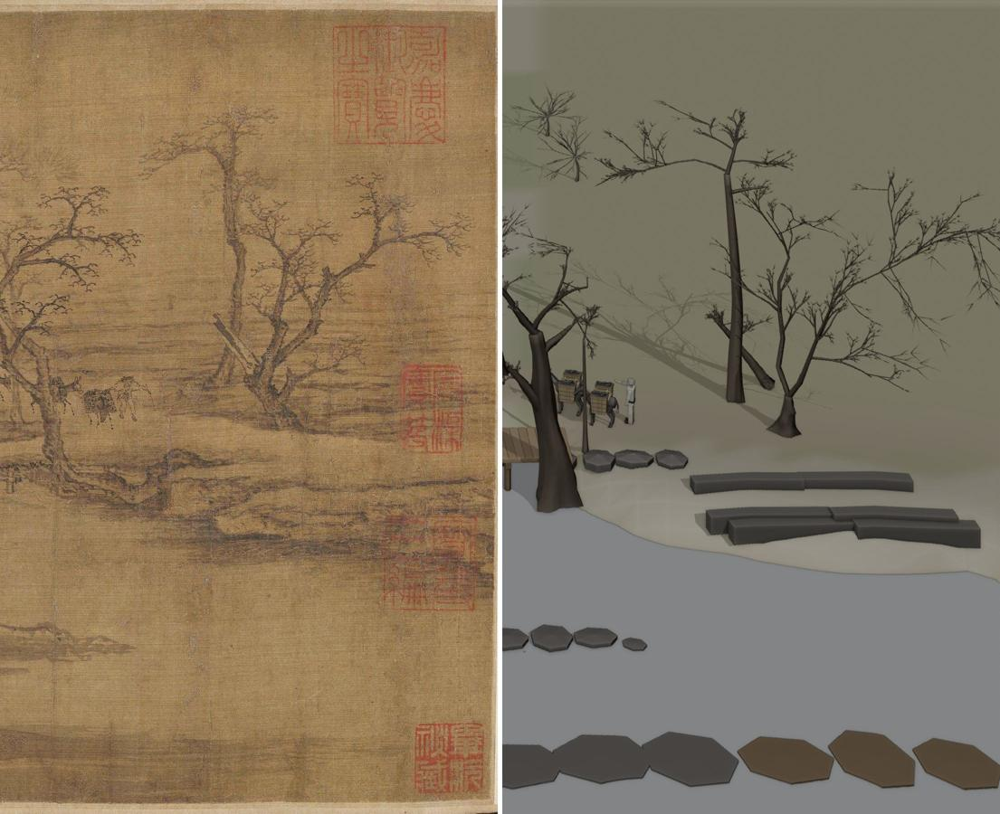
第六轮渲染
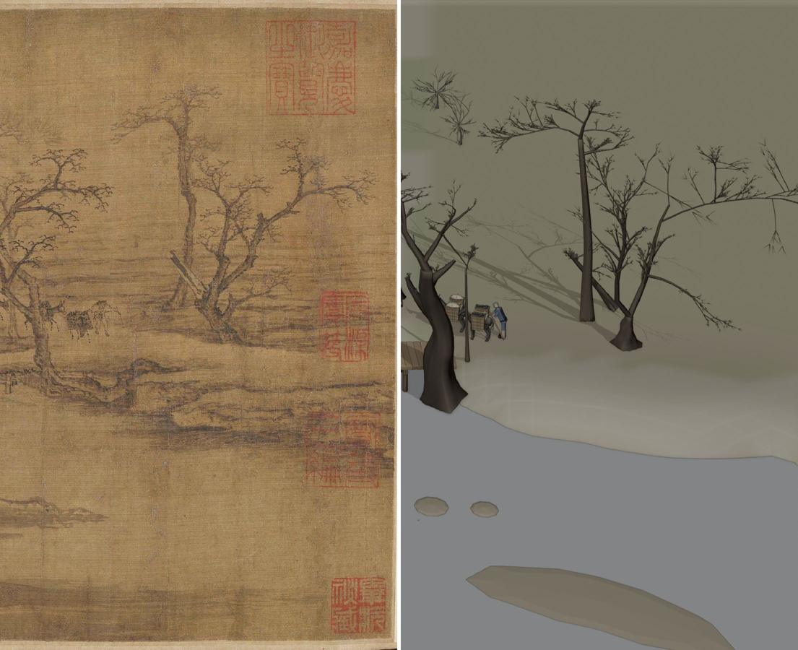
第五轮渲染
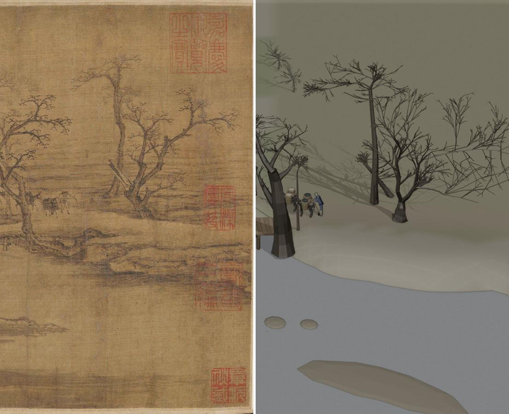
第四轮渲染
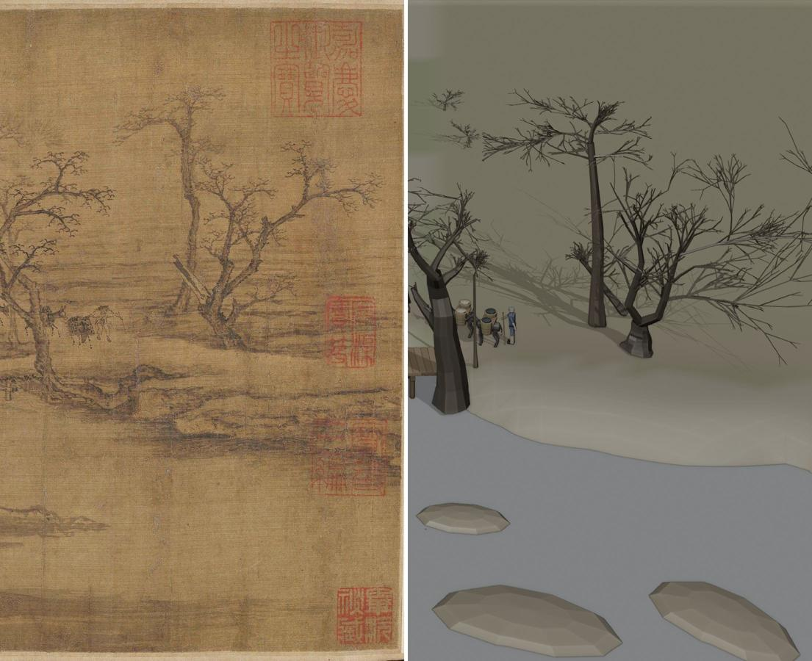
第三轮渲染
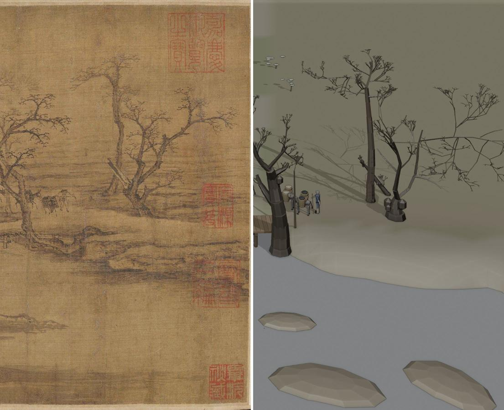
第二轮渲染
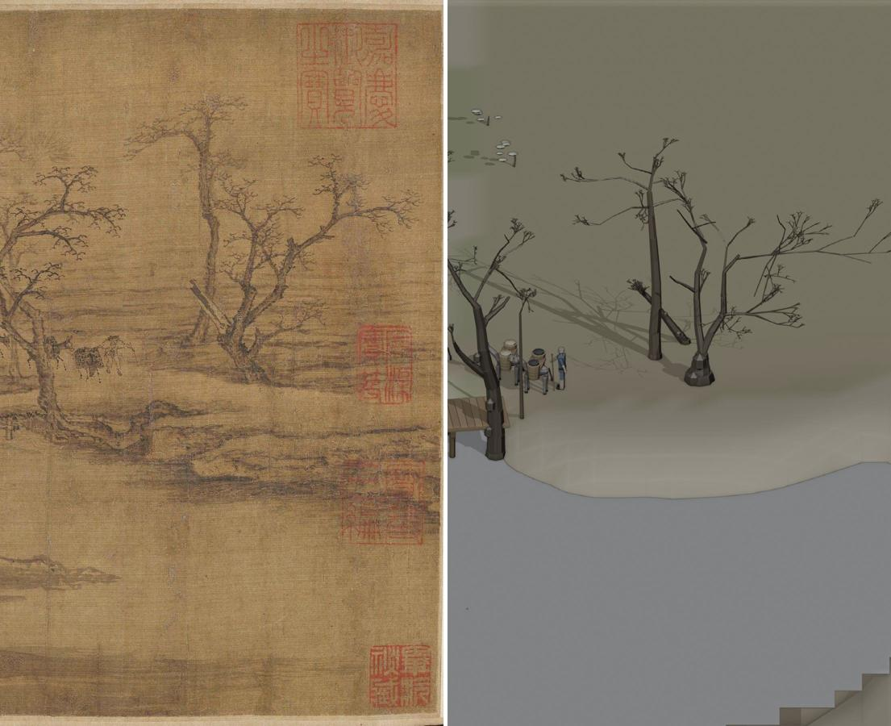
第一轮渲染（修正前）有误与缺失（5）
编号
类型
判定
问题
修正
T0001
tree
有误
Fork position good (base x ~600-640, y 950). Faceted flare plinth still ~2.5x trunk width. Right limb still a long straight wire reaching x 1100, y ~500.
Root flare at most 1.3x trunk width, smooth. Shorten the right limb 35%, bend it upward, end in claw-like twig clusters.
X0001
structure
有误
New ledges are 5 straight, rectangular dark box beams (x 420-1060, y 1005-1210) on a smooth pale slope. The painting has ragged, curving ink ledges across x 0-1050, including the left.
Replace the boxes with irregular, curved, tapering ledge strips following the bank contour. Extend them to x 0-400, y 1000-1150. Use a darker earth material.
X0002
structure
有误
Now flat, horizontal and full width (good), but it is six separate hexagon slabs with gaps at y 1610-1745. Slabs at x 0-600 are grey, slabs at x 600-1100 are brown.
Merge them into one continuous strip with a ragged edge, x 0-1100, y 1600-1770. Dark ink wash at the left, fading gradually to the right, no brown.
X0003
structure
有误
Now flat and dark (better), but built as four separate hexagonal pebbles at x 0-310, y 1380-1440, not one ragged tapering shoal.
Merge them into one irregular strip from x 0 tapering to a point at x 300. Ragged ink edge, rise 0.2 m.
P0001
person
有误
Raised right arm is empty; the painting shows a short stick angled up toward the donkey.
Add a short stick (~0.8 m) in the right hand, angled up-left.
人群
path by donkeys x 100-330 y 820-950：画中约 1 人，模型 1 人。Drover P0001 at x ~265-300, behind the donkey. Position good. Right arm now raised forward and clothes light, both fixed. The painted short stick in his hand is missing.
模型多出的东西
(45, 1010) Wooden plank platform at x 0-90, y 945-1085, still present. The painting has only a tiny low fence at x 0-50, y 1000-1060.
(183, 850) Thin straight pole with a twig tuft at x ~183, y 670-1000, still present between the left tree and the donkeys. Not in the painting.
(270, 1015) Three faceted hexagonal stones at x 165-380, y 990-1045 on the bank. The painting has ragged ink rock ledges here, not pebbles.
(120, 300) Twig tufts floating without trunks at x 40-210, y 180-400, still present. The painting has only faint misty crowns.
(60, 950) Big left tree (probably owned by tile02): its trunk is still ~90 px wide vs ~40 px painted.
tile02 · 12.9–28.7 cm 3/5
正确 13 · 有误 10 · 缺失 0 · 忽略 2
The scene still reads as the painting: a bare-tree grove on the left bank, the driver and four pack donkeys walking left on the far path under T0009, a footbridge over the creek and the empty punt below it. T0014 is now close to the painted width (~90 px base) and its limbs end in twigs, not stubs. The footbridge is still the flat, wide 4-post plank deck instead of a narrow humped pile bridge. Below y~1370 the whole tile is flat grey water where the painting has layered dark bank bands, water still fills x 0-95 of the left bank, and the slab islands have multiplied (three at y~1410, two large ones at y~1680). Treeline tufts are still dark spiky stars and hard cast shadows still streak across the far ground.
与上一轮相比：Improved: T0014 trunk now ~90 px wide (was ~180) and its left arm tapers into twigs (no hollow stub); donkey panniers read as charcoal loads. Worse: the slab islands multiplied and darkened (3 at y~1410, 2 large at y~1680). Still wrong: flat 4-post footbridge, water at x 0-95, missing lower bank layers, reed tuft, dark spiky treeline tufts, hard cast shadows, sparse left grove.
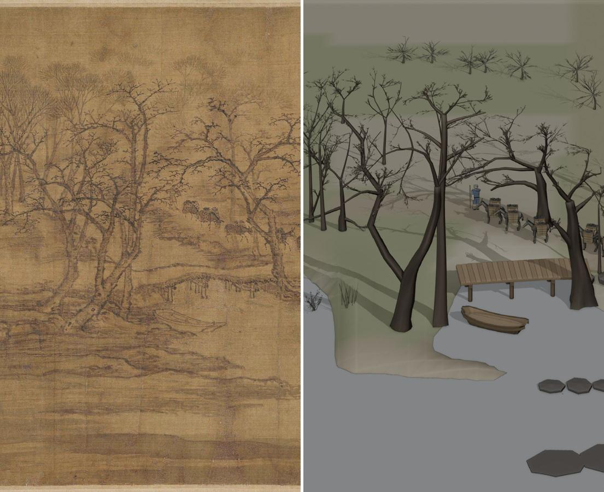
第六轮渲染
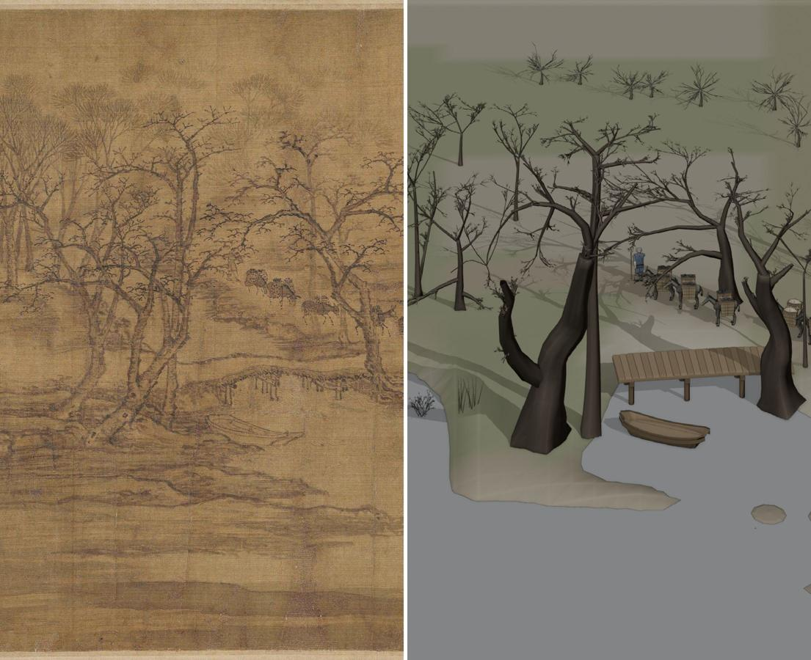
第五轮渲染
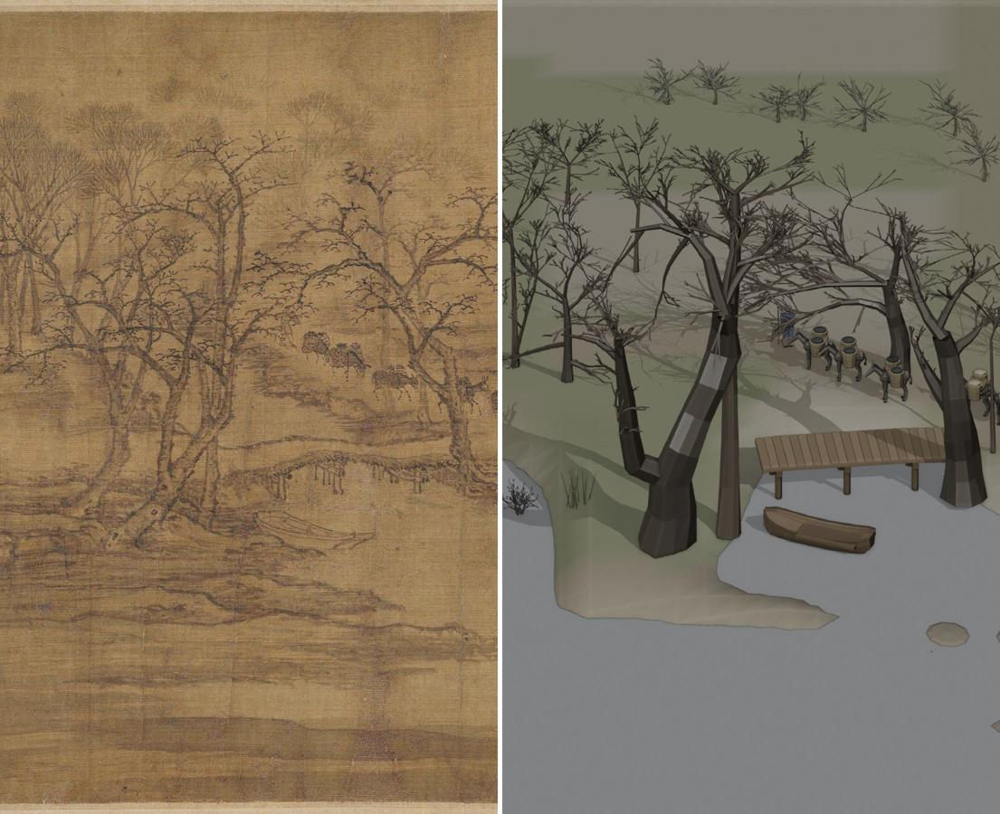
第四轮渲染
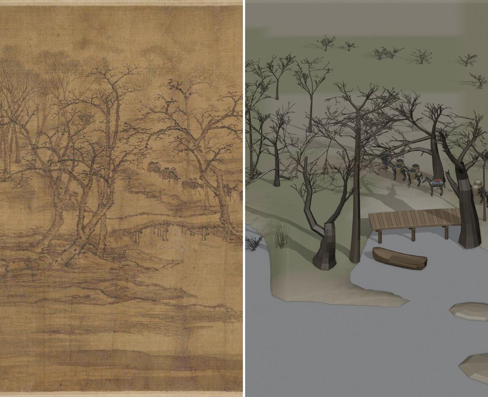
第三轮渲染
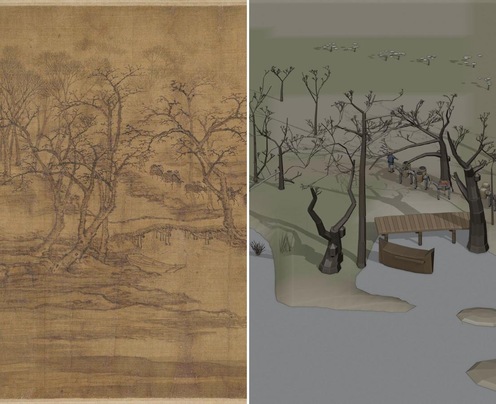
第二轮渲染第一轮渲染（修正前）有误与缺失（10）
编号
类型
判定
问题
修正
T0005
tree
有误
Right place (crown x 990-1100, y 290-400); crown is a dark sparse spiky twig star, painting has a pale dense feathery fan tuft.
dense fine upward-fanning twigs, pale olive-grey, low contrast
T0006
tree
有误
Right place (x 925-1065, y 190-300); dark spiky star crown instead of a pale feathery tuft.
same as T0005
T0008
tree
有误
Right place, height ok; dark open twig star, painting has a pale dense tuft.
same as T0005
X0007
structure
有误
Unchanged: flat plank deck x 565-1060, y 950-1045 (~95 px deep) on 4 thick posts; painting has a narrow humped deck on ~10 thin pile pairs, x 470-990.
rebuild: humped deck x 470-990, depth ~25 px, crest +20 px at x~620, 8-10 thin pile pairs; or remove stand-in
T0010
tree
有误
Right place; dark sparse star crown merged with T0011, not a pale tuft.
denser, paler fan tuft
T0011
tree
有误
Right place; dark sparse star crown overlapping T0010.
denser, paler fan tuft
X0008
structure
有误
One smooth pale sand tongue x 95-750, y 1200-1370; painting has layered dark bank bands across x 0-950 down to y~1450.
darken the spit, extend to x 950, add a second low bank layer y 1380-1450 across x 0-900
T0013
tree
有误
Right place, size ok; dark spiky star crown, painting has a pale feathery tuft.
denser, paler fan tuft
T0015
tree
有误
Right place, size ok; dark sparse spiky crown, painting has a round pale dense tuft.
paler olive-grey, denser fine twigs
X0010
structure
有误
Correctly excluded, but terrain still stops at x~95: water covers x 0-95, y 1000-1800 where the painting has an earth bank.
extend left-bank terrain to x 0 across y 900-1450
人群
donkey path x 600-1100 y 680-920：画中约 1 人，模型 1 人。Driver P0002 at x 615-655, y 675-770 walks left ahead of the train holding a staff; position and facing correct. Clothes bright blue against the muted painting.
模型多出的东西
(980, 1410) Three dark grey octagonal slabs x 865-1100, y 1385-1440 in open water; painting has dark bank bands there.
(960, 1685) Two large dark octagonal slabs x 815-1100, y 1625-1745 in open water; painting shows open river.
(170, 1075) Spiky reed tuft x 135-205, y 1030-1120 on the bank; nothing distinct is painted there.
(500, 700) Long hard cast shadows of trees across the far ground; the painting has none.
(150, 400) Left grove x 0-300 is sparse (3 thin trunks); painting has a dense web of trunks and pale feathery crowns x 0-450, y 200-450 (uncatalogued trees).
tile03 · 25.8–41.6 cm 3/5
正确 11 · 有误 11 · 缺失 2 · 忽略 3
All bases still land on their painted points, and the farm group reads as the same hamlet. The hut roof H0003 is lower than in round 6 (about y 680-800 instead of 640-815), and the seated figure under the shed is now visible. But the hut is still a flat-fronted slab with no gable and hides most of H0002. The shed H0001 is still a closed layered-thatch box, and the gnarled T0025 trunk still runs through its right end. The grove trees are unchanged sparse Y-fork skeletons on tall poles, X0013 and T0027 are still missing, and the river is still a flat grey plane with a shrub standing in it and long cast shadows.
与上一轮相比：Improved: H0003 roof lower and less wall-like (top y ~680, was 640); the seated figure P0003 is now visible at the shed. Worse: nothing new. Still wrong: no gable on H0003 or H0002, so the farmhouse is still mostly hidden; H0001 is still a closed box with the T0025 trunk through it; skeleton grove crowns and the tall T0028 poles are unchanged; T0027 and X0013 are missing; the shrub in the water, the fence bush, cast shadows, the backdrop edge and the flat water all remain.
第六轮渲染
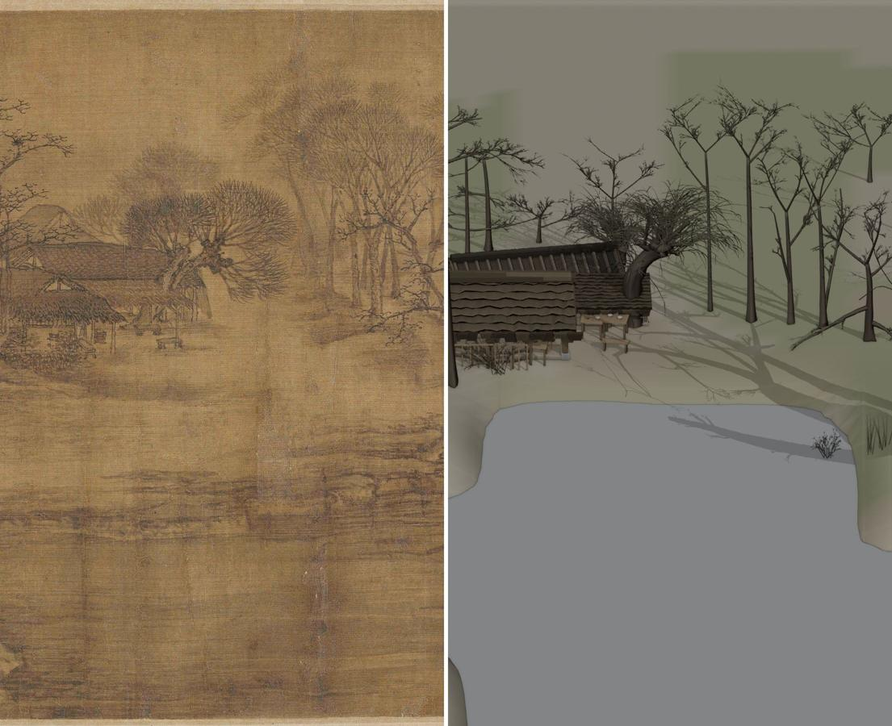
第五轮渲染
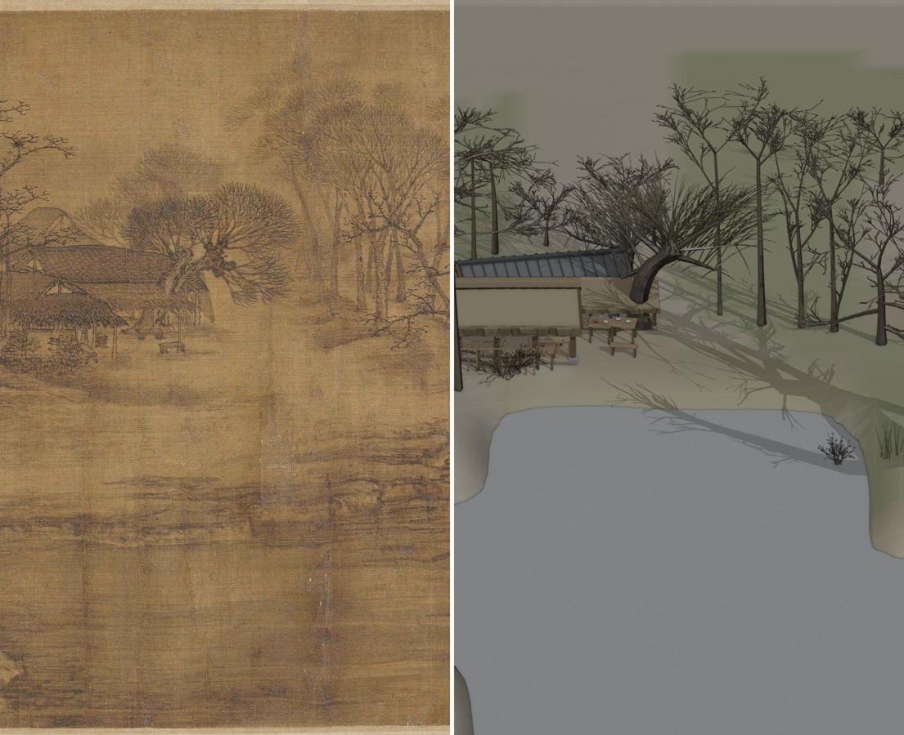
第四轮渲染
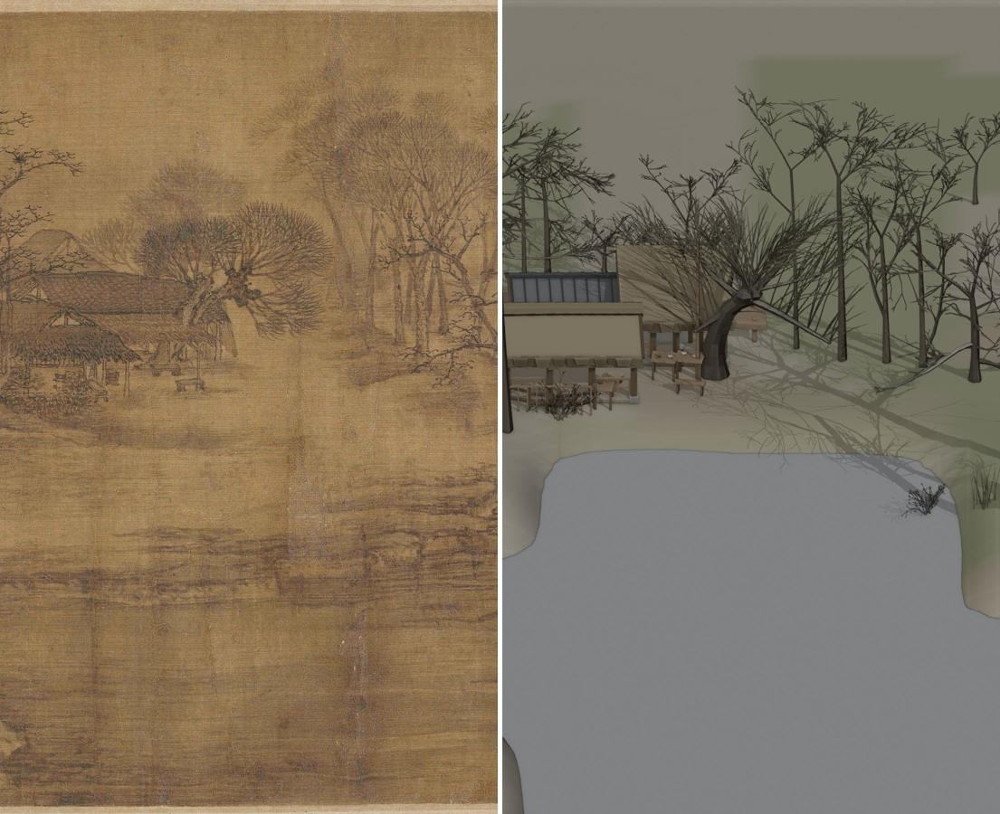
第三轮渲染
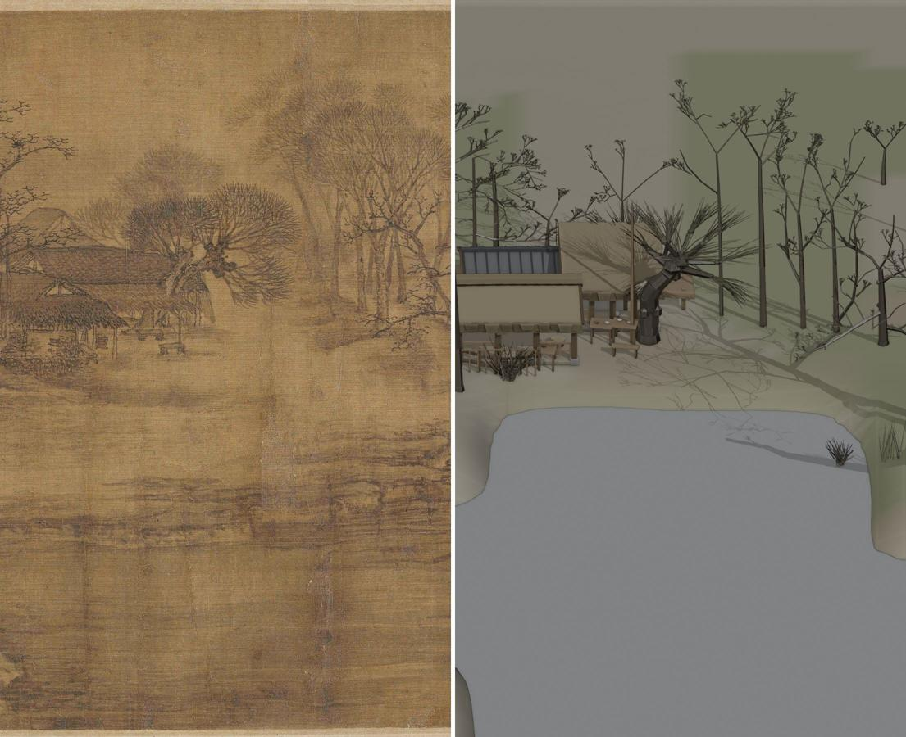
第二轮渲染
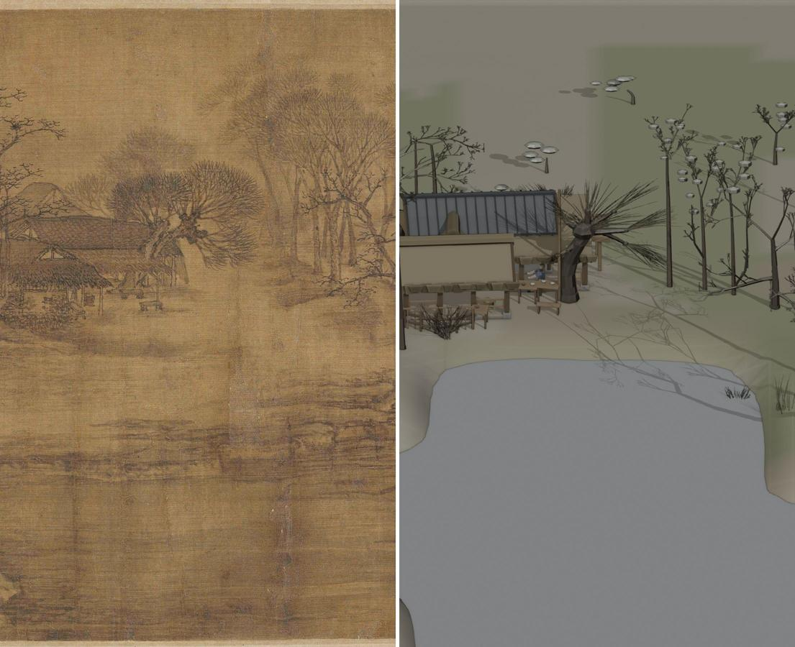
第一轮渲染（修正前）有误与缺失（13）
编号
类型
判定
问题
修正
T0018
tree
有误
Still a sparse Y-fork skeleton at x 1000-1100; the painting has a soft dense grey crown at y 180-450.
dense pale fine-twig crown ~100 px wide, y 180-450
T0020
tree
有误
Base right (~935, 812), but the crown is a few long bare forks, not a dense twig mass at y 230-520.
Trunk to y ~800 is right; the crown is a sparse Y-fork, not the dense crown at y 300-630.
dense fine-twig crown ~125 px wide
T0023
tree
有误
Straight trunk to y ~795 is right; the top is a thin Y-fork, not a soft crown at y 190-340.
crown mass ~100 px wide at y 190-340
T0024
tree
有误
Bare Y top at y ~190-290; the painting has a pale misty crown 220 px wide.
broad pale dense crown x 540-760, y 150-290
T0025
tree
有误
Whip dome x 400-740, y 440-650 matches. The gnarled trunk at x ~450-540, y 630-820 still cuts through the right end of H0001.
trunk base to painted (568,725) behind the shed; shorten the shed or move the trunk ~40 px right
T0026
tree
有误
Sparse bare stick tree at x ~410, top ~y 300; the painting shows a pale misty clump at x 330-490, y 350-470.
low dense pale crown at y 350-470; height ~30% lower
H0001
building
有误
Still a closed box with layered thatch, x 300-540, y 685-770. The willow trunk cuts its right end, and the painting shows an open low lean-to.
open front on posts, single low slope ~25 deg, eave y ~720; end it at x ~480 to clear T0025
T0027
tree
缺失
The round willow crown over the shed (x 290-490, y 450-610) is still not visible.
dense round crown of upward twigs, 200 px wide, top y ~450, trunk at x ~390
T0028
tree
有误
Still tall straight poles at x 50-110 rising far above y 300; the painting has a low pale clump at y 470-565.
height ~60% lower; pale dense crown, top y ~470
H0002
building
有误
Dark tile roof with a ridge at y ~610, but only the strip y 610-680 shows above the hut, and the left gable at x 80-150 is still missing.
add the left gable triangle x 80-150, y 600-700; lower H0003 so the roof shows to y ~690
H0003
building
有误
Roof lowered (top y ~680, eave ~800), but it is still a steep flat-fronted slab x 0-310 with no gable; the painting has a hipped thatch with its ridge at y ~720.
ridge at y ~720; pitch ~30 deg; add a small gable end x 230-300; shaggy eave y ~795
X0013
structure
缺失
The rounded hill behind the farmhouse (x 60-235, y 490-600) is still absent; only the backdrop shows.
raise a low rounded hill in the heightfield behind H0002, peak at painted y ~490
人群
under the shed x 340-500 y 740-830：画中约 1 人，模型 1 人。A seated figure now shows at x ~390, y ~745 behind table F0003/F0001. It sits against the closed shed wall, not under an open roof.
模型多出的东西
(935, 1110) Bare shrub standing in open water with its shadow; still not in the painting.
(115, 880) Bare twig bush in front of the hut fence (x 65-165, y 830-930); the painting shows only the fence.
(700, 860) Long dark cast shadows of the grove trees across the ground and onto the water.
(800, 130) Green-grey backdrop panel with a hard edge at y ~120 and x ~490 behind the trees.
(550, 1400) Uniform flat grey water from y ~990 down; the painting shows horizontal shore and sandbar strokes at y 1050-1250.
tile04 · 38.7–54.5 cm 3/5
正确 16 · 有误 6 · 缺失 0 · 忽略 0
The bare-tree grove still matches well: trunks stand at their painted bases and the crowns reach the painted heights. The yard props are slightly better: the haystack is now pale, the pale block behind it is gone, and the walking man has a dark head-wrap. The worst errors have not changed for several rounds. A grey water channel still covers y ~1260-1555 and the right edge from y ~1010, where the painting shows dry misty bank. H0004 is still a layered-board box about twice too large. The near-bank rocks are smooth pale slabs, and the fence is still too near the viewer.
与上一轮相比：Improved: the haystack is pale instead of dark brown; the pale block behind it is gone; P0005 now has a dark head-wrap. Got worse: nothing clear. Still wrong: H0004 size, H0006 plank board, fence ~50 px too near, haystack form (jar, not stack), the water channel, the smooth near-bank rocks and the near-bank spikes.
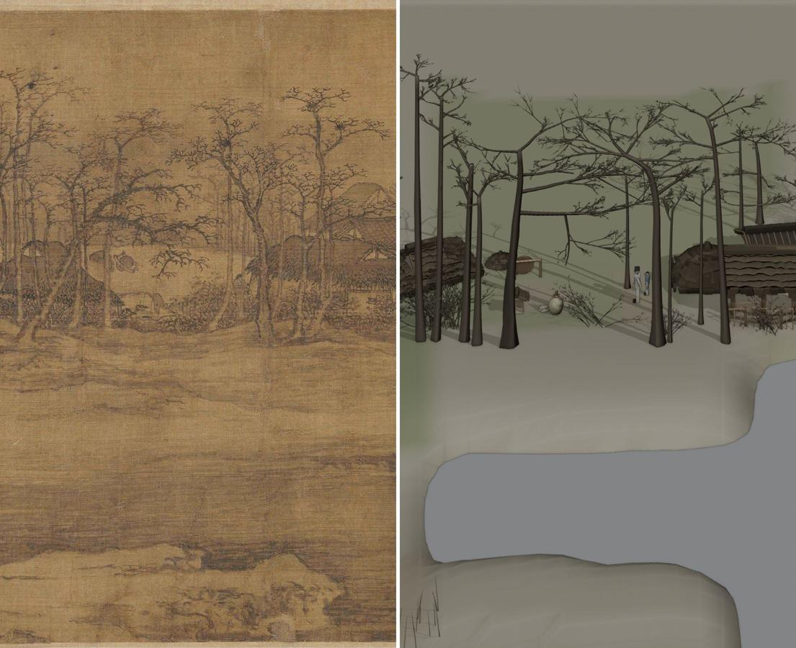
第六轮渲染
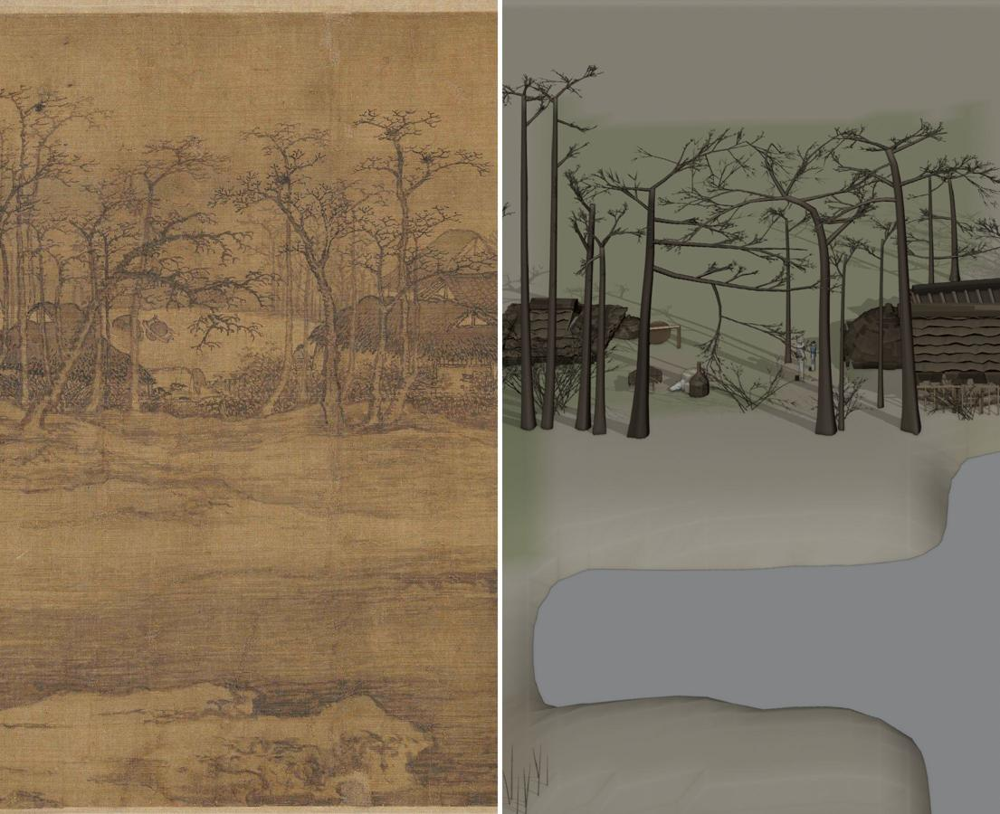
第五轮渲染
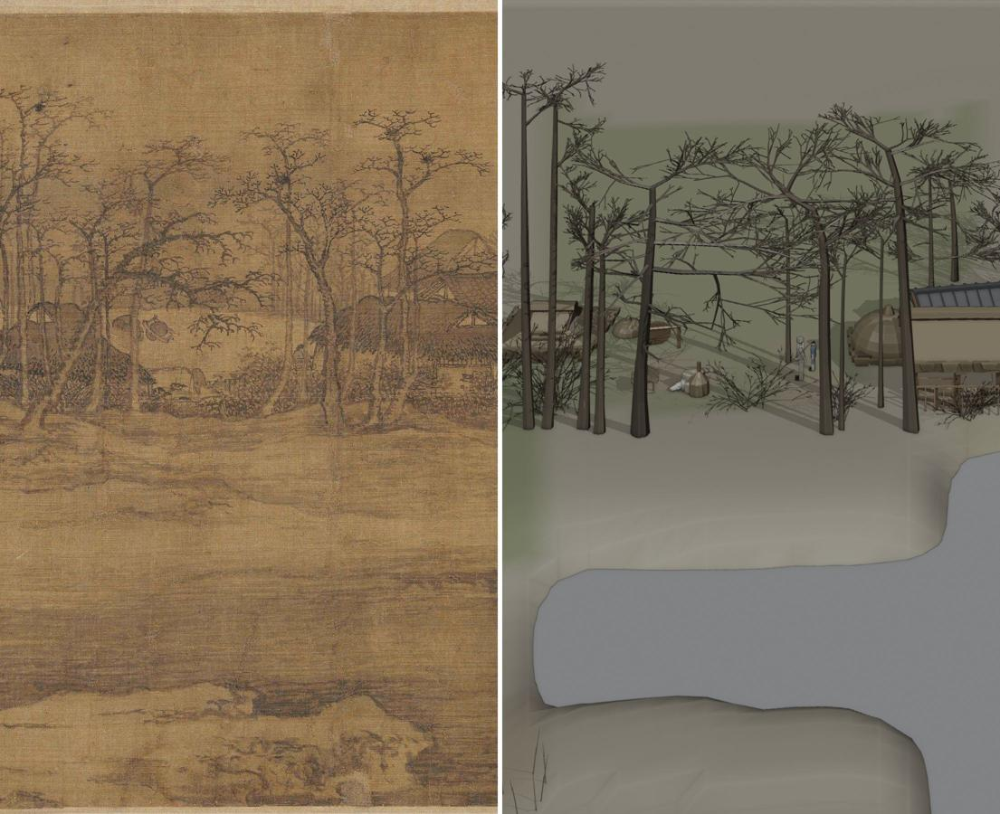
第四轮渲染
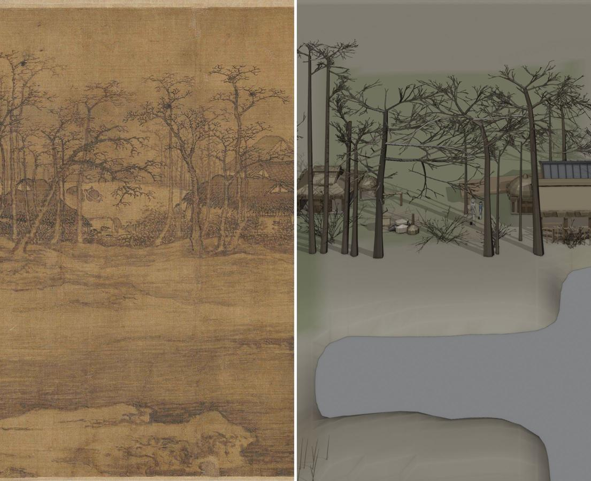
第三轮渲染
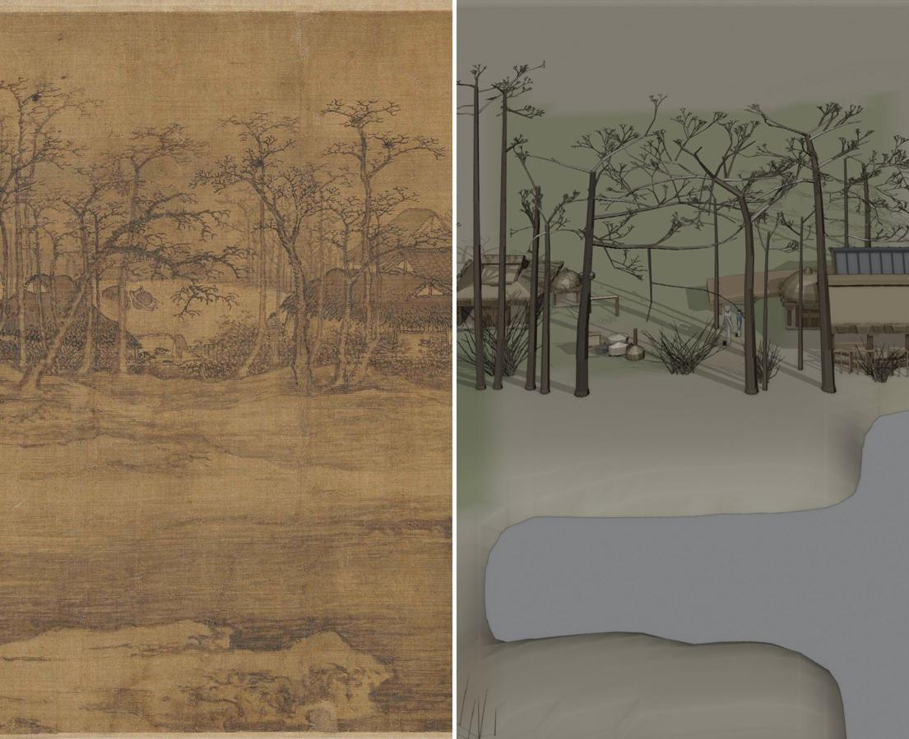
第二轮渲染
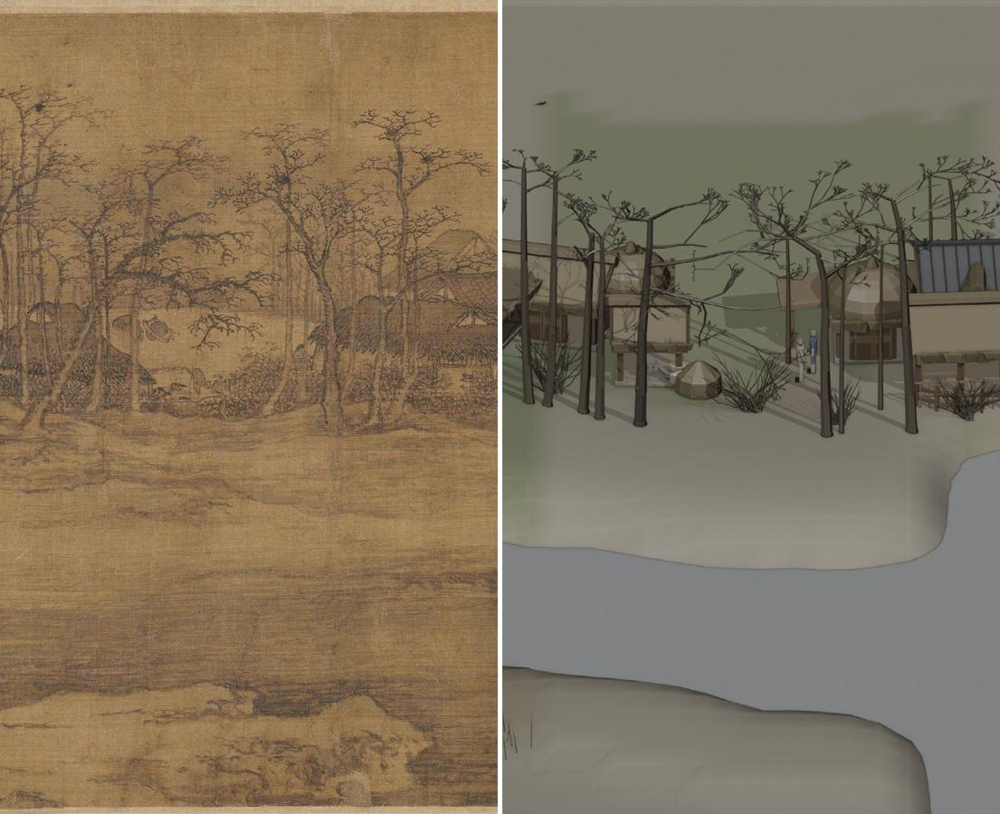
第一轮渲染（修正前）有误与缺失（7）
编号
类型
判定
问题
修正
H0004
building
有误
Still a large layered-board box at x 900-1100, y 620-840, with a raised upper roof. The painting has a small thatched gable at 1010-1100, 668-725.
Scale down about 2.5x: footprint ~90 px at x 1010-1100, eave y ~720; thatched gable roof, low walls.
X0014
structure
有误
Rail fence at x 915-1100, y ~835-915, under the H0004 eaves. The painted rail is at y ~800-815, so the fence is about 40-60 px too near.
Move the fence ~50 px toward the far side (top rail y ~795); clear the H0004 footprint after H0004 shrinks.
X0017
structure
有误
Smooth pale slab with a rounded edge, and grey water at x 940-1100 down the right. The painting has dark ink-washed rock outcrops with crevices on dry ground.
Irregular rock lumps over 430-790, y 1555-1800, dark crevice material; replace the water with dry bank.
X0018
structure
有误
Improved: now pale, at the right place (417-445, 820-875). But it reads as a smooth jar with a dark stopper, not a hatched straw stack.
Wider, rounded-cone straw stack, vertical hatching texture, thin central pole instead of the knob on top.
H0006
building
有误
Still a slanted plank board on a post at ~325-365, 795-865, unchanged for three rounds. The painting has a tiny dark thatched gable hut with an open front.
Build a tiny thatched gable hut, 40 px wide, dark open front, base at (326,872); remove the plank panel.
X0019
structure
有误
Smooth pale bank with no dark ink top edge or crevices. The painted rock mass has a sharp ridge at y ~1515-1560.
Heightfield rock mass with a sharp top ridge at y ~1515-1560 and darker crevice material.
P0005
person
有误
Head-wrap is now dark (fixed), but the trousers are as pale as the jacket.
Optional: darker trousers.
人群
grove path x 640-700 y 740-845：画中约 2 人，模型 2 人。Walking man (pale jacket, dark head-wrap) and the small blue figure are at the right place and scale, both standing on the ground.
模型多出的东西
(580, 1400) Grey water channel across y ~1260-1555 (x 70-1100) and down the right edge x 940-1100 from y ~1010; the painting shows dry misty ground.
(1000, 730) Oversized layered-board box at 900-1100, 620-840 (H0004 overbuilt); it covers T0031 and the conical mound.
(50, 1700) Thin spike or reed props at x 0-110, y 1600-1790 on the near bank; nothing is painted there.
tile05 · 51.6–67.4 cm 3/5
正确 12 · 有误 8 · 缺失 0 · 忽略 0
Composition still matches: willow at left, bare grove centre and right, huts on the bank, all tree bases on their painted points. Tall bare trees now carry side branches and T0050 is back, but H0009 is a banded turtle-shell dome that covers only x ~615-865 (painted 495-845), and H0008 reads as a fallen log of tilted planks, not a peaked hut. The willow still has a long straight diagonal limb and drooping whips (painted twigs fan upward), T0052's crown arches down to the ground, and the grey-blue blob, green tint, hard cast shadows and flat bank without ink edges persist.
与上一轮相比：Improved: tall trees (T0042, T0045, T0049) now have side branches and rounded crowns; T0050 bush visible again; H0009 plinth gone, roof peak now on the painted point. Worse: H0008 became a log-like plank slab; T0052 crown droops to the ground. Still wrong: willow straight limb, H0009 dome form and short left end, sparse T0043, long reeds, blob, green flat bank, cast shadows.
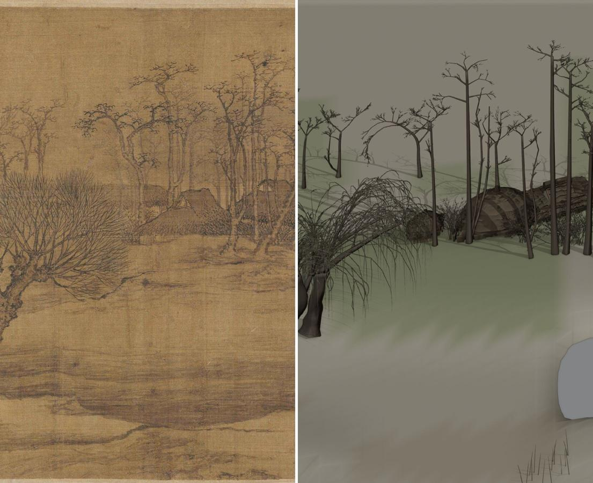
第六轮渲染
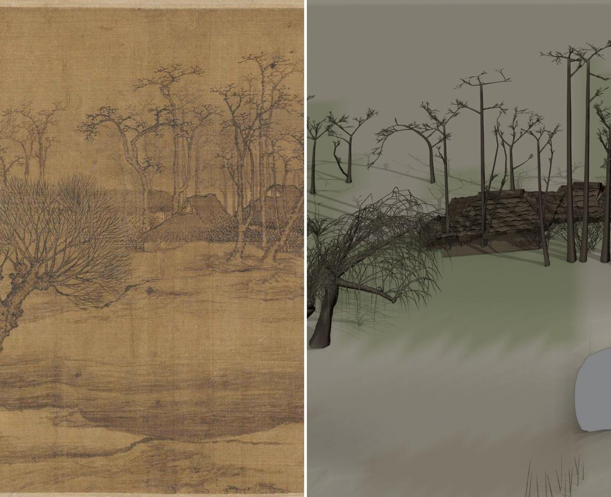
第五轮渲染第四轮渲染
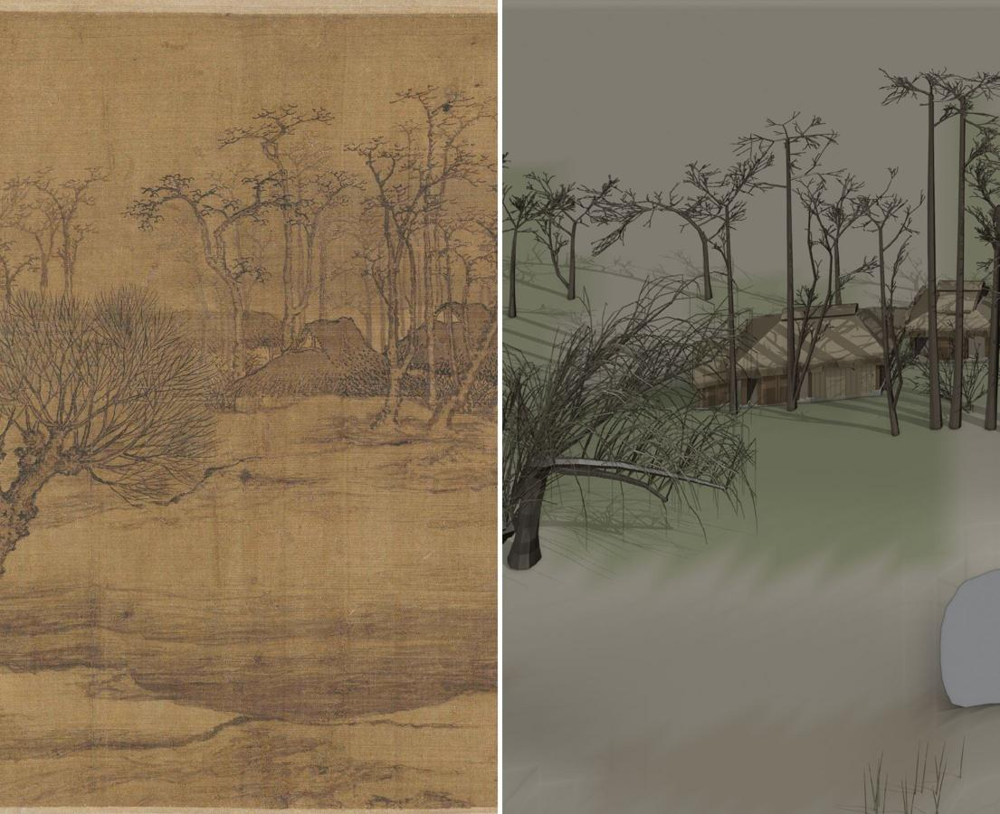
第三轮渲染
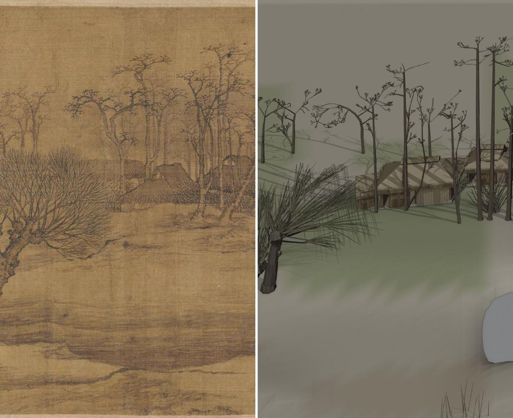
第二轮渲染
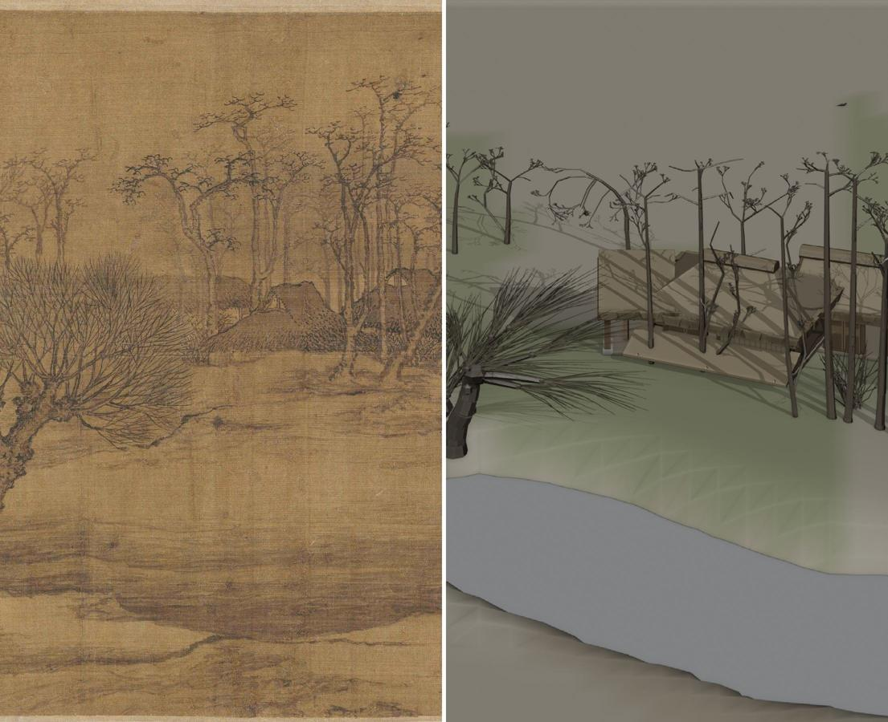
第一轮渲染（修正前）有误与缺失（8）
编号
类型
判定
问题
修正
T0043
tree
有误
Sparse light twigs x ~1010-1100, y ~795-895; painted dense dark scrub hiding H0008's lower wall from x 930.
denser, darker twig scrub 170 x 150 px centred (1015,835)
H0008
building
有误
Long low slab of tilted planks x ~860-1100, top y ~655, reads as a fallen log; no peaked ridge, no pale gable at x 970-1030.
steep peaked thatch hut, ridge y 665, pitch ~50°; pale gable opening at x 1000
T0044
tree
有误
Sparse long straight blades x ~820-1010, y 1600-1800 (200 px tall); painted short dark tufts y 1720-1800.
height 60% lower; denser, darker tufts
T0047
tree
有误
Trunk at x ~845 correct, but crown top y ~415 vs painted 330; too short.
height +15%, crown from y 330
X0020
structure
有误
Bank flat, green-grey; no raised front edge, no ink bank bands y 1000-1250 or dark washes y 1300-1500.
raise bank ~1 m, front edge y ~1250; dark earth bands; remove green tint
H0009
building
有误
Peak at (747,693) right, but roof is a rounded banded turtle-shell dome; spans x ~615-865, left 120 px (painted gable x 520-600) missing.
extend roof left to x 495; steep straight-sided thatch with ridge, hatched straw, no horizontal bands
T0052
tree
有误
Crown is a full arch; left limb droops to the ground at x ~255-270, y ~610, like a hoop.
shorten left limb: tip ends at y ~500; keep arching crown y 385-500
T0053
tree
有误
Straight diagonal limb (90,1150)->(500,830) still dominates; whips droop downward; trunk a smooth column, painted knotted.
remove straight limb; whips fan upward from trunk knot at (170,970); knotted trunk
人群
whole tile：画中约 0 人，模型 0 人。No people in painting or 3D. Correct.
模型多出的东西
(1040, 1405) Grey-blue rounded blob x ~975-1100, y 1250-1560; painting shows plain bank ground with ink washes.
(700, 640) Long hard tree cast shadows across ground y ~550-950 and over hut roofs; painting has no shadows.
(550, 1100) Green-tinted ground band y ~600-1250 across the tile; green haze at left x 0-130, y 340-650.
tile06 · 64.6–80.3 cm 3/5
正确 5 · 有误 4 · 缺失 0 · 忽略 1
The five pollarded willows stand on their painted bases and lean the painted way, so the grove still reads as the same scene. The worst problem is the crowns. They are sparse whip bundles that top out at y~430-600 (T0056 is a compact brush at y~830-1000), while the painted crowns are dense and reach y~170-620. The trunks are smooth, uniform dark columns, where the painting has knotted, hollowed trunks with mottled bark. T0056 now stands on its base, but its right fork is still a separate trunk. The boulders at T0064 (now dark grey), the green backdrop card and the right-edge limb are all still there.
与上一轮相比：Improved: T0056 moved onto its painted base; the boulders are no longer tan. Worse: nothing clearly worse; the T0061 stub is now a longer upright limb. Still wrong: sparse, low crowns; smooth trunks; the T0063 flap; the separate T0056 fork trunk; the T0064 boulders; the green backdrop card; the right-edge limb.
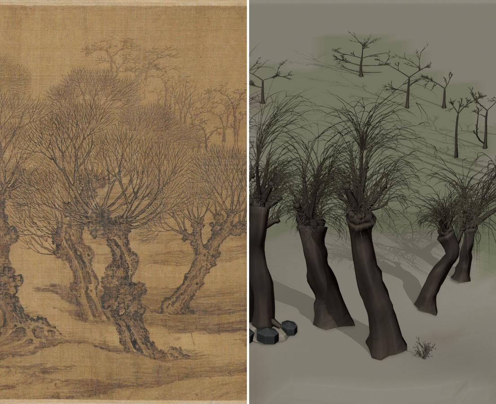
第六轮渲染
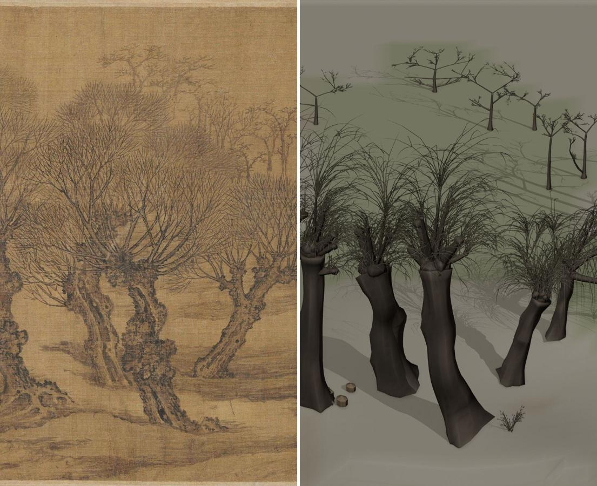
第五轮渲染
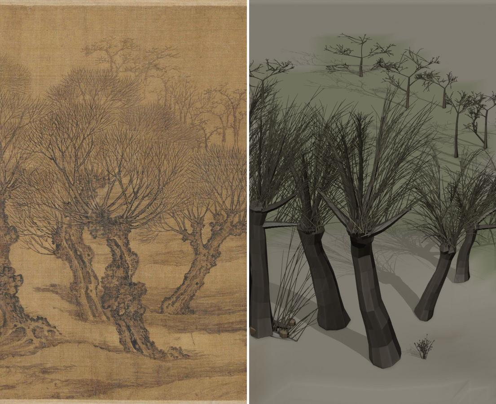
第四轮渲染
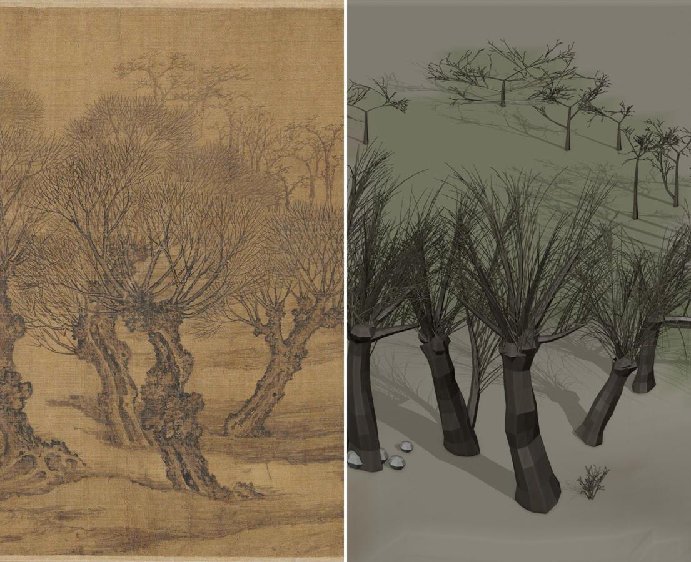
第三轮渲染
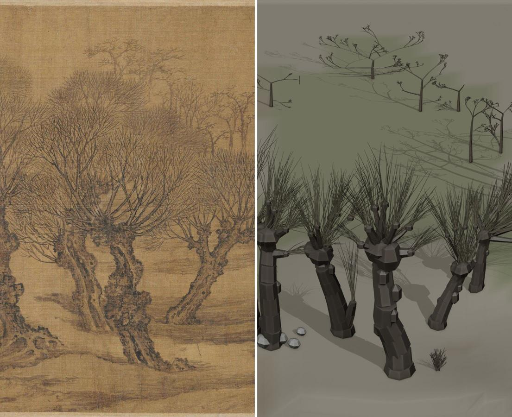
第二轮渲染
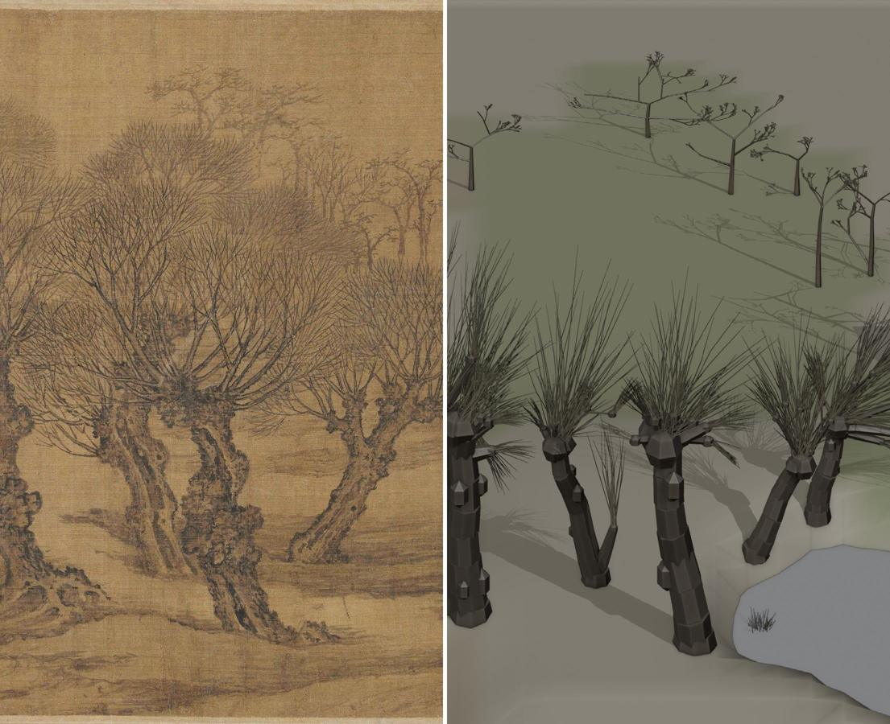
第一轮渲染（修正前）有误与缺失（4）
编号
类型
判定
问题
修正
T0056
tree
有误
Foot now on its base (x~740-845, y~1385). The right fork is still a separate trunk at x~900-990, y 1000-1240. The crown is a compact brush at y~830-1000; painted, it reaches y~620.
Build one foot with two forked limbs and delete the separate trunk; make the crown 2x taller (top y~620) and wider (x 700-1060).
T0061
tree
有误
Foot (y~1600) and head (~540,935) are right. A smooth dark column with an upright stub limb to y~820. The crown is sparse and tops at y~440; painted, it reaches ~170.
Knotted, bulging, mottled trunk; replace the upright stub with knob heads; crown 1.6x taller and 2x denser, top y~200.
T0063
tree
有误
Foot ~(330,1450), head ~(270,990) and lean are right. The pale folded flap is still on the right side of the trunk. The crown is sparse and tops at y~550; painted, ~300.
Remove the flap; knotted, bark-mottled trunk; crown 1.5x taller and 2x denser.
T0064
tree
有误
Smooth column at x 0-100. Dark-grey octagonal boulders remain at x 0-200, y 1400-1490. The painting shows a dark root flare spreading right to x~270.
Delete the boulders; add bark-coloured root knobs spreading to x~270, y 1400-1500; knotted trunk surface.
人群
whole tile：画中约 0 人，模型 0 人。No figures painted and none in 3D. Correct.
模型多出的东西
(945, 1120) Separate pollard trunk at x~900-990, y 1000-1240; in the painting this is T0056's right fork limb.
(100, 1450) Dark-grey octagonal boulders at the foot of T0064; the painting shows root knobs.
(1050, 950) Round limb sticking in from the right tile edge at x~1000-1100, y~940-1000; nothing like it is painted.
(600, 150) Green-tinted backdrop card with hard top (y~150) and left (x~310) edges; the painting has plain silk haze.
tile07 · 77.5–93.3 cm 3/5
正确 5 · 有误 6 · 缺失 0 · 忽略 1
The willow grove still stands on its painted bases, and the far pollard, fence, shed and jar sit where they are painted. The trunks now lean a little and have pollard knob heads, but they are still smooth dark columns. The heads end in upright stub 'fingers' and collar rings instead of dense twig domes, and the crowns stay sparse strand fans that top out around y 350-450 (painted y ~230). The near bank is the worst area: octagonal dark blocks remain, and a new large pale faceted slab sits at x 80-500, y 1450-1610 where the painting has an eroded earth bank. The shed keeps its plank and tile slab, and the basin is still a bare post.
与上一轮相比：Improved: trunks lean, are wider and now have pollard knob heads; T0069's fan is wider and taller. Worse: a new pale octagonal slab x 80-500, y 1450-1610 on the near bank; the stub 'fingers' look artificial. Still wrong: sparse low crowns, smooth trunks, octagonal rocks, flat bank, plank slab over the shed, bare basin post, stray trees at (165,690) and (990,360).
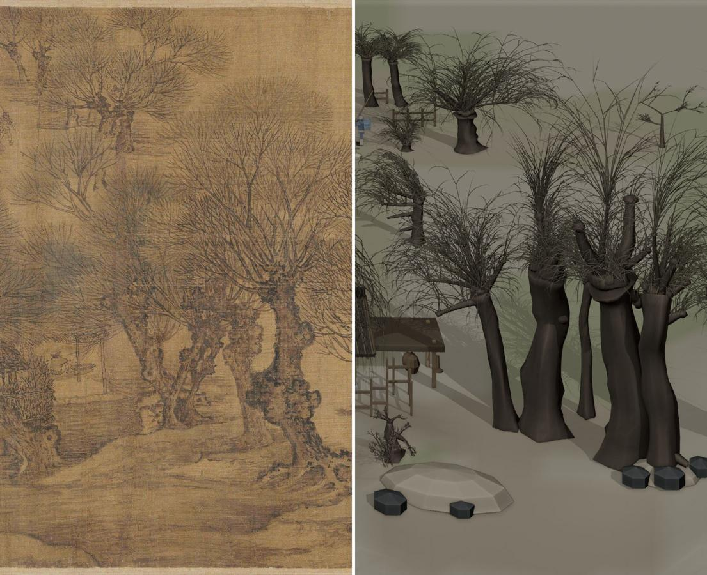
第六轮渲染
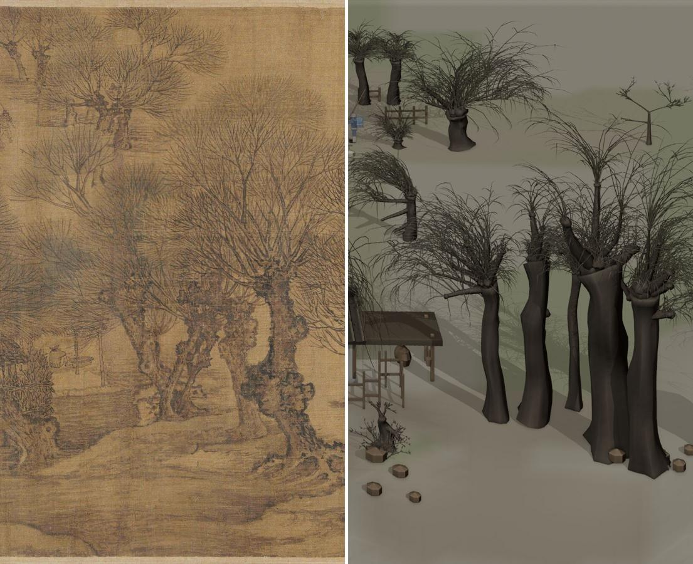
第五轮渲染
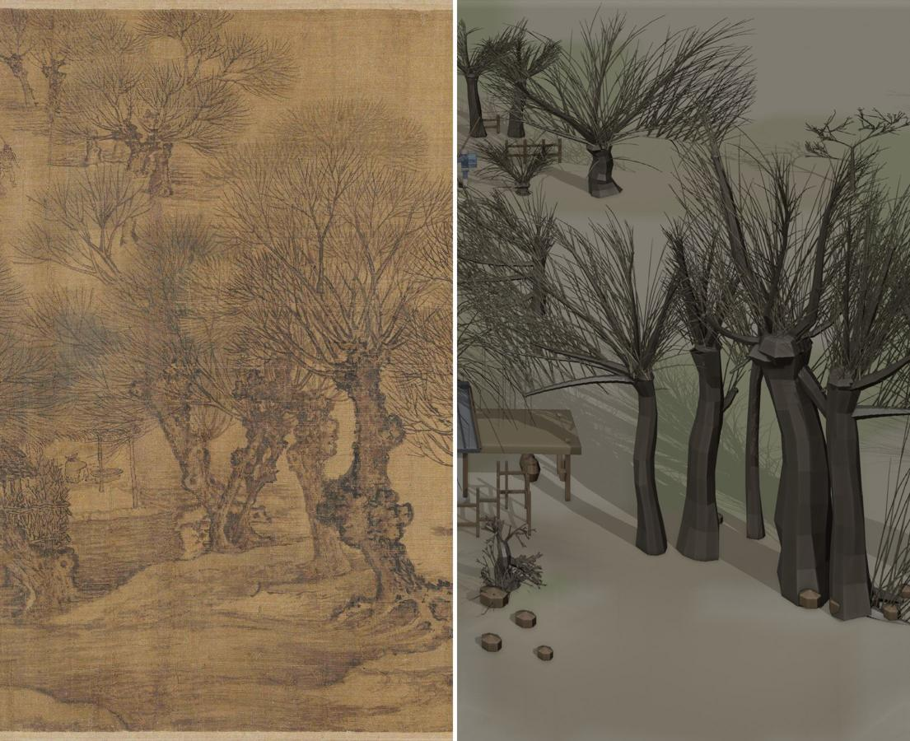
第四轮渲染
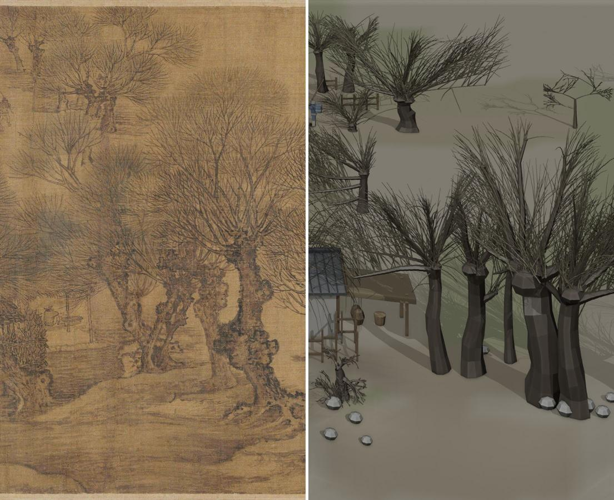
第三轮渲染
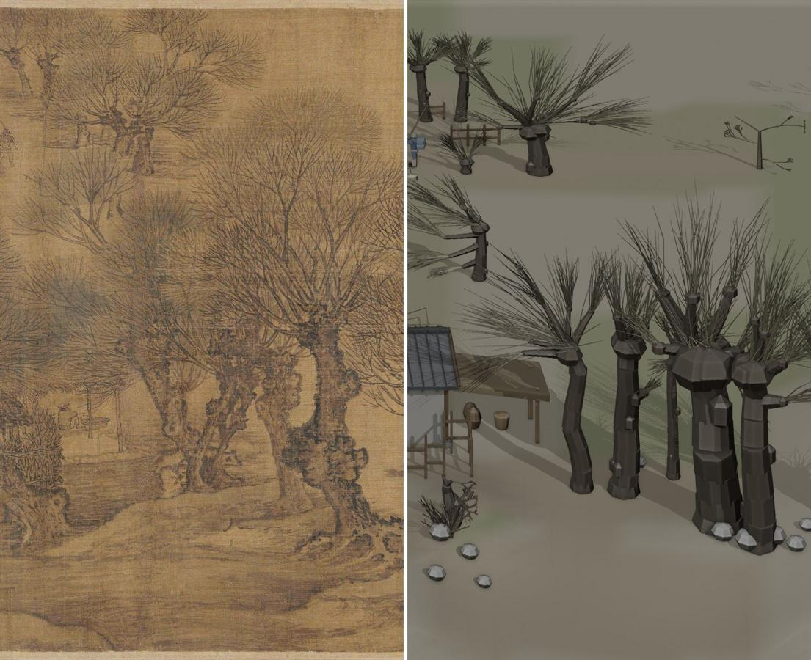
第二轮渲染
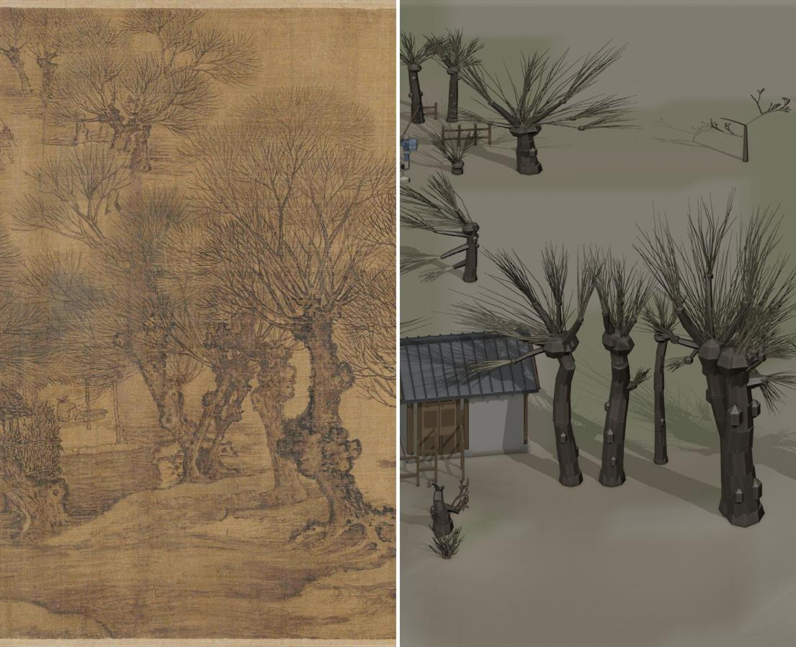
第一轮渲染（修正前）有误与缺失（6）
编号
类型
判定
问题
修正
T0066
tree
有误
Twin trunk x 750-1030 in place with a knob head at y ~900, but smooth columns; upright stubs to y ~610; crown sparse, top y ~350.
Add burls, 2-3 hollows, flared root base; replace stub fingers with dense forked twig dome to y ~250.
T0068
tree
有误
In place x 550-690 and wider now, but smooth; no knobby dark head at y 850-960; crown sparse.
Add knob head with burls at y 850-960; twig crown 2x denser, top y ~300.
T0070
tree
有误
Trunk x 430-520 now leans slightly; one long bare side limb sticks out to x ~230 at y 940; twig crown to the left still sparse.
Tilt trunk 15° more left; replace bare limb with dense twig sprays over x 0-450, y 500-900.
X0021
structure
有误
Still three or four small octagonal dark blocks on a pale pad x 850-1100, y 1380-1480; painting shows a large irregular ink rock-and-root mass.
Replace with 2-3 large irregular rocks (subdivided, noise-displaced) x 840-1100; drop pale pad; raise bank lip 0.5 m.
X0023
structure
有误
Two octagonal blocks x 60-220 beside a new pale faceted slab x 80-500, y 1450-1610; painting shows an eroded bank edge dropping to water.
Remove slab and blocks; build ~1 m terrain step along y 1450-1620, x 0-560, with dark rocks on its face.
F0006
furniture
有误
Still only a post with a small lump at x 245-275, y 1100-1190; painting shows a wide shallow hatched dish on a stand.
Add a shallow dish 0.5 m wide on a 0.7 m stand at (258,1150).
人群
upper left x 0-60 y 330-480：画中约 1 人，模型 1 人。One figure at the left edge in both; fine.
grove, shed and near bank x 0-1100 y 500-1700：画中约 0 人，模型 0 人。No people in either; correct.
模型多出的东西
(290, 1530) Large pale octagonal faceted slab x 80-500, y 1450-1610 on the near bank; not in the painting.
(175, 1040) Flat dark plank/tile slab x 50-300, y 990-1100 over the shed; painting shows an open pole shed under twigs.
(100, 1210) Ladder-like rail fences x 0-180, y 1100-1300; painting has a woven wattle fence with brush.
(165, 690) Floating trunk with stub limbs x 110-220, y 600-770 is still present; painting has only twig sprays there.
(990, 360) Sparse forked bare tree x 890-1100, y 265-460 is still present; painting has T0066's dense crown there.
(800, 700) Upright smooth stub 'fingers' on the pollard heads x 700-880, y 610-940; painting has dense twig shoots.
tile08 · 90.4–106.2 cm 3/5
正确 10 · 有误 11 · 缺失 0 · 忽略 3
The scene still reads as the same place: the procession with sedan and two riders on the upper road, two tiled farmhouses under the giant willow T0078, and the donkey group on the lower road, all with bases close to the painted points. The roofed gate is gone and the sedan cabin is now brown wood, but most long-standing problems remain: the extra house and long wall at top left (x 45-420, y 120-500), post-and-rail fences where the painting has bound brushwood, T0078 as an open cage of long whips instead of a dense fine-twig dome veiling the houses, plank-like roof courses, palm-like pollard trunks, and stray octagonal stones and a pale rock slab at lower right. The lower third (y 1450-1780) is flat empty ground where the painting has banked, sloping earth.
与上一轮相比：Improved: X0026 roofed gate and tall posts removed, now a plain gap; sedan cabin body is brown wood. Unchanged/worse: none clearly worse; a pale rock slab is newly visible at lower right. Still wrong: extra top-left house and walls, post-and-rail fences, cage-like T0078, palm-like pollards, plank roof courses, black sedan cap, horse-like donkey, male P0017, P0020/P0021 loads, stones by T0072, extra trunk by H0012.
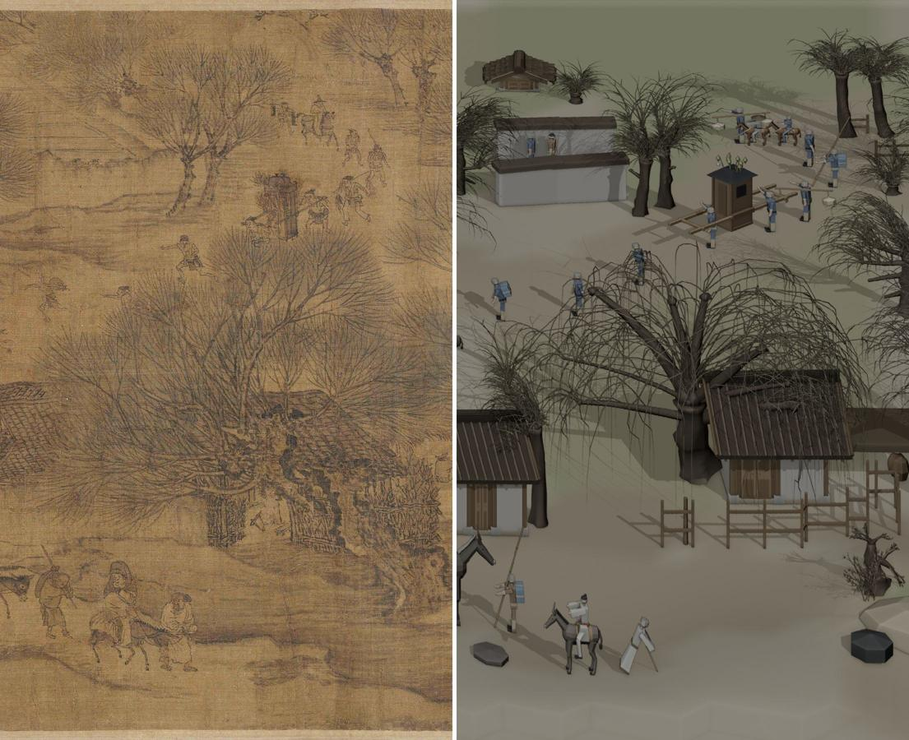
第六轮渲染
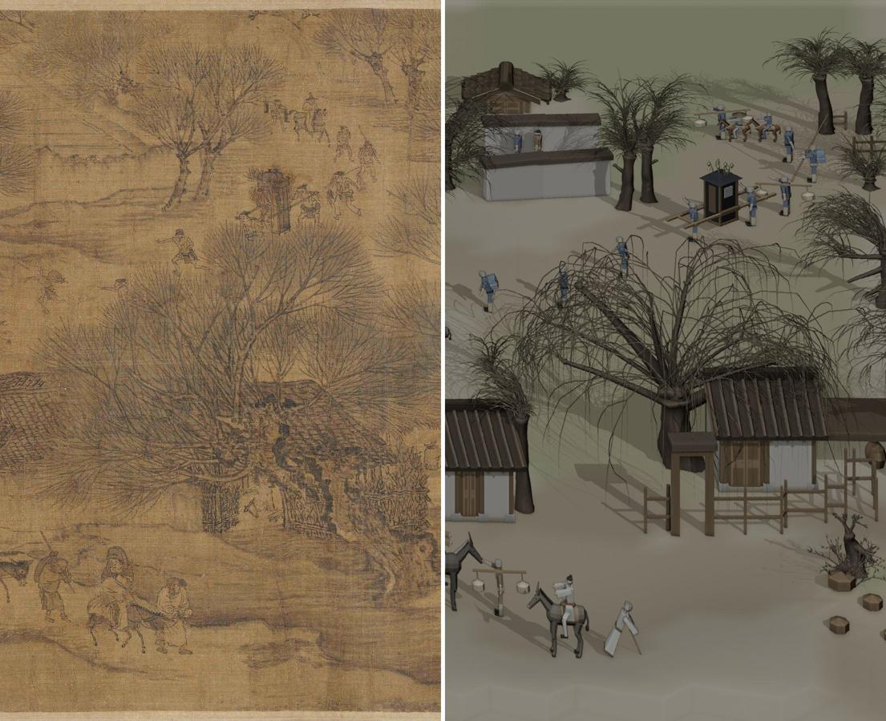
第五轮渲染
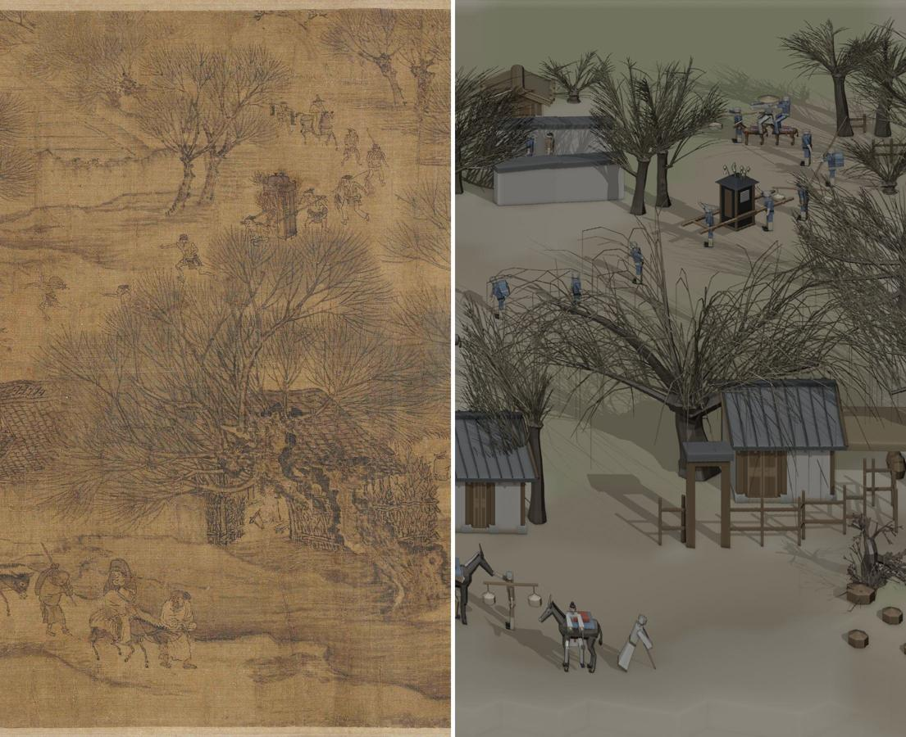
第四轮渲染
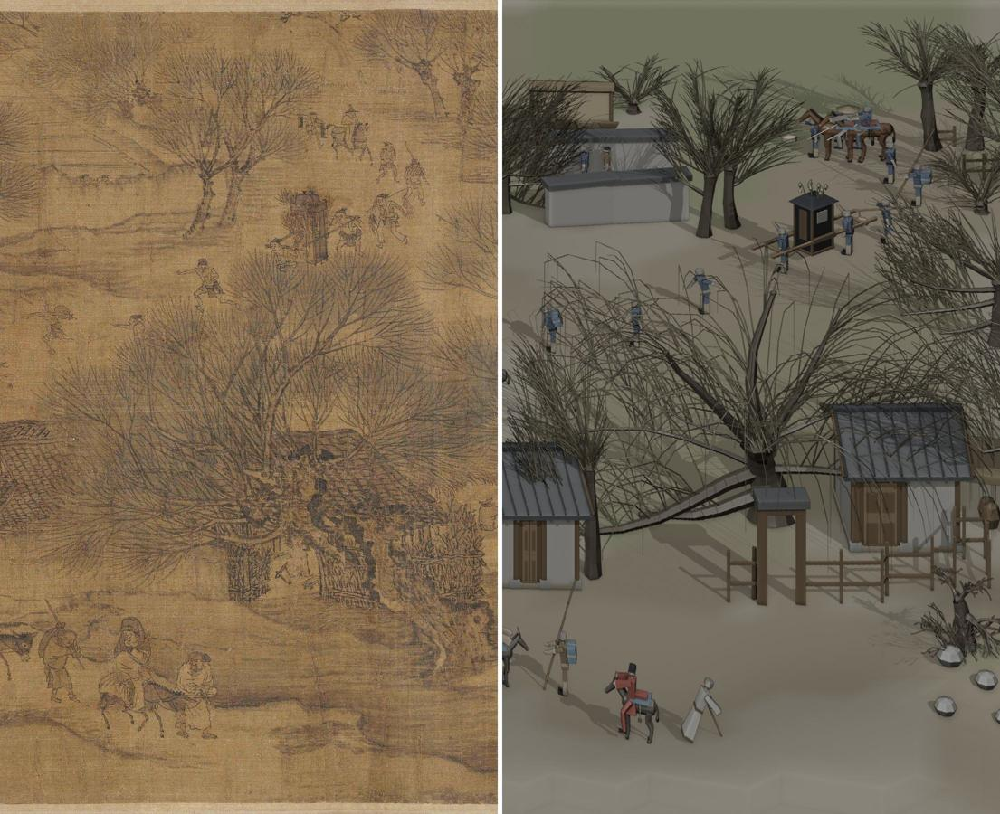
第三轮渲染
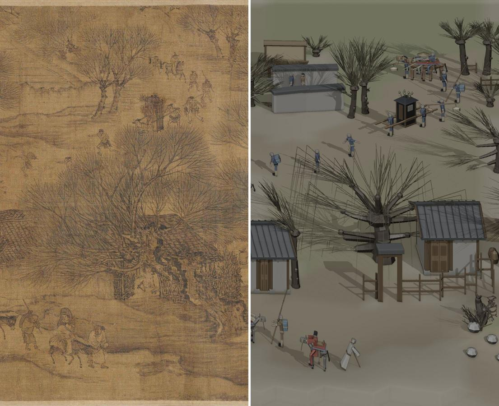
第二轮渲染第一轮渲染（修正前）有误与缺失（16）
编号
类型
判定
问题
修正
T0071
tree
有误
Base (1040,330) right, but trunk is a smooth straight column with a tuft head: reads as a palm, not a knobbly pollard.
Knobbly swollen head, 3-5 thick fanning limbs, then short twigs; trunk leans slightly left.
X0024
structure
有误
Still a post-and-rail timber fence (x 880-1100, y 1110-1320); painting shows bound brushwood with tall upright twigs.
Fence style = brushwood: dense vertical twigs between stakes, two binding bands, height ~1.3 m.
H0011
building
有误
Roof x ~605-970 ok, but courses are wide planks ~10 px (painted tiles ~5 px); front wall fully exposed; right annex is a long flat dark roof.
Tile course width halved; annex x 900-990 as small thatch lean-to; T0078 twig curtains over the front to y ~1250.
T0076
tree
有误
Base (920,330) right; smooth columnar trunk with tuft head reads as a palm; painting shows a gnarled pollard.
Same as T0071: knobbly head, thick fanning limbs, leaning trunk.
X0025
structure
有误
Still post-and-rail (x 640-850, y 1180-1330) along the courtyard front; painting shows bound brushwood.
Fence style = brushwood.
S0001
sedan
有误
Cabin x ~615-735, y ~410-560 placed right; now brown wood, but black hip cap with a few green spikes on top; no sprays on the sides.
Cabin 165 px tall; drop black roof colour; willow sprays draped over roof and hanging down all sides.
T0078
tree
有误
Trunk at x ~600 right. Crown is an open cage of long arching whips on heavy limbs; painting shows a dense dome of short fine twigs over both houses.
3-4x more twigs, half as long; thinner limbs; twig curtains to y ~1250 over H0011 and H0012 fronts.
X0027
structure
有误
Fence panel left of the gate (x 500-555) is still post-and-rail.
Fence style = brushwood panel ending in a slender post at x 557.
A0010
animal
有误
Right place (x ~215-360, base ~1640) but legs long and body high: reads as a grey horse; painted donkey is low, stocky, big ears.
Legs 30% shorter, body deeper, longer ears, head lower; brown-grey.
H0012
building
有误
Roof x 0-205, y ~995-1170 about right but plank-like courses, no thatched ridge band; wall and door fully exposed.
Finer tile courses; thatch ridge band x 0-120; hang T0078 fronds over the front.
T0083
tree
有误
Sparse crown at the left edge; its lower half is hidden behind the extra house and wall.
Remove the extra compound; denser needle-like twig clusters; crown up to y 170.
P0017
person
有误
Male figure with topknot astride; painting shows a woman in a pale hooded cloak.
Female body; hooded cloak/head cloth; side-saddle facing the viewer.
P0020
person
有误
Long pole held vertically in front plus blue box backpack; painting shows the pole over the right shoulder with a bundle.
Pole over right shoulder, tip at (110,1330), round bundle at rear end; no backpack.
P0021
person
有误
Blue box backpack instead of a large round bundle.
Load = large round cloth bundle on the back.
P0015
person
有误
Bent over a stick; painting shows him upright, turned back, holding the halter rope with both hands.
Upright; rope from both hands to A0010's head; torso turned toward the donkey.
P0012
person
有误
White round trays hang from the pole; painting shows square boxes.
Load = two square wooden boxes.
人群
upper procession road x 600-950 y 220-600：画中约 8 人，模型 9 人。Placement matches; riders astride. All men share the blue tunic and box backpack; P0012's square boxes are white round trays.
middle slope x 50-510 y 560-780：画中约 3 人，模型 3 人。Positions good (x ~110, 290, 450). P0016 fully exposed (painted half-hidden in twigs). P0021 still blue box instead of round bundle.
lower road x 0-500 y 1330-1650：画中约 3 人，模型 3 人。Positions good. P0017 still a topknot male astride; P0020 holds a vertical long pole plus blue box; P0015 bent over a stick.
distant farmstead x 170-250 y 330-410：画中约 2 人，模型 2 人。Visible but standing against the wall of the extra compound.
模型多出的东西
(230, 320) Tiled house (x 60-240, y 120-220) and two long grey walls (x 90-420, y 270-500); painting shows field banks and a tiny distant farmstead. Remove or shrink to far scale.
(1015, 1570) Dark octagonal stone (x 965-1070, y 1530-1610) and large pale rock slab (x 980-1100, y 1450-1560); not painted.
(85, 1585) Flat dark octagonal stone (x 45-130, y 1560-1610) beside the donkey; not painted.
(1010, 330) Post-and-rail fence pieces at x 940-1100, y 270-390 near T0071/T0076; not catalogued.
(200, 1170) Dark vertical trunk beside the H0012 door (x 175-225, y 1040-1285); painting shows only T0078 fronds.
(1030, 1010) Long flat dark annex roof x 960-1100 beside H0011; painting shows a small thatch annex and the jar.
tile09 · 103.3–119.1 cm 3/5
正确 12 · 有误 12 · 缺失 0 · 忽略 2
The farmstead, slope, grove, knoll and road still read as the painted scene: H0017 with layered thatch and verandah, the lying buffalo and standing ox, the forked well-sweep post, the thin grove trees and the rider group are in place, and T0095 now stands on its base. The worst problems are the unchanged extra white house with a ribbed roof (x 790-1100 y 960-1290) that covers the road and the T0082 trunk, and the new faceted primitives: the near-bank rock fix became six flat dark octagonal pads that read as stepping stones, the dike X0031 is a pale floating faceted slab, and the X0029 knoll is a smooth octagonal disc with a grey crystal obelisk for the rock. The willow trunks are still heavy smooth logs, T0092 still stands at the left edge, and H0013 is still a white box.
与上一轮相比：Improved: T0095 base moved onto 155,700; O0009 now cylinders; X0029 prism pillar gone and knoll raised; X0031 dike now built on the diagonal; A0012 donkey sized and placed right; buckets removed; T0086 now thin parallel trunks. Worse: near-bank octagonal pads read as stepping stones; the dike is a pale floating slab; a crystal obelisk rock; rollers look like barrels. Still wrong: the extra house over T0082, H0013 white box, T0092 trunk offset, thick willow trunks, the rolling-donkey pose, the male rider, no furrows.
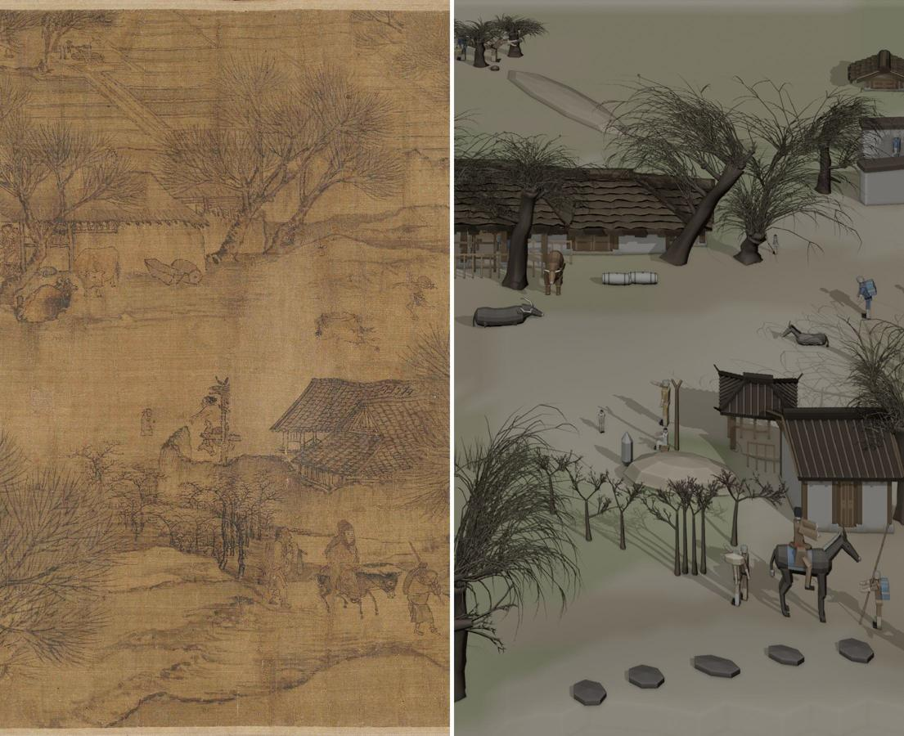
第六轮渲染
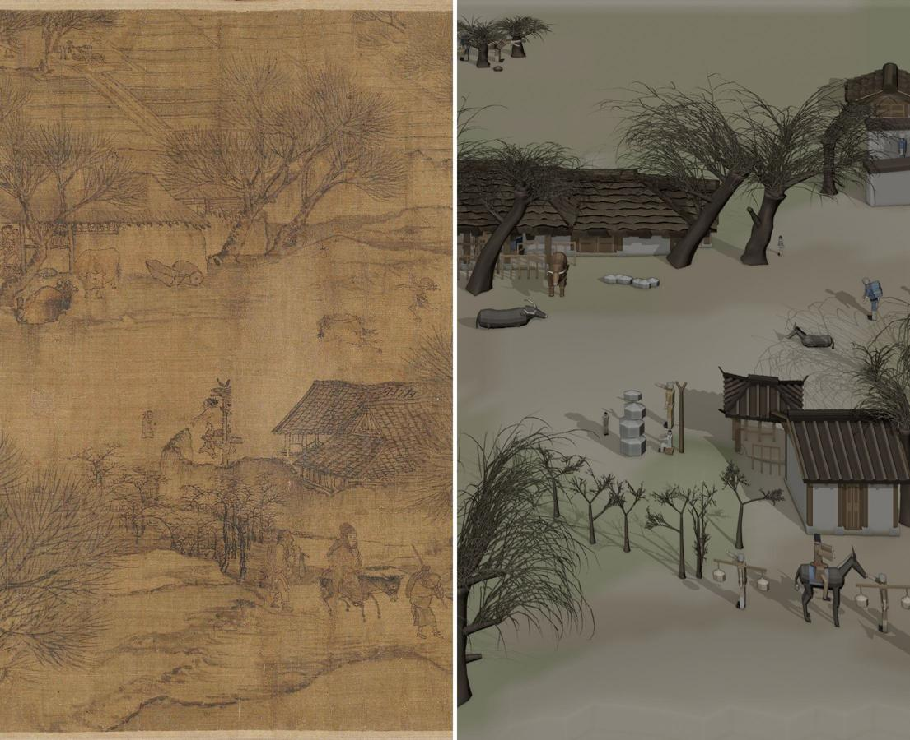
第五轮渲染
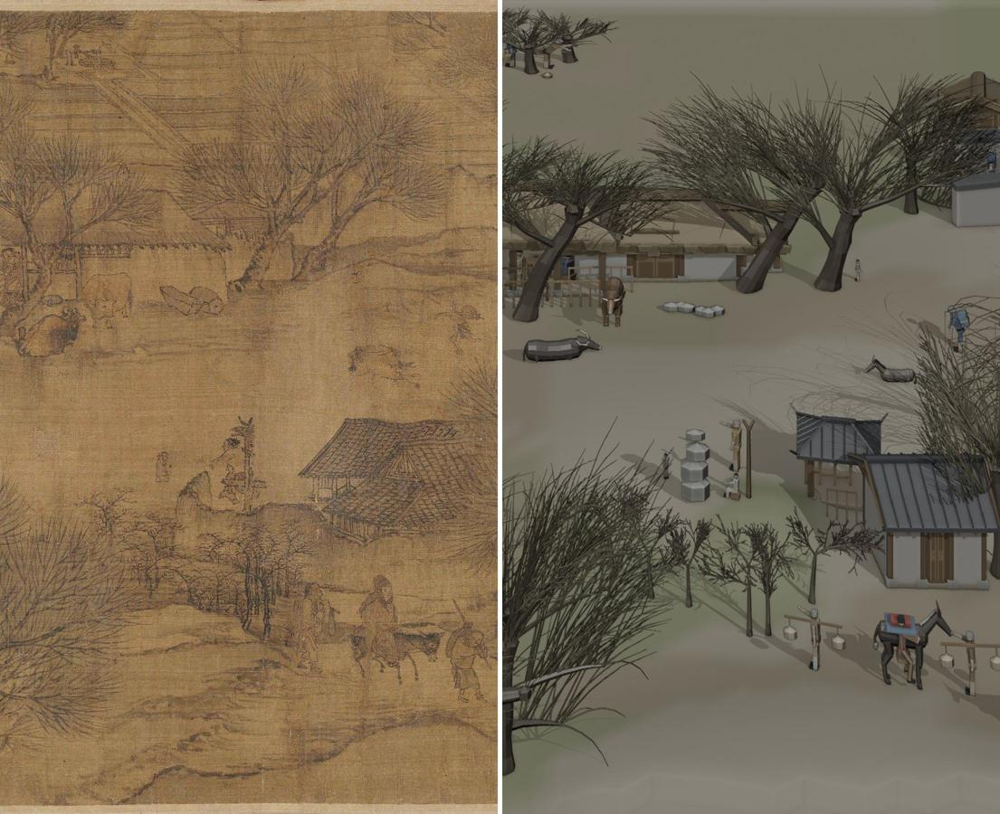
第四轮渲染
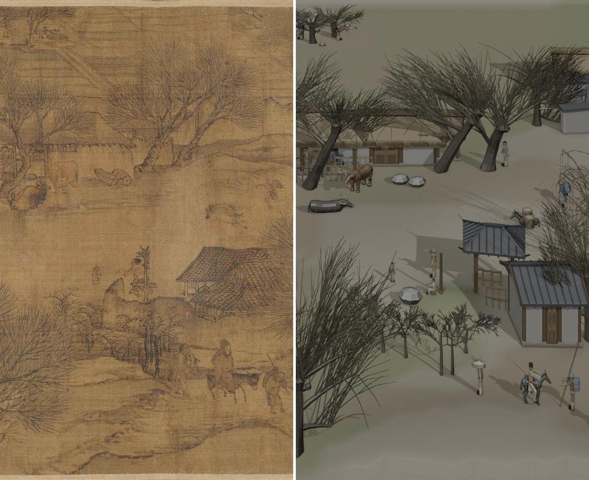
第三轮渲染
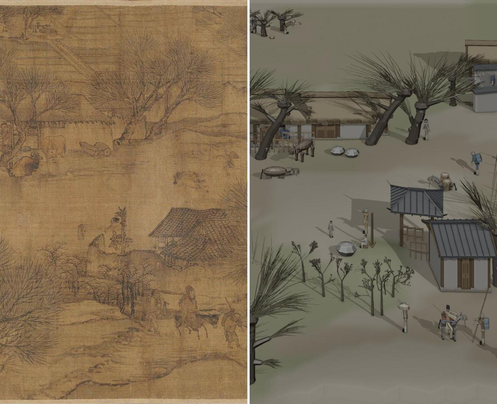
第二轮渲染
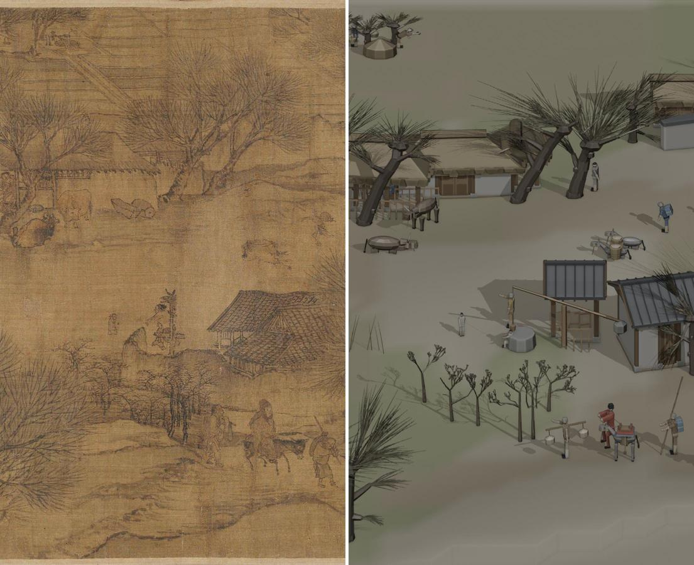
第一轮渲染（修正前）有误与缺失（14）
编号
类型
判定
问题
修正
H0013
building
有误
Still a white walled box with a dark cap at x 1000-1100 y 290-500; painting shows a small pointed thatched gable at y 340-425.
1-storey thatched hut, gable to the viewer, about 85 px tall, base 1052,425; remove the white box.
T0082
tree
有误
Whip crown visible at x 880-1100 y 760-1000, but the trunk and lower crown at 1030,1270 are hidden by the extra white house.
Remove the extra house so the trunk at 1030,1270 shows.
A0012
animal
有误
Position and length now right (x 752-977, head right), but the legs are long and horse-like and the saddle cloth is still blue.
Legs about 25% shorter, body lower and rounder; plain brown saddle cloth.
A0013
animal
有误
Still lies prone at x 800-910 y 790-845, head now down at the left; painting shows it rolling on its back, legs kicked up.
Pose: on its back, four legs raised, head at the left; base 853,845.
T0084
tree
有误
Base right (about 726,625) but the trunk is still a thick smooth flared log; painting has a forked leaning trunk with thin limbs.
Trunk diameter about 50% thinner; fork into two leaning limbs at about 1/3 height.
X0028
structure
有误
Terrain still flat; the rock fix produced six flat dark octagonal pads at x 280-1050 y 1490-1650 that read as stepping stones.
Remove the pads; slope the terrain down from y 1570 with low irregular ink-dark earth ridges along y 1600-1750.
X0029
structure
有误
The prism stack is gone; now a smooth raised octagonal disc x 430-720 y 1060-1160 and a grey hexagonal crystal obelisk at 400,1010-1110.
Irregular earth knoll with rounded uneven edge; replace the obelisk with a tall craggy brown rock about 70x150 px.
T0087
tree
有误
Base near 545,630 and the lean is right, but the trunk is still a thick smooth log.
Trunk diameter about 50% thinner; 3-4 branching limbs below the crown.
O0009
prop
有误
Now two cylinders end to end at x 355-495 y 640-680 (shape fixed), but white with metal hoops, reading as barrels.
Remove the hoops; stone grey-brown, matte; slightly rough ends.
X0031
structure
有误
Now built on the right diagonal (x 135-415 y 170-325), but as a pale faceted floating slab like a boat hull; no furrows.
Make it a low earth-coloured ridge, about 25 px wide, merged into the ground; add horizontal furrow lines in the field.
T0092
tree
有误
Whip crown good (x 0-330 y 1050-1700), but the trunk still stands at x 0-35, about 140 px left of 170,1700.
Move the trunk to x 170; keep the crown drooping over the road.
T0095
tree
有误
Base now correct (about 150,694), but a thick smooth log leaning steeply right across the H0017 eave.
Trunk 50% thinner; lean about 15° only; add forked limbs.
P0022
person
有误
Rider still built as a man in a tall hat holding a box-like load; painting shows a woman in a long hooded cloak.
Female model, long hooded brown cloak; remove the box load.
P0024
person
有误
Buckets removed, but now a flat beige box-like load; painting shows one pole over the shoulder with a soft bundle behind.
Pole over right shoulder with one soft rounded bundle behind.
人群
far field x 0-300 y 40-200：画中约 3 人，模型 3 人。Figures among the stumpy far willows; farmer bends; roughly in place.
farmyard x 0-560 y 500-650：画中约 4 人，模型 3 人。Figures at the left edge and on the verandah; acceptable.
slope x 600-1100 y 550-800：画中约 2 人，模型 2 人。Small figure near 788,623 and the running man near 990,740 present; the running man wears a blue backpack not painted.
mound x 330-560 y 950-1110：画中约 3 人，模型 3 人。Pointing man, seated child and standing child in place, on flat ground beside the knoll rather than raised behind the rock.
road x 600-1100 y 1270-1560：画中约 4 人，模型 4 人。Rider seated; two walkers behind the donkey; right walker has a long pole; buckets gone but loads are beige/blue boxes.
模型多出的东西
(950, 1130) White-walled house with a ribbed dark roof and double door, x 790-1100 y 960-1290, covering the road and T0082; not painted there.
(660, 1570) Six flat dark octagonal pads across x 280-1050 y 1490-1650, read as stepping stones; painting has ink-washed earth ridges.
(1010, 165) Small tiled-roof hut with wooden front at x 920-1100 y 120-215, above H0013; painting shows only field and willow there.
tile10 · 116.2–132.0 cm 3/5
正确 28 · 有误 13 · 缺失 2 · 忽略 8
Still reads as the same scene: tea sheds with diners, a dark horse and a hanging board, railing shed H0018 under the big willow T0099, far lane with porter and donkey, a low thatched far row, near-bank willows and a moored boat at bottom left. The H0023 lower wall plane is gone, so the tables, bench and bowls under the left shed now show, and H0020 is no longer a tall box. Worst remaining problems: (1) the boat is still a short high tub with an arched mat canopy in a large open-water area x 0-500 y 1100-1800, with a flat plank rudder and no ladder; (2) T0102 is now a star of thick straight limbs from one knot instead of a gnarled trunk with a dense twig crown; (3) the top-left pavilion is still oversized (two tiers x 0-300 y 0-260) and buries T0107/T0108. H0023's thatch also stops at x ~330 instead of running to x ~500.
与上一轮相比：Improved: H0023 lower wall plane removed, so F0016 table, F0015 bench and bowls show; H0020 now in the low thatch row; G0001 board now hangs under H0019; P0034 pole shorter. Worse: T0102 limbs now thick straight spokes; H0023 roof shortened to x ~330; F0009 built as a railing frame. Still wrong: boat tub, canopy, plank rudder, no ladder, water extent, pavilion hiding T0107/T0108, sparse reeds, F0014/F0018/dog/vendor unreadable, extra trunks and buffalo.
第六轮渲染第五轮渲染第四轮渲染第三轮渲染第二轮渲染第一轮渲染（修正前）有误与缺失（18）
编号
类型
判定
问题
修正
T0098
tree
有误
still sparse straight spikes x 600-1100 y 1050-1150; painted dense band of fine curved strokes
3x denser, thinner, shorter, curved reeds over x 600-1100 y 1000-1150
F0009
furniture
有误
built as a railing frame ~60 px wide x 600-660 y 610-680 beside the horse; painted small stool
replace by a stool 24x24 px at base (610,622)
T0102
tree
有误
trunk x 540-800 now a star of thick straight limbs from one knot at y ~1500; painted gnarled trunk, dense fine twigs
limbs 50% thinner, curved, 2-3 orders of branching; dense twig crown x 100-1100 y 1050-1800
F0010
furniture
有误
table behind the horse still not readable at (563,600)
move table 30 px up so its top shows above the horse's back
X0036
structure
缺失
gate not readable at (500,125); far thatch row runs through its place
two posts with a small roof 50 px wide at base (500,125), break the row there
O0012
prop
有误
still a flat pale plank x 410-520 y 1580-1690 beside the hull; painted big rudder frame x 383-560 y 1580-1740
rudder blade 120 px on the stern post, half submerged, tiller above deck
T0105
tree
有误
trunk base (390,1065) right, but crown only x 200-550; painted dense crown x 0-700 y 760-1060
crown 40% wider, denser fine twigs, extend left to x 0 and right to x 700
H0023
building
有误
lower wall plane removed, interior visible; but thatch ends in a hip at x ~330; painted eave runs to x ~500
extend roof length to x 0-500, eave y ~535, hip end at x 500
F0014
furniture
有误
no counter readable at (278,600); a pale heap at x 230-275 y 600-630 instead
low wooden counter 45x55 px, base (278,600), dark wood
A0018
animal
有误
no dog readable at (249,657); possibly the pale heap 40 px higher at (250,615)
dog lying at base (249,657), mid-brown, 40x30 px
T0107
tree
有误
not visible; base (202,130) behind the oversized pavilion
shrink the pavilion to x 0-160 y 70-200 so the tree stands free
T0108
tree
有误
not visible; base (135,125) inside the pavilion
same as T0107
F0017
furniture
缺失
no ladder; painted ladder leans from (136,1530) up to (90,1400) against the boat
ladder 2 rails 30 px apart, base (136,1530), top (90,1400)
F0018
furniture
有误
no small table readable at (109,582); only a post there
small table 38x35 px at base (109,582), clear of the post
X0040
structure
有误
boat x 100-500 y 1470-1690 still a short high tub with arched mat canopy; painted long low hull with heaped cargo
hull 2x longer, sides 30% lower, bow to x 0; replace canopy with heaped bundles x 50-300 y 1280-1420
P0038
person
有误
vendor behind the counter not visible at (275,582)
place seated behind counter at (275,582), facing the back wall
P0034
person
有误
pole held like a walking staff touching the ground; painted short rod over the shoulder
pole 40 px, resting on the shoulder, top tilted back
P0029
person
有误
hidden behind the extra thick trunk at x 1040-1100
remove or thin that trunk
人群
far lane x 780-1100 y 60-160：画中约 2 人，模型 2 人。porter with baskets and donkey read well
tea sheds x 0-660 y 520-700：画中约 8 人，模型 5 人。standing man at left, P0037, P0036, P0035 visible; P0038 vendor not readable behind the counter place
H0018 behind railing x 830-1100 y 540-630：画中约 3 人，模型 2 人。only small blue fragments readable; P0029 hidden by the extra thick trunk at x 1040-1100
bank x 750-850 y 900-1050：画中约 1 人，模型 1 人。P0034 present; pole now ~90 px upright to the ground, painted rod rests on the shoulder
模型多出的东西
(150, 100) oversized two-tier tile pavilion x 0-300 y 0-260 with pale terrace; painted small hexagonal pavilion x 0-160 y 70-200
(1065, 600) thick pollard trunk x 1040-1100 base ~700 in front of H0018; painted trunk at right edge is thin
(1030, 770) lying grey water buffalo x 950-1100 y 750-800; painted lumpy boulder x 900-1080 y 690-780
(1070, 200) pale angled slab x 1040-1100 y 170-240 on the far lane; not painted
(250, 1450) open water x 0-500 y 1100-1800; painting has bank and ground there, water only under the hull
(180, 1370) pale floating ring above the boat; not painted
(110, 980) extra pollard trunk x 90-130 base ~1078 left of T0105; painting has only crown branches
(185, 1220) small willow trunk x 170-200 y 1150-1290 at the water edge; not painted
(910, 1500) slim trunk x 880-940 y 1290-1700 with willow crown; painting has only T0102 branches there
tile11 · 129.1–144.9 cm 3/5
正确 39 · 有误 12 · 缺失 1 · 忽略 6
Reads as the same scene: left shop with open gallery, tea-house tables, eating shed, two-storey house, pavilion on its terrace, greeting group, quay porters, three moored boats under willows. Clear gains: the brown block over the H0030 gallery is gone (railing and P0057 show), F0030 is a round cask, B0003 has its domed mat cabin with coils on top, the big boat's mast no longer crosses B0003, and a rudder now exists. Worst remaining: the top-row roof x0-550 y0-125 still hides T0117/T0118/T0119; the sandbank X0052 is still a cliff-edged slab; X0048 still lies flat on the water; O0018 sacks are short upright discs; the rudder sits ~90 px right and ~150 px low on the sandbank edge.
与上一轮相比：Improved: brown block over H0030 gallery removed (railing F0035 and P0057 visible); F0030 is a round cask; B0003 regained its domed mat cabin with O0019 coils on top; big-boat mast no longer crosses B0003; rudder O0021 now exists; red box on table removed. Worse: T0116 foliage now pale white puffs; O0018 changed from crates to upright discs (still wrong). Still wrong: top-row roof hides T0117/T0118/T0119, cliff sandbank X0052, floating X0048, coil mid-post X0049, no pennants, no lantern post, slope porters north, rudder misplaced.
第六轮渲染第五轮渲染第四轮渲染第三轮渲染第二轮渲染第一轮渲染（修正前）有误与缺失（18）
编号
类型
判定
问题
修正
O0018
prop
有误
Now 3-4 short upright octagonal discs x590-720 y860-950; painted heap is 5-6 long cylindrical sacks lying flat.
5-6 long rounded cylinders (~60x20 px) lying horizontal, heaped at x600-740 y835-955.
T0116
tree
有误
Now has foliage but as pale white puffs x640-770 y170-260 (reads as snow/blossom); painted is dark ink-wash leaves.
Foliage colour dark grey-green, denser rounded crown.
T0117
tree
有误
Forked trunk at x570 y30-200 still hidden by H0029 roof and the top-row roof.
Lower/shorten top-row roof x330-740 so trunk and crown show above y~140.
X0043
structure
缺失
No standing lantern at (478,738); red box removed but nothing replaces it.
Pale hexagonal box lantern ~35 px tall on a wooden post at (478,738).
X0045
structure
有误
A stiff flat pale board hangs at x415-490 y345-465; painted is a long reed blind reaching y510.
Thin reed mat texture, extend to y510, slight sag.
T0118
tree
有误
Bare tree x330-480 y0-130 fully hidden by the top-row roof reaching y0.
Lower that roof so its ridge sits at y~140.
X0047
structure
有误
Slanting pole x355-390 y480-820 with strings, still no pennants.
Add small triangular pennants every ~15 px along both strings.
X0048
structure
有误
Straight rung beam x285-515 y990-1095 lies flat on the water, touching neither boat nor quay.
Left end on big-boat stern deck (280,1150), right end on quay (500,1030); curve upward.
O0021
prop
有误
Rudder now built but at x~440-505 y1370-1680, ~90 px right and ~150 px low, blade on the sandbank edge.
Move to x350-400 y1210-1480 on the stern post; raise ~150 px, shift 90 px left.
X0049
structure
有误
Post x~365 y935-1040; coil still wraps the middle at y~985 plus a loose ring on the ground; no rope to boat.
Coil on post top y~940; rope running down over the bank edge.
T0119
tree
有误
Tree tip x250-320 y0-60 hidden by the top-row roof.
Lower that roof so the tip shows.
X0052
structure
有误
Still a raised smooth slab x125-550 y1575-1800 with a steep rounded edge; x0-125 is water; painted bank covers x0-650 from y~1490.
Extend heightfield west to x0 and north to y1490; low contoured bank, no cliff.
X0053
structure
有误
Only a dark heavy beam block with slanting poles x5-135 y105-170; painted is a tall open timber scaffold x0-120 y100-335.
Build open scaffold of thin posts and crossbars from y335 up to y100.
P0041
person
有误
Feet at ~(840,1105), 80 px north of base; arms held straight out.
Move to (838,1185) on the slope, walking down, arms holding sack on back.
P0044
person
有误
Feet at ~(770,1105), 80 px north of base; arms straight out.
Move to (760,1185), bent with load.
P0051
person
有误
At ~(290,860) arms spread with a short stick; does not grip pole X0047 at x~370.
Both hands on the pole; shift onto the pole foot.
P0052
person
有误
Not visible; tea-house roof covers (269,558).
Trim the tea-house roof back north edge so the street figure shows.
P0053
person
有误
Shopkeeper not identifiable beside the cask.
Stand at (265,372) behind counter, visible.
人群
street greeting group x540-800 y600-800：画中约 5 人，模型 5 人。Good; handclasp and soldier with tall black cap read well.
quay porters x660-960 y750-960：画中约 5 人，模型 5 人。Bent porters present among willow twigs; sacks are discs, not long sacks.
bank slope x730-890 y1080-1190：画中约 2 人，模型 2 人。P0041/P0044 now feet at y~1105, still ~80 px north of bases, on the water edge with arms stuck out.
left shop and tea house x0-520 y250-930：画中约 6 人，模型 4 人。P0057 now visible on the gallery; P0053 not identifiable; P0052 still under the tea-house roof; P0051 not gripping pole.
boats x0-1100 y1100-1800：画中约 1 人，模型 1 人。P0054 pale figure on big-boat deck ~(230,1300), fine.
模型多出的东西
(275, 60) Large tiled roof x0-550 y0-125 on the top row; hides T0117/T0118/T0119
(55, 900) Slanted beam/trestle and second beam on the quay x0-110 y840-960
(1060, 690) Small plank/bench lying on the street in front of H0025
(300, 470) Tea-house roof extends NE over the street where P0052 walks
tile12 · 142.0–157.8 cm 3/5
正确 21 · 有误 10 · 缺失 5 · 忽略 4
The overall layout still reads as the same scene: shop row and frames on the upper street, the big riverside restaurant H0032 with its round mat umbrella, the willow on the bank and the large cargo boat B0004 lower right. The 歡門 crest tower is gone, but in its place stand a rectilinear post-and-lintel frame (x 660-1000 y 100-300) and a new tiled pavilion with a railed balcony (x 880-1100 y 165-460) where the painting has leaning timber A-frames; this still hides F0041 and P0058 and lifts the seated man onto the balcony. B0004 is still a narrow diagonal hull, about 190 px too narrow on its left side, and the hatch planks O0027 are absent. The willow trunk is still ~110 px right of its painted base, the bank still ends in a pale cliff, and the shrub T0122 and screens F0036/F0040 are still missing.
与上一轮相比：Improved: the 歡門 crest tower with finials is gone; O0026 panel now visible; sign G0003 text readable; a lowered mast on trestles now exists; B0007 stern sits nearer its painted height. Worse: the brown board became a full tiled pavilion with balcony, now lifting P0060 and still hiding F0041/P0058; a straight post-and-lintel frame replaces the A-frames. Still wrong: B0004 orientation and beam, mast offset, O0027, O0025, X0056, X0057, G0002, G0003 height, X0060 roof, willow trunk, screens, shrub, extra left tree, bank cliff, pale block.
第六轮渲染第五轮渲染第四轮渲染第三轮渲染第二轮渲染第一轮渲染（修正前）有误与缺失（20）
编号
类型
判定
问题
修正
B0004
boat
有误
Still narrow diagonal hull from (680,965) to right edge y ~1500; at y 1300 hull spans x 830-1100, painted broad round stern spans x 650-1100.
Turn the stern toward the camera (long axis into depth); beam ~1.6x so the rim follows (640,990)-(700,1300)-(1050,1450).
F0036
furniture
缺失
No lattice screen in the right annex; benches stand at x 990-1100 y 735-780.
Place an upright lattice screen ~1.5 m wide at base (1012,750); move the bench 40 px down.
H0031
building
有误
Back roof planes at y 0-100 fine, but a tiled pavilion with railed balcony stands at x 880-1100 y 165-460; painting has open A-frames there.
Remove the balcony pavilion/board under H0031 front; keep only the rear roof planes behind the frames.
O0024
prop
有误
A lowered pole on two posts now lies at x 1000-1100 y 1060-1140, ~150 px right of the painted mast x 830-1055 y 1115-1165.
Move the lowered mast and trestles ~150 px left to span x 830-1055 at y ~1140 (after B0004 is turned).
F0040
furniture
缺失
No small screen beside the umbrella pole at (899,755); grey boxes stand there.
Place a 0.6 m screen at base (899,755); remove the grey boxes.
F0041
furniture
有误
Table at (882,313) not visible; the balcony pavilion's left post and railing stand there.
Remove the balcony pavilion; keep the low table at street level at (882,313).
O0025
prop
缺失
No post at (844,982); that spot is inside B0004's bow; nearest post is a rack post at (990,900-975).
Place a 1.2 m upright mooring post at (844,982) on the bank edge.
X0056
structure
有误
Plank box and crossed boards at (800-990, 900-960) instead of a low dark rounded earth mound at (830,945).
Remove the planks; add a 0.5 m rounded earth mound in the heightfield at (830,945).
O0027
prop
缺失
Nothing at x 685-860 y 1185-1325; that area is open water left of the hull.
After widening B0004, lay 3-4 large hatch planks on the stern deck over x 685-860 y 1185-1325.
X0057
structure
有误
Rail (492,697)-(772,863), then a separate pole rack (778,806)-(1001,894); painted continuous railing with plank walkway (440,735)-(1010,915).
One continuous railing (440,735)-(1010,915), walkway planks beside it; remove the pole rack.
G0002
sign
有误
Only the dark post of the new post-and-lintel frame near (717,200); no hanging cloth banner.
Hang a pale cloth banner 0.3 x 0.8 m from the eave at x 697-737 y 128-205.
T0121
tree
有误
Whip crown good, but trunk base still ~(450,900), ~115 px right of painted base (335,895).
Move base to (335,895); add dark forks at y 520-650.
G0003
sign
有误
王家紙馬 text now readable, but board spans y ~100-160 only; painted tall post-sign spans y 40-220.
Make the board ~3x taller (narrow vertical board on a post), base at y 215.
T0122
tree
缺失
No dense dark shrub at (242,615); only willow whips and the fence there.
Add a dense dark rounded shrub ~1.5 m tall, crown x 185-350 y 495-615.
X0060
structure
有误
Open post frame at (180,100) still under a big tiled gable roof over x 5-275 y 0-70; painting shows a ~50 px thatched booth.
Size 1.2 x 1.0 m, thatch cover, lattice front; remove the tiled gable roof.
P0058
person
有误
Standing man at (940,322) not visible; the balcony pavilion stands there.
Remove the pavilion; keep him standing at street level.
P0060
person
有误
Seated man appears on the balcony at ~(1000,330), raised and ~120 px right of (880,313).
Seat him at ground level at (880,313) beside table F0041.
P0059
person
有误
Bent servant at (924,745) not readable; grey boxes at (860-885,745-765).
Check placement at (924,745) clear of stools and boxes.
P0066
person
有误
Head in the cabin opening at (122,665) painted; model figure at ~(60,770).
Move ~60 px right and up into the cabin opening of B0007.
P0064
person
有误
Rider still lacks the round pack or large hat above his back.
Add a round bundle on his back or a wide hat.
人群
upper street x 100-1100 y 50-460：画中约 8 人，模型 6 人。Rider P0064 astride, porters P0062 and P0056 with baskets readable; P0058 not visible; P0060 sits up on the new balcony at ~(1000,330); P0061 hidden under H0033 eave.
H0032 front x 550-1100 y 640-810：画中约 3 人，模型 1 人。Standing P0055 visible as pale figure at ~(1068,665-740); bent servant P0059 not readable among grey boxes.
left moored boat x 0-230 y 590-830：画中约 1 人，模型 1 人。Figure at ~(60,750-790), ~60 px left and ~80 px lower than the painted head at (122,665).
模型多出的东西
(990, 310) Tiled pavilion with railed balcony x 880-1100 y 165-460; painting shows leaning timber A-frames and street-level people.
(830, 115) Rectilinear post-and-lintel frame with heavy lintel x 660-1000 y 100-300; painting shows leaning A-frames with mats.
(85, 520) Large straight-trunked tree x 40-130 y 400-650; painting shows only willow branches and the moored boat there.
(140, 30) Large tiled gable roof over x 5-275 y 0-70 above X0060; painting has trees and a small booth.
(420, 1050) Pale bank tongue with vertical cliff edge x 240-760 down to y ~1180; painted bank slopes softly into the water.
(1065, 1690) Pale block at x 1030-1100 y 1575-1800 in open water; painting shows only ripples.
(240, 845) Loose rudder/board x 203-275 y 805-887 standing on the bank edge by B0007.
tile13 · 154.9–170.7 cm 3/5
正确 11 · 有误 14 · 缺失 0 · 忽略 5
The scene still reads as the same place: hall roof over x 0-480, gabled wing H0036, white wall X0062, willow T0125 and the big cargo boat B0007 with its rudder at the painted spot. B0007 now has plank cabin walls, so its roof top is at y ~625 (painted ~613) and it hides B0008's hull; the hall's upper floor now has lattice screens. Worst problems: boatman P0070 now stands in open water at about (175,1045), 125 px left and 205 px below his painted stern spot, because B0011's stern still ends at x ~240; boat roofs are flat slabs instead of arched barrel mats; the horse A0020 faces left with its head lowered, and the white block at x 664-800 y 72-148 still hides P0067 and table F0052.
与上一轮相比：Improved: B0007 has cabin walls (roof top y ~625 vs 760) and hides B0008's hull; upper lattice screens on the hall; shrub T0126, umbrella and street stalls now visible; coils now round; ladder now visible. Worse: P0070 moved further into open water; horse now faces left with head down; ladder at wrong x. Still wrong: B0011 stern short, H0036 low, white block on street, X0066, X0067, lower grey wall, flat mat roofs.
第六轮渲染第五轮渲染第四轮渲染第三轮渲染第二轮渲染第一轮渲染（修正前）有误与缺失（18）
编号
类型
判定
问题
修正
B0007
boat
有误
Length, ends, cabin walls and rudder now right; roof is a flat sloped slab, not arched mats; keel y ~925-945, painted ~980.
Table at (680,117) hidden behind the extra white block x 664-800 y 72-148.
remove the white block (see extra); keep table
H0036
building
有误
Gabled wing at the right place but ridge top y ~213 vs painted ~160; dark ridge-end post at x 570 sticks up.
raise roof ~50 px so ridge is at y ~160 and joins hall roof; drop the ridge-end post
A0020
animal
有误
Horse body x 574-654 y 78-144 at the right place, but it faces left with head lowered at (574,105); painted head raised to the right.
rotate 180 degrees; pose head raised
B0008
boat
有误
Hull now hidden behind B0007 as painted, but its roof is a flat slab x 550-920 y 625-700 merging with B0007; painted arched mats x 420-800.
mat roof = arched barrel mats; right end at x 810
O0034
prop
有误
Ladder now visible but at x 315-345 y 740-882, between B0011 and B0007 bow; painted at x 480-547.
move ladder 170 px right, lean on B0007 cabin side, base (514,840)
O0035
prop
有误
Now round coils but only 2-3 end-on cylinders at x 315-400 y 680-730; painted row of ~7 along x 330-600.
6-8 coils, end-on ~35 px discs, spread along x 330-600, base y 700
X0064
structure
有误
Upper part now lattice screens x 160-500 y 330-460 (good); below y 460-620 still a plain grey wall where paint shows screens and a balustrade.
replace grey wall below y 460 with lattice/plank panels and a low balustrade at y ~540-600
X0065
structure
有误
Quay shows a tall rail with 8 posts at x 190-550 y 600-660; painted edge is low and mostly covered by boat mats.
remove the rail; keep a low plank quay edge at y ~640
K0001
stall
有误
Umbrella now visible in front of the eave, but a flat horizontal disc x 165-345 y 30-75; painted canopy x 205-310, tilted.
diameter 40% smaller; tilt 30 degrees toward the viewer; centre (255,60)
O0036
prop
有误
A tall post stands at x ~228 y 475-590 on the quay, ~70 px north of the painted mooring post base (234,660).
move post 70 px south to base (234,660); height ~40 px
B0009
boat
有误
B0011 stern still ends at x ~240; painted high curved stern with rudder reaches x ~345 y 720-1050.
extend B0011 stern ~100 px right to x 345; raise stern post to y ~720; add stern deck for P0070
X0066
structure
有误
Dark post at (120,118-168) not visible; covered by the hall roof eave at y ~150.
make post 30 px taller or move 10 px north
X0067
structure
有误
Timber railing at x 0-130 y 455-480 is ~40 px high and short; painted balustrade x 0-190, base y 532; grey wall below.
move balustrade 50 px south, extend to x 190, base y 532
P0070
person
有误
Base at ~(175,1045), 125 px left and 205 px below painted (299,840); stands in water, pole into water.
place at (299,840) on an extended B0011 stern deck
P0071
person
有误
Not visible.
place inside B0011 mat cabin at (190,648), only hat above the mats
P0068
person
有误
Stands upright behind the bench; painted bending over it.
pose = work_bent
P0067
person
有误
Hidden behind the white block x 664-800.
remove the block; keep seated at the table
人群
street north x 0-1100 y 20-170：画中约 11 人，模型 5 人。White block x 664-800 hides P0067; P0068 stands upright at (660,155) instead of bending; shop interiors now visible.
far bank / quay x 0-250 y 480-690：画中约 2 人，模型 1 人。A white-robed figure stands on a small boat at (85,600), not painted there; P0071 hat not visible.
boats x 0-1100 y 600-1060：画中约 2 人，模型 2 人。P0070 stands in open water at (175,1045); a small blue crewman stands in B0007's stern at (945,770).
模型多出的东西
(730, 110) White plaster block x 664-800 y 72-148; painting shows an open eatery; it hides P0067 and F0052.
(85, 600) Small boat with crates and a standing white figure x 0-180 y 520-690; painting shows B0011 mat cabins there.
(370, 630) Tall quay rail with posts x 190-550 y 600-660.
(800, 250) Empty pale ground x 560-1100 y 160-330; painting has H0036 roof and willow crown filling this.
(945, 770) Small blue crewman in B0007 stern, not painted.
tile14 · 167.9–183.6 cm 3/5
正确 25 · 有误 18 · 缺失 2 · 忽略 8
The scene still reads as the painted one: wine house H0039 and dining hall H0038 under large tiled roofs, the quay, inner boat B0010 with its bundles and mat shelter, the big cargo boat B0011 and the passenger boat B0012. Clear progress this round. The hall H0038 now has a lattice balustrade, visible tables and a seated diner. X0070 has dropped to the right height, so P0081 and P0083 show on the bank. The barrel cabin on B0011 is gone. Still wrong: X0070 and the B0012 bow roof are flat cream slabs, B0011 shows a bare slatted deck plane and a shallow hull, the X0069 quay is a tall grey box, X0073 is a flat lattice hung with balls, and H0039 still has a split roof. A hatted pole-man stands on open water at the right edge.
与上一轮相比：Improved: X0070 lowered to the right height, so the hall front and P0081 show. H0038 has a lattice balustrade, visible tables and diner P0078. B0011 barrel cabin removed. B0012 stern lengthened to x~455. O0048 moved under the stern. O0050 no longer over water. O0044 is now multiple baskets. Worse: a pole-man on open water at the right edge; O0046 coil gone, nothing in its place; bundles now look like boxes. Still wrong: X0070/B0012 cream slabs, X0073 lattice, H0039 split roof, X0074 cap, grey quay X0069, K0002 flat umbrella, G0004/G0005 signs, T0127 missing.
第六轮渲染第五轮渲染第四轮渲染第三轮渲染第二轮渲染第一轮渲染（修正前）有误与缺失（22）
编号
类型
判定
问题
修正
T0127
tree
缺失
No tree visible at x 1062-1100, y 468-562; the grey X0069 quay box covers the spot.
Upright bare tree ~40 px wide, ~95 px tall, base (1081,562) in front of the quay face.
O0038
prop
有误
A cream block with a flat top and square ends at x~960-1050, y 575-640. The painting has a round hooped cask.
Horizontal cylinder ~90x65 px, dark woven colour, 3-4 hoop bands.
O0039
prop
有误
A cream rectangular block at x~880-960, y 575-640, not a round hooped cask.
Cylinder with hoop bands and a darker woven colour, as for O0038.
O0040
prop
有误
Still a flat pale disc at x~855-900, y~600-620. The painted sack is dark and rounded.
Dark-brown squashed-sphere sack ~45x38 px lying on O0041.
X0069
structure
有误
Still a plain grey box at x 870-1100, top y~465 (painted 518). It hides T0127 and the right end of the hall.
Brown timber quay face of planks and posts, x 648-1100, y 518-568; top no higher than 518.
O0041
prop
有误
A cream rectangular block at x~790-880, y 575-640, not a round hooped cask.
Cylinder with hoop bands, darker woven colour.
K0002
stall
有误
Still a flat cream canopy (x~770-920, y 0-25) on a vertical pole at x~855. The painting shows a tilted ~80 px umbrella on a leaning pole.
Canopy ~90 px wide, tilted ~30°; pole leaning up-left from (830,145); canopy at y 17-60.
O0044
prop
有误
Now about six round tub-baskets in rows at x~700-790, y 20-100. The painting has four rectangular woven crates in two stacked pairs.
4 rectangular wicker crates, 2 stacked pairs, x 708-790, y 35-97, woven texture.
B0011
boat
有误
Barrel cabin removed and the bow is at x~360. A bare slatted deck plane still shows at y 700-800. The hull bottom is at y~950 (painted ~1000).
Deepen the hull ~50 px; raise the bulwark to y~805; add low dark mat hatches x 790-950, y 735-790, and arched frames.
X0070
structure
有误
Height now right (x 575-835, y 530-600), but still a flat cream wedge slab, not an arched dark woven-mat roof.
Arched dark-brown woven-mat roof on 4 posts, curved eaves down to y~620.
G0004
sign
有误
Right place (x 562-637, y 330-430), but still a plain flat white board.
Hanging cloth with dark/light vertical stripes, slightly curved, hung from the eave.
O0046
prop
缺失
The stray coil at (660,856) is gone, but no coils show at x 545-655, y 700-760; only bare deck slats.
Two rope coils on the aft deck, x 545-655, base y~760.
H0039
building
有误
Tile courses, the open front and the stair read. The roof is still split: a hip x 260-760 plus a separate lower roof x 0-300, y 229-350.
One continuous hip-gable roof x 50-730, ridge y~90, front gable x 150-300, eave y 300-355.
O0047
prop
有误
One octagonal coil at ~(515,715). The painting has three coils at x 360-505.
Three coils on the foredeck, x 360-505, base y~732.
G0005
sign
有误
Only a thin dark post or panel at x~370-390, y 320-350; no readable sign board.
Light vertical board ~28x64 px with 2 dark characters, hung at x 388, y 283-347.
X0072
structure
有误
Still a small flat cream box roof on posts at x~310-430, y 990-1050.
Dark woven half-barrel canopy arching over the stern deck, x 200-462, y 950-1014.
O0048
prop
有误
Improved: now a post with a board at x~170-357, bottom y~1237, the right place. But the blade is a flat upright rectangle.
Broad hatched blade angled aft (down-right) from the post, x 218-362, bottom y 1232.
X0073
structure
有误
Still a rectangular green X-braced lattice over x 0-480, y 0-110, hung with red/white balls and lantern figures. No spiky tiered crest.
Tiered pyramidal frame of lashed poles x 50-425, rising to y 20, pennant spikes on top; remove the balls.
B0012
boat
有误
The stern now reaches x~455 (good). The flat cream slab x 0-222, y 820-940 is still there, with a small windowed deckhouse.
Replace the slab with a dark mat cabin roof x 0-300, y 820-870.
X0074
structure
有误
A thick dark slab still caps the wall at x 0-300, y 380-460; pale plaster shows only below it.
Pale plastered wall x 0-372, y 380-520, thin tile coping only.
P0073
person
有误
Sits on top of the bundles at ~(980,565), about 60 px above the painted head between bundles.
Lower to the deck between O0039 and O0038, so only head and shoulders show at y 612-648.
P0077
person
有误
Not visible at (834,608) at the end of the bundles.
Seat him on the B0010 deck at (834,608), back to the viewer, arms to the right.
人群
road/shed x 650-1100 y 0-150：画中约 6 人，模型 5 人。The porter by the baskets, the white-robed seated man and the stall figures read. Child P0075 is not readable.
behind H0039 roof x 0-80 y 220-285：画中约 2 人，模型 2 人。Two dark figures just above the left roof; roughly right.
bank x 450-600 y 440-600：画中约 3 人，模型 2 人。P0083 (white) and P0081 now both show at x~520 and ~560; seated P0082 inside is not readable.
dining hall x 740-1000 y 400-460：画中约 1 人，模型 1 人。P0078 seated at the table at x~775; it has a hat and sits upright, while the painted figure is hunched. Minor.
boats x 600-1100 y 520-700：画中约 4 人，模型 3 人。The stoker by the stove reads. One boatman sits ON TOP of the bundles at x~980, y 540-590, ~60 px above P0073. P0077 does not show.
passenger boat x 0-465 y 815-1232：画中约 2 人，模型 2 人。The blue figure bending at the rudder post (x 145-210, y 1030-1145) reads as P0084. A figure is at the left edge near P0085.
模型多出的东西
(1075, 960) A hatted man with a long pole stands on open water at x 1050-1100, y 900-1040; the painting shows the B0011 hull there.
(110, 878) Large flat cream slab roof over the B0012 bow, x 0-222, y 819-937.
(240, 60) Red/white balls and lantern figures hung on the X0073 lattice.
(100, 700) Cream barrel cabin on the left cargo boat (owned by tile13); the painting shows dark mat roofs.
tile15 · 180.8–196.5 cm 3/5
正确 18 · 有误 11 · 缺失 1 · 忽略 5
The tile still reads as the same scene: shop street with tables, the cart and donkey pair, the sack porters, horse and pack animal at the top, the wine house H0040 at the right, the moored middle boats and the big foreground boat B0014 with its fan of stays. B0013 is now much better: long arch cabin x875-1100 y545-720 and hull x700-1100, and the table F0077 now stands on the roof deck. The worst problems are unchanged: a separate small boat is still jammed into the B0014 stern (x925-1100 y1100-1225), the aft canopy over B0014 and the awning X0077 are still flat pale slabs, and the B0014 roof deck is still a deep flat board surface (y945-1095) that pushes the cabin wall down. The window woman and child still sit on an outer ledge with legs over the hull, and the pale octagonal bale stacks remain on the roof deck.
与上一轮相比：Improved: B0013 cabin now long and tall (x875-1100 y545-720); F0077 table now on the roof deck; O0057 tall frame replaced by a low platform; floating plank and bare pole gone; coil spot now open (but small tub); ladder no longer over water; sign crossbar partly built; tile14 figures on H0040 ridge gone. Worse: nothing clearly. Still wrong: jammed stern boat, deep B0014 roof deck, flat pale aft canopy and awning X0077, no blind O0051, unbraced rudder, short O0056, bale stacks, window woman and child outside, wide H0041 thatch.
第六轮渲染第五轮渲染第四轮渲染第三轮渲染第二轮渲染第一轮渲染（修正前）有误与缺失（16）
编号
类型
判定
问题
修正
X0075
structure
有误
Only a plain box at x1070-1100 y1145-1215 beside the jammed small boat; no carved stern post or railed platform.
Delete the jammed small boat; add a carved stern post with short railing at base (1079,1208), top ~y1092.
O0051
prop
缺失
No scalloped rolled blind at x978-1068 y825-925; only the flat pale canopy edge.
Hang a dark rolled mat blind in 3-4 scallops under the aft canopy eave, x978-1068 y825-925.
G0006
sign
有误
Now a crossbar with one dark strip and one white panel at x842-880 y185-265; painted three equal dark cloth strips x828-905.
Three dark vertical strips ~22 px wide, ~85 px long, evenly spaced x830-905; no white panel.
O0056
prop
有误
Short dark box x835-870 y940-990, ~50 px tall; painted light bundle ~100 px tall, x833-872 y865-968.
Height x2 (~100 px), light straw colour, upright at base (852,968).
X0077
structure
有误
Still a flat pale slab x582-855 y288-450; painted a dark hatched mat sloping from (880,283) down-left to (650,420).
Tilt ~25 deg down to the left, high end on H0040, left tip at x650; dark woven-mat colour.
O0057
prop
有误
Improved: tall frame gone, now a low plank with a small ring at x750-865 y595-635. No lattice railing on the bow platform.
Add a lattice railing ~25 px high around the bow platform x735-820 y525-625; keep the windlass drum.
H0041
building
有误
Layered dark thatch at the top edge, but x602-932 y0-80, about 2.5x wider than painted x700-832.
Narrow to x700-832 (width -60%); lean-to slope down to the right.
O0060
prop
有误
Now a plain dark slab x615-700 y617-723 with a post at x612; painted blade x528-692 is cross-braced and further left.
Move 40 px left to centre x610; add 2 diagonal braces and a tiller; keep base (610,722).
B0014
boat
有误
Mast and upswept stern good. Roof deck still a deep flat board surface y945-1095 (painted y950-985); cabin wall pushed to y1095-1200; flat pale aft canopy; jammed stern boat.
Roof deck depth -100 px so the cabin wall spans y985-1100; dark pitched aft roof; delete jammed boat.
F0078
furniture
有误
No longer over water, but a flat frame lies on the left end of the arch at x0-75 y555-580; painted leans upright at x125-160 y500-560.
Move ~90 px right; stand it leaning 20 deg against the left boat cabin, foot at (142,560).
F0079
furniture
有误
Now visible, but a small pale tub x95-135 y720-765; painted a large dark woven coil ~65 px wide at x85-150 y632-715.
Scale 1.6x, dark coiled-rope texture, move 45 px up onto the deck at base (118,715).
F0082
furniture
有误
Only a small stack of pale discs at x45-75 y680-730; painted a large dark woven coil x15-90 y630-715.
Build as a coil like F0079, ~75 px wide, dark rope texture, base (52,715).
P0109
person
有误
Woman still sits on an outer ledge at x90-145 y1050-1160, legs hanging over the hull, not inside a window.
Cut a window opening x50-150 y1050-1130 and seat her inside, head and shoulders only.
P0112
person
有误
Child in red sits on the same ledge at x55-85 y1055-1160, legs over the hull.
Seat inside the same window, head only visible.
P0104
person
有误
Only the head shows behind the arch top at x150-170 y550-580; painted sits on the open deck x200-246 y583-648.
Seat on the deck in front of the arch at base (223,648); lower or shorten the arch.
P0088
person
有误
Pedlar body not visible; only a hanging basket at x935-975 y55-90.
Place the figure at base (880,125) under the pole, walking left, both baskets hanging.
人群
far-bank street and shops x 0-1100 y 0-490：画中约 18 人，模型 16 人。Cart crew, bent porters with pale sacks, hat man, horse leader and awning guests read. Pedlar P0088 shows only a basket on a pole at x935-975 y55-90; no body.
middle-band boats x 0-800 y 460-800：画中约 9 人，模型 6 人。Left-boat figures show only heads above the arch top; window figures P0096/P0100 not readable; one figure stands at the middle boat's raised stern x655-700 y480-550.
foreground boat B0014 x 0-1100 y 800-1230：画中约 7 人，模型 6 人。Pointing man P0105 and bent worker P0094 read well; woman and child sit outside on a ledge, legs over the hull face; one blue figure stands in the jammed stern boat.
模型多出的东西
(1010, 1165) Separate small boat with a blue figure jammed into the B0014 stern at x925-1100 y1100-1225.
(80, 945) Pale octagonal bale stacks on the B0014 roof deck x30-130 y920-975 and x400-525 y905-975.
(905, 875) Flat pale sheet canopy x715-1100 y815-940 over the B0014 aft; painted aft roof is pitched, dark and lower.
(1000, 110) Green lattice frame with red posts x900-1100 y40-220 (likely tile14 huanmen spill); painted spiky frame sits lower, y90-300.
(500, 560) Middle stern-on boat is a long flat plank-roof boat x360-640 y455-720; painted shows a dark mat-roof cabin seen stern-on x525-690 y490-640.
(780, 560) Raised stern of the middle boat x640-800 y490-600 touches the B0013 bow.
tile16 · 193.7–209.5 cm 3/5
正确 28 · 有误 7 · 缺失 1 · 忽略 5
The top half still reads as the same scene: restaurant upper floor with balustrade and diners, the awning shed H0043 over its tables, shop H0042 with its seated pair, the conical-hat man and the ribbed umbrella X0081. The river half is a partial match. Boat 1's hull now sits at the painted height and has a planked cabin with lattice windows, but one huge pent roof (x 0-600, y 510-700) still covers the deck, hides the windlass O0073 and most of the crew. Boat 2's ribbed hood is at the right height but still ~240 px right of the painted dark hood (x 950-1100 vs 690-900), leaving an empty open hull at its bow. The coils O0065 are still pale blocks with a table of bowls on boat 3's roof, and the lowered mast O0072 is a flat plank over open water.
与上一轮相比：Improved: boat 1 hull raised to the painted height with lattice-windowed cabin walls; boat 2 hood now at the right height; windlass O0067 drum now on boat 2's deck; sweep O0071 now diagonal; ladder F0102 built; P0118 moved to boat 1 bow. Worse: O0073 now hidden under the roof; bottom-left oar tip gone. Still wrong: huge boat 1 roof, hood ~240 px right, coils/table on boat 3 roof, O0072 plank over water, B0014 stern short, white wall block.
第六轮渲染第五轮渲染第四轮渲染第三轮渲染第二轮渲染第一轮渲染（修正前）有误与缺失（13）
编号
类型
判定
问题
修正
B0015
boat
有误
Hood now at the right height (y 576-732) but at x 950-1100; painted dark hood x 690-900. Bow x 550-830 is an empty open hull.
Move hood ~240 px left onto the bow; deck over the open bow; dark brown mat.
O0065
prop
有误
Still pale faceted blocks at x 934-1034, y 906-962 on boat 3's roof, ~240 px below the painted coil pair (925-1052, 635-732).
Move ~240 px up onto boat 2 deck behind the moved hood; flat dark rope coils.
B0016
boat
有误
B0014 stern still ends at x~596 (painted ~545); no dark mat hood over stern; two figures sit on the pent-roof eave.
Extend hull aft ~50 px; dark mat hood x 545-690, y 862-940; open cabin side, sitters inside.
O0072
prop
有误
Flat plank x 545-800, y 540-575 sticking out from boat 1's roof over open water; no spar on deck, no yard or furled sail.
Round spar on a trestle on boat 1's deck x 290-720, y 520-600; add yard and furled mat sail.
G0007
sign
缺失
One-character board sign above the rear roofs not built.
Small hanging board ~25 px at (478,40). Low priority.
O0073
prop
有误
Not visible: the frame is now hidden under boat 1's big pent roof.
Remove roof over x 290-560 so the deck shows; stand frame with pulley wheel at (409,595).
B0017
boat
有误
Hull now at the painted height and cabin has lattice windows, but one huge pent roof x 0-600, y 510-700 still hides deck and crew.
Replace with small roof x 270-420, y 600-660 plus mat arch x 420-690; open lattice cabin front.
F0102
furniture
有误
Ladder now built at x 234-274, y 757-900; painted y 700-842, ~55 px low; P0125 not on it.
Move up ~55 px (foot at y 842); lean against the cabin wall; put P0125 on it.
P0117
person
有误
Not on the boat 2 bow hood at (788,565); hood is 240 px right.
Seat on top of the moved hood at (788,565).
P0125
person
有误
Stands on the roof eave with arms up at ~(255,615-700), not on the ladder.
Place on ladder F0102 at (261,718) after moving it up.
P0127
person
有误
Stands at the waterline in front of the hull, base y~895 vs painted 838.
Stand on the side deck at (174,838).
P0126
person
有误
Leans out over the balustrade, ~30 px low.
Seat inside the railing at (212,382), facing the table.
P0114
person
有误
Pole man at ~(865,889), ~55 px up-left of his painted base.
Move to (918,943) on the deck between boats 2 and 3.
人群
restaurant upper floor x 0-470 y 280-400：画中约 6 人，模型 3 人。Three diners lean out over the balustrade, heads ~30 px low; P0122 in the small room and P0128 not visible.
awning shed and shop x 600-1100 y 100-400：画中约 9 人，模型 6 人。Conical-hat P0115 and shop pair P0111/P0113 match; P0120 only partly visible under the awning edge.
boat 1 x 0-700 y 500-900：画中约 9 人，模型 3 人。P0118 now on the bow (good), P0125 on the roof eave, P0127 standing at the waterline; P0121, P0123, P0124 hidden by the roof.
boats 2-3 x 600-1100 y 500-1150：画中约 9 人，模型 8 人。Pole men, hood sitter and cabin sitters present; P0117 not on the hood bow; boat 3 sitters on the roof eave.
bottom-left boat fragment x 0-50 y 1480-1580：画中约 1 人，模型 0 人。P0129 and its boat fragment not built; render is plain water.
模型多出的东西
(600, 460) White plastered wall block at the right end of the restaurant stilts; painting shows bank and posts.
(180, 530) Tall leaning post (y 425-640) rising out of boat 1's roof; painting has no raised spar here.
(25, 580) Pale stacked crates on boat 1's roof at the left edge; painting shows the stern deck and a figure.
(1000, 935) Table with bowls and pale blocks on boat 3's roof; painting shows rigging and hull planks.
(690, 700) Empty open hull with no deck at boat 2's bow x 550-830, y 600-807; painting shows the dark hood here.
tile17 · 206.6–222.4 cm 3/5
正确 13 · 有误 11 · 缺失 0 · 忽略 2
The tile still reads as the painted scene: houses and willow along the top, the tracker and tow rope on the bank, the big cargo boat in the middle, the oar crew at lower left and the moored cabin boat at the bottom. B0018 now has a deckhouse with lattice windows, and the crew now has a full-size hull. But B0018's bow is cut off about 250 px short, so its bow canopy stands alone on the water. Its deckhouse is a flat-roofed plank box instead of the arched mat roofs. The oar crew and the cargo-boat stern man still stand on open water. The moored boat keeps its clothes rail frame, a stern gallows frame in the water and a plank-like rudder.
与上一轮相比：Improved: B0018 now has a deckhouse with lattice windows. The crew boat is a full-size hull instead of a dinghy. The sweep oar now has the right length. The upright stayed mast on the moored boat is gone; a leaning pole now matches the painting. The floating stern post was replaced. Worse: B0018's bow is cut off, so the X0088 canopy stands alone on the water. Bales became white hexagonal blocks on a flat roof. P0131 now lies on the bank. Still wrong: the crew and stern man stand on water, the clothes rail frame, the rudder, the coarse tile courses, the twig shrubs, the H0046 door, the extra rope and the small extra boats.
第六轮渲染第五轮渲染第四轮渲染第三轮渲染第二轮渲染第一轮渲染（修正前）有误与缺失（14）
编号
类型
判定
问题
修正
H0045
building
有误
Correct place and extent. The roof still reads as stacked gable slabs of wide planks ~15 px apart; the painting has a fine tile grid on a hip-and-gable roof.
A tilted board plus a tall pole stand in the water at ~720-830, 1560-1740; the painted rudder is a broad blade under the stern overhang at 700-925.
broad blade ~220x60 px hung under the stern at 700-920, 1620-1700; tiller post at ~830 on deck
T0128
tree
有误
Still bare dark twig clumps with white blobs at x 580-830, y 350-430; the painting shows low leafy rounded bushes.
tree form = leafy shrub, rounded dark-green canopy ~40 px tall, remove the white blobs
H0046
building
有误
Right place, but the white front still has a double door at ~690-720; the painting has a plain wall with a lattice window band under the pent roof.
remove the door; add a lattice window band at y 240-270 under the pent roof
B0018
boat
有误
Hull starts at x ~540 and lacks the bow (painted stem tip ~290,470, hull from 380). The deckhouse is a flat-roofed plank box, not arched mat roofs.
extend the hull ~250 px left with an upswept stem to 295,470; arched mat roofs on the deckhouse at y 580-640
O0078
prop
有误
Now long enough (210,1000 to 860,1250), but the blade sits ~180 px too low; the painted blade lies at ~640-800, 1020-1080.
raise the blade end to ~800,1060; keep the pivot at ~210,1000
X0088
structure
有误
A single-pitch tan box canopy on two posts stands on open water at x 340-530, detached because the bow is missing.
roof.type = arched mat barrel; seat it on the restored bow deck at 350-525
O0081
prop
有误
Five blue cloth strips still hang on a freestanding rail frame at x 210-430, y 1475-1600, not draped over the cabin roof.
remove the rail frame; drape 5-6 pale garments over the arched cabin roof at 170-460
P0131
person
有误
Lies on the bank at ~730,455, not on the cargo heap.
move onto the bale heap top at ~750,520, head right
P0137
person
有误
Nearly upright, rope held straight out.
torso bent ~45° forward, rope over the shoulder
P0132
person
有误
Stands upright holding a bucket; the painted figure bends over the gunwale pouring a basin.
pose work_bent over the gunwale at ~530,1600, basin tipped outboard
人群
bank x 0-100 y 290-390：画中约 1 人，模型 1 人。Tracker P0137 still nearly upright, holding the rope out in front; painted bent forward with the rope over his shoulder.
H0044 gallery x 880-1100 y 300-470：画中约 3 人，模型 1 人。One standing figure; the painting has seated diners at the table.
cargo boat x 230-1100 y 470-900：画中约 3 人，模型 2 人。P0131 lies on the bank at ~670-790, 440-470, not on the boat. The stern man stands on water at ~1070, 800-870, below the hull.
lower-left crew boat x 0-300 y 780-1100：画中约 8 人，模型 5 人。Crew still stands on open water at y 740-870, behind the hull's far gunwale; the hull reaches x ~470 and the painted one ends ~300.
moored boat x 0-950 y 1420-1770：画中约 2 人，模型 3 人。A blue figure stands by the gunwale with a bucket at ~550,1530-1640, roughly P0132 but upright. An extra grey bent figure is at ~650,1500. An extra figure with a jar is at ~20,1600.
模型多出的东西
(640, 980) long straight rope across open water from the cargo hull (~1105,800) down-left to ~170,1155
(650, 1520) grey bent figure with a plank on the moored boat's stern deck, not painted
(55, 1600) two small extra boats at x 0-110, y 1480-1570 and x 0-80, y 1675-1800, and a figure with a jar at ~20,1600
(800, 1540) L-shaped gallows frame and tall pole standing in the water beyond the moored boat's stern
tile18 · 219.5–235.3 cm 3/5
正确 15 · 有误 6 · 缺失 0 · 忽略 4
The layout still reads as the same scene: shop and B0023 at the top, five trackers on the far bank under the T0130 willow, the big T0132 willow and T0131 bare tree on the left, the B0020 crew on the right, the mound, small boats and roofs at the bottom. B0020 now has a large hull, the flying bird is at the painted height, the rope coils exist and the tracker poses lean ~45 degrees with no umbrellas. Worst problems: the 7 B0020 crewmen still stand upright on open water ~90 px above the painted deck line (hull also ~70 px too high); B0019 is still a lone thick mast on the water with its hull beyond the tile edge; the O0084 rudder is still a detached square board. The shadow block and stray poles on the water remain.
与上一轮相比：Improved: A0027 bird now at painted height; B0020 has a large hull; rope coils O0086 now exist; trackers lean ~45 degrees and lost the umbrellas; X0091 plank much flatter; P0146 crouches; tile courses finer. Worse: P0138 now looks like a woman in a skirt. Still wrong: B0020 crew on water (hull ~70 px too high), B0019 floating mast, detached rudder, sparse willow crowns, T0132 plank limbs, P0143 standing, shadow block, stray poles, extra figure on water.
第六轮渲染第五轮渲染第四轮渲染第三轮渲染第二轮渲染第一轮渲染（修正前）有误与缺失（10）
编号
类型
判定
问题
修正
B0019
boat
有误
Only a thick leaning mast x 980-1062 y 1330-1500 stands on water; hull begins at x~1087 y 1550, so mast floats ~80 px from it.
Step the mast in the hull; hull/cabin at x 1000-1100 y 1450-1590; mast diameter ~1/3, vertical.
T0130
tree
有误
Curved smooth trunk x 920-1060 y 140-310 fine; whip crown x 560-1100 y 0-200 still sparse grey lines vs dense dark painted mass.
Whip/foliage density ~3x, darker ink colour; gnarled bark on trunk.
B0020
boat
有误
Large hull now, x 837-1100 y 860-1070, but ~70 px above painted y 975-1150; crew stand on water left/above the deck.
Move hull ~80 px down; extend foredeck forward to x~840 so P0133-P0141 stand on it at y~960.
O0084
prop
有误
Still a flat square board on a post at x 450-520 y 315-375 on the water, detached from the B0023 stern.
Attach to B0023 stern post at x~470; narrow slanted blade, top meets hull at y~300.
T0132
tree
有误
Smooth trunk x 70-250 y 1000-1490; two thick plank-like horizontal limbs x 170-450 y 970-1070 still; crown sparse grey whips.
Knotted pollard trunk 1.5x wider; replace thick horizontal limbs with many short branches; crown density ~3x, darker.
O0086
prop
有误
Now present but only 3 flat pale rings at x 95-155 y~210; painted 5-6 upright dark coils x 0-135.
5-6 upright coils, dark rope colour, ~22 px spacing from x 10 to 135.
P0134
person
有误
All 7 B0020 crew (P0133-P0141) stand on open water ~90 px above the painted deck line.
Place on the lowered/lengthened B0020 foredeck at y~960; lean back, arms to the rope.
P0138
person
有误
Rendered with a long skirt-like robe with red hem and hair bun, reads as a woman; painted boatman with black cap.
Male boatman jacket and trousers, black cap.
P0143
person
有误
Still stands upright in B0021 with a small pale conical hat; painted seated, back to viewer, very wide dark hat.
sit pose on the B0021 stern; dark hat ~1.5x shoulder width.
P0146
person
有误
Now crouching (good), but pole is long and near-vertical (681,1409)-(737,1669); painted short pole tilting up-right.
Pole length ~120 px, tip up-right ~45 degrees.
人群
far bank trackers x 600-1000 y 150-400：画中约 5 人，模型 5 人。Count right; torsos now ~45 degrees forward, hands on rope; umbrellas gone, P0144 carries a pale pack. Good.
B0020 foredeck crew x 830-1100 y 790-975：画中约 7 人，模型 7 人。All stand upright on water at feet y~860-875, arms straight forward; painted men lean back in a tight line on the deck at y~950-970.
far-bank shop x 260-480 y 70-160：画中约 3 人，模型 3 人。Acceptable.
B0023 deck x 0-480 y 170-340：画中约 3 人，模型 3 人。P0155 stands on deck at x~130 instead of leaning from a window; P0152 on cabin roof (y~190) instead of under canopy. Minor.
near bank left x 0-70 y 1200-1400：画中约 2 人，模型 2 人。Present beside the T0132 trunk; ok.
near-bank boats and mound x 640-960 y 1530-1750：画中约 2 人，模型 3 人。P0146 on mound, P0143 in B0021, plus an extra pale-yellow figure on open water at (930,1625).
模型多出的东西
(1005, 655) Large grey rectangular shadow block on the water x 910-1100 y 610-700; nothing painted.
(810, 1090) Stray straight pole (737,1194)-(887,987) and a loose oar x 837-969 y 1031-1056 on the water by B0020.
(650, 250) Wooden platform and rope crate x 560-740 y 200-300 at the trackers' feet (B0023 stern overhang?); painted stern ends at x~545.
(930, 1625) A pale-yellow figure standing in open water between B0022 and B0021.
(831, 1465) Upright post on B0022, not painted.
tile19 · 232.4–248.2 cm 3/5
正确 17 · 有误 15 · 缺失 0 · 忽略 5
The tile still reads as the same scene: far-bank shop, fence, shed and moored boats at the top, open water with the fisherman, B0025, tow line and bird in the middle, B0026 and its crowd on the near bank, the street at the bottom left. New this round: the jars on B0034 are now tall bellied jars, X0096 is a dark posted canopy, T0136 has a thinner straight trunk, T0134 has a drooping willow crown, and the F0118 balcony is gone. The worst problems remain: (1) the big near-bank tiled roof is still a walled hip house at x 630-1100 y 1420-1800 with open ground at x 180-630; (2) B0034's long walled deckhouse is back at x 70-370 y 305-415 and hides the boatmen; (3) far-bank structures are still wrong: X0098 is ~1.8x too wide, B0023 keeps its posted canopy and extra hull, and a pale shed roof hides F0117-F0119.
与上一轮相比：Improved: F0114/F0115 are tall bellied jars; X0096 is a dark posted canopy; T0136 trunk thinner and straight, plume tuft gone; T0134 has a drooping willow crown; F0118 balcony removed; broken leg pose gone. Worse: B0034 deckhouse is long and walled again, hiding boatmen; F0116 no longer visible; a pale shed roof now hides F0117-F0119; F0113 became a wide flat drum. Still wrong: hip house plus open ground instead of the big roof; X0098 too wide; B0023 canopy and extra hull; X0097 misplaced; B0026 tall cabin; rudder panels and water stub; X0102 covered.
第六轮渲染第五轮渲染第四轮渲染第三轮渲染第二轮渲染第一轮渲染（修正前）有误与缺失（18）
编号
类型
判定
问题
修正
B0023
boat
有误
An arched mat cabin now shows at x 700-830 y 155-215, but on its own hull. The flat posted canopy at x 880-960 and the extra hull at x 825-1025 y 280-325 remain.
one hull x 695-1100; keep the mat arch at x 695-865; remove the posted canopy and the extra hull
T0133
tree
有误
Thick smooth trunk at x 975-1060 with long smooth limbs reaching (750,1090) and (680,1070). The painted fine twig cloud up to y ~290 is missing.
gnarled trunk; limbs 50% shorter; dense fine twig cloud x 780-1100 y 290-1000
T0134
tree
有误
Improved: a drooping willow dome with hanging strands at x 650-1025 y 590-830. Painted fronds sweep lower-left down to (630,1050); the dome stops at y ~830.
The knob-top post at (762,1140-1194) is not visible; it is inside B0026's lattice cabin box.
post height ~55 px, top y 1137; shorten the cabin so the post stands clear in the stern
B0026
boat
有误
Hull x 594-900 y 1220-1300 is fine. Cabin is still a tall lattice box x 631-787 top y 1094; the painted plank roof is long and low (x 550-900 y 1130-1210).
cabin 40% lower, 1.5x longer, flat curved plank roof; open stern deck under X0096
X0097
structure
有误
The vertical-bar railing is still at x 570-720 y 120-162 under X0098's roof, ~90 px left of the painted lattice.
move to x 700-780 y 77-142, between H0052's posts
X0098
structure
有误
Dark hip roof still spans x 356-728 (painted 440-640); the painted roof is flat.
width 200 px centred on x 540; roof = flat mat; mat walls with an open door at the left end
F0113
furniture
有误
Now a flat octagonal drum ~75 px wide, ~50 px tall at x 470-545 y 335-385. The painted bale is upright, ~30 px wide, ~75 px tall.
upright cylinder 30 px wide, 75 px tall, base on the deck at (475,410)
O0090
prop
有误
Double tow line shows only from x ~575 to B0025 at x ~845; the western half x 0-575 y ~830 is not visible.
check the rope's west anchor; run it from (0,835) to B0025
T0136
tree
有误
Improved: trunk thinner and straight at x 160-250 y 1350-1800, plume tuft gone. Crown is sparse thin twigs only up to y ~1060; painted crown reaches y 760.
taller crown: dense willow twigs x 180-560 y 760-1300; keep the trunk
F0116
furniture
有误
The pale bundle seen last round at ~(367,405) is no longer visible; hidden behind the gunwale or deckhouse.
raise onto the deck at base (354,423), clear of the deckhouse
F0117
furniture
有误
Hidden under a pale gable shed roof at x 45-250 y 150-292; the painted table stands in an open shed.
raise the shed roof and open the front; or trim the roof to y < 200
F0118
furniture
有误
Balcony is gone, but the table is now under the same pale shed roof (x 45-250 y 150-292) and not visible.
same as F0117: open the shed front, roof higher and darker
F0119
furniture
有误
Bench hidden under the same pale shed roof.
same as F0117
X0102
structure
有误
Covered by a willow crown at x 0-210 y 0-140; the lattice at x 0-52 y 40-106 does not show.
move that willow crown 60 px right/up or thin it so the lattice shows
P0170
person
有误
Hidden inside B0034's deckhouse.
remove the deckhouse front wall x 70-370 or shorten it to x < 150; stand him on the open deck at (302,402)
P0172
person
有误
Hidden inside the deckhouse.
same as P0170; lean over the gunwale at (242,404)
P0161
person
有误
Seated men in the bank group still sit on box stools.
remove stools; ground sit pose, legs tucked
人群
far-bank boats x 0-1100 y 150-540：画中约 12 人，模型 5 人。Visible: P0171 by the fence, P0167 poling, one man left on B0034, one seated man on B0023. The boatmen on B0034's deck x 170-370 y 330-420 are hidden by the deckhouse front wall again.
water/willows x 580-950 y 600-960：画中约 2 人，模型 2 人。Fisherman seated in his boat at ~(640,680); P0159 sculling B0025. Good.
B0026 and near bank x 600-1000 y 1050-1440：画中约 7 人，模型 9 人。Group well placed at x 750-962 y 1237-1425; robed standing man right. One man lies over B0026's cabin roof at ~(785,1075); painted figure sits in the stern.
street south x 0-360 y 1580-1800：画中约 4 人，模型 4 人。Porter with loads and two walkers at the right places.
模型多出的东西
(860, 1620) Walled hip-roof house at x 630-1100 y 1420-1800; painting shows only a tiled roof surface with eave from (625,1340) to (1100,1525)
(400, 1500) Open ground at x 180-630 y 1300-1650 where the painted tiled roof continues
(220, 360) Long walled deckhouse with lattice windows on B0034 at x 70-370 y 305-415; painting has a low mat roof behind open deck with boatmen
(210, 535) Large flat rudder/plank panels at x 60-360 y 470-600 off the left boat's stern
(195, 900) Stubby pruned willow trunk standing in open water at x 170-215 y 800-1000, whip crown x 0-215 y 680-830
(925, 303) Small extra hull under B0023's posted canopy at x 825-1025 y 280-325
(335, 340) Vertical mast at x ~335 y 240-440 on B0034; not in the painting
(150, 220) Pale gable shed roof x 45-250 y 150-292 hiding F0117-F0119
tile20 · 245.3–261.1 cm 3/5
正确 33 · 有误 13 · 缺失 1 · 忽略 12
Still reads as the same scene: mast diagonal, tea house, cart street, moored boats, restaurant hall and umbrella stall are all in place. Gains this round: the tea-house roof is now hip-gable, willow T0138 shows its crown, A0031 is a donkey, B0032 lost its tall cabin, and the big-boat stern has a rudder and a board. The worst problems: the bridge deck is nearly empty (2 figures against about 20 painted, rail empty, one figure stands on the water under the bridge); the big boat is still flat, with an empty roof and a duplicate horizontal mast; H0063 is still a wide tiled box; H0060 and the extra vane post are still too tall.
与上一轮相比：Improved: H0057 roof is now hip-gable; T0138 crown visible; A0031 is a donkey; B0032's tall cabin is gone; the rudder O0092 is visible; H0059 has finer tile courses. Worse: the bridge crowd dropped from 9 to 2 and one figure stands under the bridge; O0094 became an oversized square board. Still wrong: flat big boat with a duplicate mast and an empty roof, bridge rail about 40 px low, missing X0103 awning, H0063 wide box, H0060 tall post, X0104 misplaced, O0105/O0106, H0061/H0062 roof extents, extra horse and the box under the bridge.
第六轮渲染第五轮渲染第四轮渲染第三轮渲染第二轮渲染第一轮渲染（修正前）有误与缺失（18）
编号
类型
判定
问题
修正
H0055
building
有误
Pale gable roof on posts x 940-1100 y 140-290; the painting shows only a lattice front x 1045-1100 under the willow.
shrink to x 1045-1100; vertical-lattice front; roof 50% lower
H0056
building
有误
Only posts, a hanging tray and the umbrella at x 1000-1100 y 1450-1700; no shop front with slat railing.
open shop front, vertical slat railing x 964-1058 y 1488-1580
O0094
prop
有误
Now a broad square board x 962-1096 y 478-553, about 3x too wide and too short.
width 0.6 m, height 2.5 m, upright at (977,530)
F0120
furniture
有误
No table visible at (915,273); only pale ground between the H0055 posts.
1 m square table with bench at (915,273), in front of the H0055 posts
X0103
structure
缺失
Still no reed-mat awning at y 136-170; only the balcony rail at y 175-210.
brown reed-mat awning x 668-942, sloping out from the upper-floor eave at y 136-170
F0122
furniture
有误
Hidden behind the extra thick vane post at x~771.
remove or move the post; keep the 1 m table at (762,265)
X0104
structure
有误
No pole at x 635; the only cross-vane pole stands at x~771 (about 135 px east), y 115-390.
move the vane pole to base (635,340); 8 m tall; cross-arm at y 22-60
H0060
building
有误
Still a tall thick post x 340-372 y 0-200; the painting shows short posts at y 18-56.
height 75% lower; posts 50% thinner
O0105
prop
有误
Small white umbrella x 199-284 y 1128-1181: about 70 px west, 90 px north and half the painted size.
move base to (349,1272); diameter 2x; tilt as painted
H0061
building
有误
North eave at y~1687; painted y~1620, which leaves a bare floor strip.
extend the roof 65 px north
O0106
prop
有误
Still two pale flat discs at (~398,598); the painting shows a large dark bundle x 260-392 y 576-620.
dark brushwood/matting heap, 3 m long, at (326,620)
X0106
structure
有误
Front rail still about 40 px south of the paint (y~375 at x 40 vs ~310; y~270 at x 377 vs ~240).
raise the crown about 1 m; steeper camber at the west end
H0062
building
有误
Roof slope edge (121,1387)-(0,1600); painted diagonal about (294,1350)-(0,1700), 100-170 px further east, so the floor shows.
widen the roof slope 130 px east
H0063
building
有误
Still a wide tiled box x 0-370 y 1197-1370; the painting shows an open panelled booth x 0-168 under a lattice awning.
width x 0-168; open booth with panelled walls; lattice/reed awning roof
P0196
person
有误
A figure stands on the water/ground under the bridge at (515,375), below the deck; it is probably a rail-leaner (P0196/P0200).
place on the bridge deck at the front rail at (512,316), lean_rail pose
P0204
person
有误
Rail-leaners P0204, P0209, P0200, P0215, P0216 are not visible on the deck.
place on the deck surface along the front rail; check deck height sampling
P0205
person
有误
The roof pole-pushers (P0197, P0205, P0207, P0211, P0185, P0190) are missing from the big-boat roof.
stand them on the cabin roof at their bases with poles raised toward the bridge
P0217
person
有误
Figure on open water at (181,1025), north of the moored boats.
place on the boat deck at (259,1152)
人群
bridge deck x 0-640 y 160-340：画中约 20 人，模型 2 人。Only two bent figures at x 85-125; the front and back rails are empty. The rail-leaning crowd is gone (round 6 had 9).
big boat x 70-1100 y 300-800：画中约 25 人，模型 8 人。Side-deck crew and the stern crewman read fine; the cabin roof is empty, with no pole-pushers fending off the bridge.
moored boats and water x 150-1000 y 990-1110：画中约 6 人，模型 5 人。The arm-raised boatman on B0033 is good; one figure still stands on open water at (181,1025).
far-bank street x 0-640 y 20-230：画中约 11 人，模型 10 人。Porters, cart crew and donkeys read well; the extra horse is still there.
restaurant hall and stall x 130-1050 y 1440-1630：画中约 11 人，模型 10 人。Diners, waiters, vendor and customer are good.
模型多出的东西
(771, 250) Thick vane post x~760-790 y 115-390 in front of the tea house; probably X0104 misplaced, and it hides F0122
(130, 90) Horse x 65-196 y 50-130 on the far-bank street; the painting has seated people and tables there
(100, 510) Lattice-walled cabin box x 0-200 y 440-575 under the bridge; the painting shows a plank revetment rail
(815, 500) Second, horizontal mast on trestles on the big-boat roof x 615-1015 y 480-525, a duplicate of O0099
(690, 370) Grey abutment block x 620-755 y 340-400 at the bridge foot
(760, 1075) Cross-frame of beams and posts on the B0033/B0032 roof x 680-840 y 1040-1110
tile21 · 258.2–274.0 cm 3/5
正确 31 · 有误 9 · 缺失 1 · 忽略 10
Overall match is still moderate. The far-bank terrace, umbrellas, willows, B0034 (cabin now in the right place, with crew on its roof) and the H0065 corner-on roof read like the painting. The Rainbow Bridge has not changed and is still the worst problem. Its deck is about 150 px too wide toward the south at x 600. Its west end is still a stepped landing with a grey base wall over the road (x 90-550 y 550-830), so the painted deck crowd of about 35 people is mostly absent. New problems: the H0065 west eave reaches about 100 px too far north-west and covers K0012, and an extra lower roof (x 0-430 y 1640-1800) hides the X0113 posts and beam. S0002 is still a plain black box, and A0038's sacks still lie on the K0011 canopy.
与上一轮相比：Improved: the B0034 cabin now starts at x ~790 and the cabin-roof boatmen are back; X0111 has lost its roof cap; A0033 is upright and clear of the rail; O0115 now has a lattice. Worse: the H0065 west eave is about 100 px too far north-west, an extra lower roof hides X0113, and the A0034 horse is lost from its spot. Still wrong: bridge too wide toward the south, with the west landing; deck crowd missing; S0002 is a box; A0038's sacks lie on K0011; extra pole; slatted wall.
第六轮渲染第五轮渲染第四轮渲染第三轮渲染第二轮渲染第一轮渲染（修正前）有误与缺失（11）
编号
类型
判定
问题
修正
O0111
prop
缺失
Not built. A plain brown plank lean-to at x 852-1100 y 1144-1200 stands in its place, with no woven lattice.
Give that lean-to a woven lattice-mat texture on posts, or build O0111 as a lattice awning.
X0110
structure
有误
Unchanged. At x 615 the south rail is at y 562; the painted arch edge is at about y 400. The west end is a stepped landing (x 90-550 y 550-830) with a grey wall.
Narrow the deck from the south so its edge passes (825,400) and (550,650). The ramp should follow the painted rail to (330,1000). Delete the landing and wall.
H0065
building
有误
The top corner (615,1131) and the east eave match. The west eave lies about 100 px north-west of the painted one (at x 262: y 1275 vs 1387) and covers K0012. The gable is a flat grey panel.
Pull the west eave about 100 px south-east. Show posts and rafters in the gable. Remove the lower roof below it.
A0034
animal
有误
No horse at the painted spot (x 455-558 y 273-368). Only a brown nose-down animal at x 415-470 y 245-300, behind the north rail.
Place an upright horse at base (506,368) on the deck surface, pitch = 0.
X0113
structure
有误
The painted posts and beam (y 1680-1770, x 160-600) are covered by an extra lower tiled roof (x 0-430 y 1640-1800).
Delete the lower roof. Show the X0113 posts and beam under the H0065 gable.
O0115
prop
有误
Now a lattice cage, but small (x 265-340 y 630-720), upright, and on the stepped landing. Painted: a large tilted panel at x 268-448 y 598-762.
Scale 2.4x wide, tilt about 60° from horizontal, stand it on the road once the landing is removed.
S0002
sedan
有误
Still a plain black box at x 190-340 y 406-562: too wide, about 30 px short at the bottom, no lattice, against the ramp railing.
Width 95 px, height +20%, lattice side panels and a small roof; base (244,592).
K0011
stall
有误
Pale disc at x 2-165 y 1300-1400, about 75 px narrower than painted (0-240), with A0038's two sacks lying on top of it.
Widen to about 240 px. Move the sacks onto A0038's back.
A0038
animal
有误
Small upright brown animal at x 65-120 y 1187-1306, facing north; its sacks sit on K0011. Painted: a larger, bent donkey with huge sacks.
Scale 1.3x, face west, attach two large sacks to its back, base (96,1352).
K0012
stall
有误
Hidden under the over-extended H0065 west eave. The painted umbrella is visible at x 0-190 y 1400-1470.
none (fixed by pulling the H0065 west eave back)
P0230
person
有误
The lean_rail figures (P0225, P0230, P0231, P0234) stand in mid-deck, not at a railing, because the south rail is too far south.
After narrowing the deck, snap lean_rail figures to the south railing.
人群
far-bank terrace x 450-1100 y 0-150：画中约 10 人，模型 8 人。Count and placement fine; figures stiff and mostly white.
bridge deck x 550-1100 y 150-450：画中约 35 人，模型 7 人。The painted deck is packed, with many people leaning over the south rail. The 3D deck is bare planks with 3-4 bent figures in mid-deck. A row of about 12 stands north of the north rail.
west ramp and willows x 150-550 y 150-650：画中约 30 人，模型 26 人。Groups around the willows match. About 10 figures stand on the stepped landing where the painting has road.
road west of bridge x 0-450 y 650-1000：画中约 20 人，模型 18 人。Several figures still stand on the landing; the rest are fine.
near bank x 0-900 y 950-1300：画中约 30 人，模型 30 人。Count fine; figures stiff, evenly spaced and mostly white.
B0034 bow and cabin x 770-1100 y 400-800：画中约 8 人，模型 6 人。Bow polers and two cabin-roof figures are present; this is now good.
模型多出的东西
(418, 750) Thick second pole with a crossbar and a lantern top (x 400-440 y 590-920) west of X0112. The painting has one pole.
(300, 700) Stepped deck landing with a grey base wall (x 90-550 y 550-830) over the road.
(215, 1720) Extra lower tiled roof at x 0-430 y 1640-1800 under the H0065 gable; it hides X0113.
(1010, 1290) Dark slatted roof/wall at x 920-1100 y 1205-1380. The painting has lattice walls and open stalls there.
tile22 · 271.1–286.9 cm 3/5
正确 29 · 有误 8 · 缺失 2 · 忽略 17
Still reads as the same scene: far-bank open shops, long upper boat with lowered mast, moored cargo boat with crew, stall cluster, mat shed, single-wheel cart and H0068 roof at the bottom right. H0068 now slopes the right way and the H0067 eave is higher, revealing the platform tables; the official is now black-robed and one pack donkey carries a load. Worst remaining: K0020 left part is now a steep shingled pyramid instead of a shallow mat roof; K0013 thick post still pierces the K0014 mat; on the moored boat a figure still stands on the bent crewman and a big jar floats at the bow; H0068 sits ~130 px too far east; K0015/K0016 umbrellas now hidden under the H0067 roof.
与上一轮相比：Improved: H0068 orientation now correct (still ~130 px east), revealing porters and G0009; H0067 eave raised, F0152/F0154 tables visible; O0129 now an A-frame; crew off the bales; official black; one donkey loaded. Worse: K0015/K0016 umbrellas hidden by the higher H0067 roof; K0020 left now a shingled pyramid; G0009 built as a standing board. Still wrong: F0149, K0013 post, O0131, A0039 pose, floating jar and stacked figure, staircase, gangplank/board, cart shafts, tree through roof.
第六轮渲染第五轮渲染第四轮渲染第三轮渲染第二轮渲染第一轮渲染（修正前）有误与缺失（12）
编号
类型
判定
问题
修正
H0067
building
有误
eave raised to y~165 (better) but still horizontal x 790-1100; painted eave slopes (750,95)-(1000,175)
slope front eave along (750,95)-(1000,175); keep current height at the east end
F0149
furniture
有误
bench still outside the railing at x 996-1052 y 288-312
move bench to 935,262 inside the railing
K0015
stall
缺失
umbrella canopy x 796-900 y 24-58 no longer visible; covered by the H0067 roof top
raise pole ~30% so canopy shows above the H0067 roof, or move 20 px north
K0016
stall
缺失
umbrella x 729-835 y 40-82 hidden under the H0067 roof west corner
raise pole ~30% and move canopy 20 px west so it clears the roof corner
K0013
stall
有误
canopy ok; thick post with crossbar still runs y 445-755 through the K0014 mat to the tables
thin pole, base at 890,522 behind the K0014 mat; remove the crossbar
K0020
stall
有误
left part now a steep shingled pyramid roof x 0-335 y 875-1100; painted a broad shallow mat roof; right part flat canopy ok
replace left roof by a shallow lean-to mat, top y~920, eave y~1090, mat texture not shingles
A0039
animal
有误
position ok (x 290-410 y 1525-1672) but stands upright, head raised, no traces; painted plunging forward, head low
head lowered, forelegs braced, body pitched forward; traces from collar to V0003
H0068
building
有误
orientation now right (eave rises to upper-right) but eave starts ~(815,1680); painted (680,1765)-(887,1525): ~130 px too far east
move ~130 px west / 40 px south so the eave runs (680,1765)-(887,1525)
G0009
sign
有误
now visible at 834-860 y 1480-1556 but as a standing board on two legs; painted a lantern box hanging under an umbrella
build as small hanging lantern box at 849,1458-1510, no legs, under the umbrella
O0131
prop
有误
still only 2-3 short sticks x 77-127 y 862-893; painted a fan of 4-5 poles from the bow
fan 4-5 thin poles from bow (130,860) down-left to y~930
P0389
person
有误
still standing on the bent crewman's back ~165,694-790, ~80 px above deck
drop to deck height y~860, beside the bent man
P0388
person
有误
bent crewman holds a ~30 px jar floating in the air at 121,797
remove held jar or set it on deck at 121,860
人群
far-bank shops and upper boat x 0-1100 y 80-340：画中约 8 人，模型 6 人。diners under H0067 now more visible; one crew at upper-boat stern; ok
moored boat deck x 100-350 y 660-880：画中约 7 人，模型 6 人。crew now stand on the deck beside the bales (better); a figure still stands on the bent crewman's back at ~165,694-790; bent man holds a huge jar floating at ~121,797
road and stalls x 650-1100 y 300-1350：画中约 40 人，模型 30 人。layout good; red child ok; of 3 sack-laden donkeys one now carries a crate load, a brown animal ~1005,1260 sits upright; pale loads still on the umbrella
shed and cart x 0-720 y 1090-1490：画中约 16 人，模型 9 人。official now black-robed; runners and cart men placed; under-shed seated crowd only ~3 of ~10
bottom porters x 0-830 y 1490-1800：画中约 6 人，模型 5 人。straw-hatted man ok; porters with shoulder poles x 550-770 now visible since H0068 moved
模型多出的东西
(121, 797) large bellied jar floating above the bow deck
(883, 600) K0013 thick post with crossbar y 445-755 through the K0014 mat and tables
(1050, 630) wooden staircase/ramp x 990-1100 y 540-720 at the road edge; painting shows people there
(900, 320) gangplank from upper-boat stern (800,265) and a loose board x 858-946 y 315-378 on the water
(760, 270) upper-boat stern extends to x~796, ~100 px past the painted stern (~690)
(1075, 190) bare tree twigs x 1052-1100 y 95-280 drawn through the H0067 roof
(190, 1400) two ladder-like cart shafts x 65-320 y 1350-1450 across the running men
(1005, 1260) brown animal sitting upright, head high, x 980-1030 y 1210-1310; painted a sack-laden donkey walking
(968, 1330) pale pack loads lying on the umbrella canopy instead of on a donkey
(1000, 1380) umbrella pair x 900-1100 y 1305-1450, ~120 px east of the painted pair x 760-1100 y 1355-1470
(40, 1615) row of pointed stakes x 0-85 y 1565-1670; painting shows a fringed hanging mat
tile23 · 284.1–299.8 cm 3/5
正确 24 · 有误 8 · 缺失 1 · 忽略 4
The river boats, far-bank shop row, vane pole and gangplank, umbrella stall, cart and street crowd are still where the painting has them. Many small corrections show: the 新酒 banner is now striped cloth, the cup shelves have white cups, the rack is now hanging strips, the H0071 shed has dark layered thatch, the seated shop figures sit upright, and the grey quay wall and the loose roof poles are gone. The worst problem has not changed. The oversized dark hipped roof (x 0-527, y 1200-1690) still buries the 彩楼欢门 eave, G0013, the ramp balustrade and the 十千脚店 entrance, and the white box behind G0014 is still there. The huanmen is still a flat comb of 7 evenly spaced lattice spires. The crane is still a pan, and the horse is still a stiff side-on block.
与上一轮相比：Improved: the 新酒 banner is cloth with stripes; F0165 has cups; O0137 is hanging strips; H0071 has dark thatch; seated shop figures are upright; the grey quay wall and loose roof poles are gone; G0014 is fully visible; poles X0119/X0124/huanmen are at the painted heights; B0039 has a gable roof; F0168 is one table. Worse: the long boat's hull now sweeps low to y ~460. Still wrong: the oversized roof over the gate, the white box, the pan crane, the side-on horse, the comb-like huanmen, the B0040 awning material, B0039 too low, G0013/X0125 hidden, the cart load.
第六轮渲染第五轮渲染第四轮渲染第三轮渲染第二轮渲染第一轮渲染（修正前）有误与缺失（10）
编号
类型
判定
问题
修正
V0004
vehicle
有误
Right place (x 750-1100, wheels y ~1540) and load top y ~1310 is right. The load reads as loose crossed poles on a low tarp mound. Painted: a dense rounded heap of bundles, hoops and ropes.
replace the loose poles with a compact rounded heap of wrapped bundles, hoops and rope coils
B0039
boat
有误
Now a gabled plank deckhouse at x 790-1015, but its top is at y ~259. Painted: a tall tiled deckhouse with its top at y ~210.
raise the cabin walls ~50 px; use a tiled roof material
A0040
animal
有误
Still a white pan with a handle on the pole top at x 900-962, y 650-688. Painted: a standing crane/egret at x 875-925, y 680-735.
replace with a crane figure (long neck, thin legs, ~45x55 px) standing on the pole top
B0040
boat
有误
A small plank-roofed canopy boat at x ~690-790, top y ~244. Right place, but the solid plank roof does not read as the painted striped mat awning.
awning material = striped woven mat; thinner, lower-pitched awning sheet over x 650-800
F0168
furniture
有误
Now a single table, but at x 680-762, y 1337-1381, ~65 px right of the painted table (x 595-705).
move 65 px left, centre at (650,1375)
A0041
animal
有误
Still a stiff side-on horse with a red saddle cloth at x ~460-606, y 1525-1800, head raised. Painted: ~190 px wide, rump to the viewer, head lowered.
scale 1.3x; rotate ~60° so the rump faces the viewer; lower the head to the left
X0123
structure
有误
Still 7 near-identical lattice spires evenly spaced (tops y 667-700) over flat X-braced screens. The tall poles are now right (tops y ~525-555), and a few fanned spars were added. The lower eave is under the big roof.
vary the spire heights (tops y 500-700) and cluster them; fan more spars out to x 90 and x 645; give the tiers depth
G0013
sign
缺失
The board at (322,1525) is still hidden under the oversized hipped roof.
remove the roof over x 180-530 so the board shows
X0125
structure
有误
Only a few diagonal rails show at x 0-96, y 1644-1787. The rest of the ramp balustrade, up to x 265, is under the big roof.
remove the roof overlap; build the full sloping balustrade from (0,1800) up to (265,1560)
P0393
person
有误
Arms hang down holding nothing; the rack O0137 stands ~40 px to his left.
raise his arms to hold the rack bar, facing left
人群
far-bank shop row x 500-1100 y 80-190：画中约 4 人，模型 4 人。The seated men at x 552-665, y 94-134 now sit upright at the tables. Fixed.
boats in river x 790-1100 y 200-370：画中约 3 人，模型 2 人。P0399 (red) stands in front of the B0039 cabin, and one man sits at the right. The man inside the cabin gallery is not visible.
stern boat near bank x 1000-1100 y 680-840：画中约 2 人，模型 2 人。Both boatmen are on the stern, one bending, as painted.
street x 550-1100 y 1150-1780：画中约 17 人，模型 14 人。Positions match well: the porter (~743), the child (~808), the robed man (~865) and the hat man (~1040). P0393 still holds nothing; the rack stands beside him.
模型多出的东西
(260, 1450) Oversized dark hipped tile roof at x 0-527, y 1200-1690. It covers the huanmen eave, G0013, X0125 and the entrance; the painted roof is only x 0-180.
(327, 1690) Plain white box at x 246-409, y 1615-1762 behind the G0014 board.
(760, 1100) Pale grey patch with a ragged edge at x 650-870, y 990-1215 behind the banner, lighter than the water; it looks like a stray slab or shadow.
(200, 190) Grey-roofed open shed at x 96-309, y 135-245 on the far bank, ~100 px right of the painted house (x 30-180), probably tile22's.
(450, 440) The long boat's hull (probably tile22's) runs down to y ~455-470 at x 400-640; the painted hull line is at y ~375. A loose oar crosses x 545-600, y 390-500.
tile24 · 297.0–312.7 cm 3/5
正确 18 · 有误 7 · 缺失 3 · 忽略 6
Mostly unchanged from round 6, with small local gains. The far bank reads well: house, fence, two willows and the towed boat with its tow line. The left-edge water is cleaner, the left crew boat shows 5 rowers, and T0155 is now a row of low shrubs. The wine house interior is still the worst area. There is no table, basin or stool, the guests stand or hang against a plain board rear wall, and P0416/P0417 still sit on crates on the ground outside. H0073 is still a pyramid with a single apex, about 50 px too low. B0043 is still one long gabled box. Bare-tree crowns are still sparse, and the extras on the near bank (hooked willow, lattice tower, blue man, grey box, poles, logs) all remain.
与上一轮相比：Improved: the willow fronds over the left-edge water are gone, so T0158 reads; T0155 is now a row of low shrubs; the P0420 figure sits near the cabin opening. Worse: the far-bank file of figures is fainter and harder to read. Still wrong: no table, basin or stool; guests stand or hang on the rear wall; P0416/P0417 are outside on crates; H0073 is a pyramid about 50 px low; B0043 is one box; H0075 is hidden; X0128 and the lower eave are missing; bare crowns are sparse; nearly all extras remain.
第六轮渲染第五轮渲染第四轮渲染第三轮渲染第二轮渲染第一轮渲染（修正前）有误与缺失（15）
编号
类型
判定
问题
修正
H0073
building
有误
Pyramidal hip with a single apex at about (937,1262); painted top edge at y about 1210 with a diagonal ridge; open ground shows at x 600-900, y 1200-1300.
Move about 50 px up (north); roof.type = hip with a long ridge from about (600,1460) to (1000,1200), not a pyramid.
B0043
boat
有误
Position right, but the cabin is one long box under two plain gabled roofs with 2-3 small windows; the hull is flat.
Cabin as 4 sections with separate roofs of different heights, open lattice bays and posts; upswept bow and stern.
T0149
tree
有误
Single thin trunk at about (845,1180) with a few long sparse branches; painted is a dense fine-twig crown x 690-965, y 700-1150.
Crown density dense, 3x more fine twigs, crown 270 px wide.
H0075
building
有误
Still hidden inside the willow crown; the painting shows its small roof at x 650-725, y 112-140.
Raise the roof 0.5 m or thin the T0151 crown at that spot so the roof shows.
T0154
tree
有误
Right place, but the crown is still long sparse sticks with small tufts; painted is a dense fine-twig mass x 330-700, y 600-960.
Crown density dense, fine twig layer 3x; keep the crown's right edge at x 700.
F0169
furniture
缺失
No basin or tray at (356,1398), and no table to stand on.
Place it on top of F0170 at upper-floor level + 0.8 m.
F0170
furniture
缺失
Still no table at (340,1395) on the upper floor.
Build a table 1.2 x 0.8 m on the upper-floor slab; z = floor level, not ground.
X0128
structure
有误
Only a thin brown edge at y 1512-1535 over a ground-floor lattice wall; painted is a slatted band above a tiled lower eave (y 1550-1680).
Slatted timber band 300 px wide at (330,1530); add a tiled lower eave roof x 60-470 below it.
B0045
boat
有误
Fragment at x 0-55, y 620-670 is a brown plank hull and deck; painted is a dark mat roof.
roof = dark mat_arch over the fragment.
F0171
furniture
缺失
No stool in the far-left bay at (11,1362).
Stool 0.4 m on the upper-floor slab at (11,1362) with a cup on top.
P0417
person
有误
Still seated on a crate on the ground outside the wine house, at about (530,1330).
Build the east side-wing floor (x 480-600) and seat him on it at (542,1352).
P0416
person
有误
Same as P0417, on a crate at about (510,1290).
Seat him on the side-wing floor at (568,1320).
P0421
person
有误
Stands against the rear wall at about (255,1330-1380) instead of sitting at the table.
pose = sit at (268,1385) on the floor slab, facing the viewer.
P0419
person
有误
Hangs high on the wall at about (355,1270-1330).
Seat him at (372,1352) on the floor, facing left toward the table.
P0422
person
有误
Not visible at the balcony rail.
Place him at the rail at (240,1410), pose lean_rail.
人群
wine house upper floor x 200-600 y 1260-1420：画中约 6 人，模型 5 人。Inside: one guest stands at about (255,1350), one is half-hidden on the wall at (355,1300), one at the left edge; no table, no one leans on the rail. P0416/P0417 are outside on crates at x 475-542.
far-bank path x 500-630 y 20-130：画中约 5 人，模型 5 人。Lead figure in blue is clear; the four followers are small, pale and hard to read.
towed cargo boat x 150-410 y 120-260：画中约 2 人，模型 3 人。Pole man at about (395,215) is ok; the seated figure at about (303,240) now sits near the cabin opening. An extra figure sits at the bow, about (165,215).
left-edge crew boat x 0-120 y 380-450：画中约 5 人，模型 5 人。Five rowers at the sweep, as painted.
near-bank open ground x 560-1100 y 1000-1470：画中约 0 人，模型 1 人。A standing man in blue is still at about (918,1080-1187), where nothing is painted.
模型多出的东西
(900, 940) Willow with a hooked bent top and hanging fronds, trunk x 880-900, y 790-1075; only fine-twig bare crowns are painted there.
(1070, 900) Lattice tower with red/white disks at x 1040-1100, y 650-1200; the painting has a single slender mast and an A-frame trestle.
(1065, 1240) Red post-and-beam frame at x 1037-1100, y 1206-1281 at the tower foot.
(1040, 1450) Thick post from y 1200 down through the H0073 roof.
(880, 1305) Pale grey rectangular box x 731-1037, y 1262-1350 on the open ground.
(918, 1135) Standing man in blue on the open ground.
(610, 1520) Vertical pole x 619, y 1400-1640, with a pale crossbar x 559-656 at y 1600, in the T0152 shrubs.
(135, 605) Long pole standing in the water from about (122,530) to (160,675).
(55, 905) Brown panel/log x 5-112, y 893-920 at the shore.
(125, 1530) Plain sloped brown slab x 6-246, y 1484-1581 where the tiled lower eave is painted.
(440, 1750) Long log on the ground x 331-544, y 1725-1781.
tile25 · 309.9–325.7 cm 3/5
正确 19 · 有误 5 · 缺失 2 · 忽略 5
The water half now matches well. B0048 is at its painted place, B0046 has four bow men and five stern scullers, the three O0151 bales stand on the B0047 deckhouse roof, the X0129 sweep is near horizontal, and the willow T0162 crown is now kept to x~470-805. What is still wrong: B0046 keeps the extra railed stern platform and has a plank cabin where the painting has a domed mat cabin; the coils O0152 and the chest F0177 are not built; and a tall flat pale board-roof at x0-210 y845-1025 hides the dog A0049 and the left bank. The upper wall of H0076 is still plain, and the foreground roofs do not follow the painted diagonal hip.
与上一轮相比：Improved: the O0151 bales are now on the B0047 roof; the X0129 sweep is now flat; the willow crown is about half as wide and no longer covers B0047; B0048 moved right into place; B0046 has four bow men again; the coils are off the water; the H0076 roof is now one slope. Worse: the left shed roof is now a tall pale sheet; there is an extra small boat at x770-965 y615-670. Still wrong: B0046 stern platform and plank cabin, no O0152 coils or F0177 chest, the dog hidden, no upper lattice on H0076, sparse bare trees, the foreground roof shape, P0435 not under the shelter.
第六轮渲染第五轮渲染第四轮渲染第三轮渲染第二轮渲染第一轮渲染（修正前）有误与缺失（9）
编号
类型
判定
问题
修正
H0076
building
有误
The roof is now one continuous slope, eave y~1200 (painted ~1235). The gallery railing is right. The upper back wall is plain posts and boards, with no lattice windows.
Hull x605-1100 y258-555 is in place. The cabin is a low plank arch, but the painting shows a tall domed woven-mat cabin. The railed stern platform x955-1100 y490-530 is still there.
Bare twig shrubs at x205-460 y900-1000. The painting has a dense needle/reed tuft at x340-480 y855-960.
subtype = needle tuft or reeds, dense, height ~100 px, at (410,960)
T0166
tree
有误
Trunk at x~210 behind the stall, with one long limb running right to x~560. The painted tree has 4-5 thick crooked limbs filling x60-470 y880-1135.
add 3-4 crooked limbs spreading up-left and up; twig density x3
O0152
prop
缺失
The coils that lay on the water are gone; nothing is at x120-260 y410-462.
about 6 rope coils on the fore deck of the boat at x120-260, at deck height
F0177
furniture
缺失
Only a dark thwart is near (98,414); there is no lidded chest.
lidded chest ~40x40 px standing on that deck at (98,414)
A0049
animal
有误
The dog cannot be seen; the bank at (46,842) is at the top edge of the tall pale board-roof x0-210 y845-1025.
rebuild that shed roof low and sloped (eave y~940), and place the dog on the bank in view
P0435
person
有误
The hatted man is at ~(117,600), at the waterline, not under the shelter at (458,528).
seat him on the deck under the shelter x415-515, facing left
P0431
person
有误
Bow men P0431-P0434 stand about 65 px low and 40 px left of the raised bow.
raise them onto the bow deck top, x712-786 base y~300
人群
boat B0046 x600-1100 y215-575：画中约 9 人，模型 10 人。Now 4 bow men at x660-770 with feet at y~370, about 65 px lower and 40 px left of the painted x712-786 y300. The 5 stern scullers at x890-1005 y385-470 are right. A kneeling extra figure is among the bow men at ~(700,340).
right-edge boat B0044 x1000-1100 y150-330：画中约 1 人，模型 1 人。A figure with a pole at ~(1070,250); acceptable.
moored boats x0-500 y300-600：画中约 3 人，模型 3 人。A seated man on the small boat at (135,350), a seated man at (86,546), and a hatted man at (117,600) at the waterline below the hull edge. Nobody sits under the P0435 shelter at (458,528).
left bank x0-250 y800-1260：画中约 4 人，模型 3 人。The talking pair P0436/P0437 at x140-220 y1130-1250 is right. A blue figure at ~(25,800) may be P0441. P0440 and the dog cannot be read.
restaurant gallery x880-950 y1290-1384：画中约 2 人，模型 2 人。The server and the guest can be seen at ~(900-950,1260-1340).
模型多出的东西
(100, 935) Tall flat pale board-roof x0-210 y845-1025, like an upright sheet; the painting has a low sloped thatched shed roof x0-280 y850-950
(870, 640) Small boat with an arched cover x770-965 y615-670 on open water; the painting has only ripples and the grapnel there
(1030, 510) Railed open platform at the B0046 stern x955-1100 y490-530
(400, 1600) Long flat foreground roof x0-800 y1450-1800; the painted roof has a diagonal hip ridge from (60,1800) to (540,1360)
(160, 330) Plain open boats x45-300 y175-480 where the painting has boats with tall round woven covers
tile26 · 322.8–338.6 cm 2/5
正确 28 · 有误 10 · 缺失 12 · 忽略 10
Far bank reads well: house row, the new open shed H0081 with tables, porter group on the gangplank, stump tree and the three moored boats B0050-B0052. H0089 is now a proper mat lean-to on posts, and the tile27 tea-house roof H0087 now sits near its painted place (x 120-930 y 665-980). Worst problem is still X0138: a pale sloping board now spans x 120-700 y 1010-1170, hiding the hall, its customers and the left-terrace tables that were visible before. B0049 is replaced by two smaller boats, the umbrella K0024 floats ~110 px too high, and the bottom-left roofs (H0090, H0092) still stop short with walls and pale ground showing.
与上一轮相比：Improved: H0081 now an open shed with tables (F0179-F0183 ok); H0089 a real mat lean-to; H0087 roof moved to near its painted place; H0078 slope reaches the tile bottom; F0184, F0185, F0186 visible. Worse: X0138 board extended west to x 120 and now hides the left-terrace tables F0193-F0198; B0049 split into two smaller boats. Still wrong: X0138, X0137, X0139, X0140, O0155 direction, K0024 position, H0090/H0092 bottom, fence and extra building.
第六轮渲染第五轮渲染第四轮渲染第三轮渲染第二轮渲染第一轮渲染（修正前）有误与缺失（25）
编号
类型
判定
问题
修正
B0049
boat
有误
Two boats where one is painted: arched-mat boat x 827-1100 y 523-623 and flat-roofed plank boat x 960-1100 y 637-800.
One passenger boat, hull x 870-1100 y 590-760, bow lower-left, gabled mat cabin plus small hip shed at stern.
K0024
stall
有误
Round pale canopy at about (910,755), ~110 px above painted (870,865) and smaller; painted place covered by H0080 roof edge.
Move to centre (872,865), radius 82 px, pole 95 px, ribbed mat.
O0155
prop
有误
Pole still runs up-right from (827,600) to (915,505); painted runs nearly level from (715,640) to (905,705).
Rotate: from B0049 bow toward the west bank, ~200 px, sloping slightly down to the right.
X0137
structure
有误
Still flat pale sloping boards x 500-935 y 1150-1260; painted are two bulging mat domes.
Two half-cylinder mat domes, x 555-760 and 790-945, top y 1210.
H0084
building
有误
Ridge sags from y 1265 at x 1060 to y 1330 at x 280; west 200 px is a separate slope. Painted straight y 1245 x 80-1100.
Straight ridge at y 1250 from x 80 to 1100; one continuous roof.
F0187
furniture
缺失
Table at (633,1095) hidden under the X0138 board.
Open the hall (fix X0138).
X0138
structure
有误
Pale sloping board x 120-700 y 1010-1170, now extended west; hides hall, customers and left-terrace tables.
Flat mat awning x 330-900, back y 930 front y 1025, tilt <10°, on 7 posts to y 1192, open below.
F0188
furniture
缺失
Stool at (580,1180) under the board edge, not readable.
Open the hall (fix X0138).
X0139
structure
有误
Curved brown curb x 210-550 y 1185-1250 still; painted is a straight terrace front.
Straight raised terrace edge along y 1200-1255 from x 100 to 1000; remove curved curb.
F0189
furniture
缺失
Customers' main table at (540,1140) hidden under the board.
Open the hall (fix X0138).
H0090
building
有误
Hip apex (505,1310) about right, but slopes end near y 1560; brown walls and pale ground x 80-500 y 1560-1800.
Extend eaves to y 1800; no visible wall or ground.
F0190
furniture
缺失
Stool at (449,1180) hidden by the board.
Open the hall (fix X0138).
F0191
furniture
缺失
Stool at (398,1182) hidden by the board.
Open the hall (fix X0138).
F0192
furniture
缺失
Lattice partition at (355,1060) under the board.
Lattice panel once X0138 is fixed.
F0193
furniture
缺失
Bench (314,1040) now under the board (was visible in round 6).
Keep X0138 east of x 330.
F0194
furniture
缺失
Front-left table (294,1112) now under the board.
Keep X0138 east of x 330.
F0195
furniture
缺失
Bench (288,1125) now under the board.
Keep X0138 east of x 330.
F0196
furniture
缺失
Long table (248,1030) now under the board.
Keep X0138 east of x 330.
F0197
furniture
缺失
Bench (210,1050) now under the board.
Keep X0138 east of x 330.
F0198
furniture
缺失
Rear table (190,1032) now under the board.
Keep X0138 east of x 330.
X0140
structure
有误
Dark posts and grey wall in shadow at x 130-195 y 935-1045; no white parapet with railing.
White low wall x 115-245 y 940-1005 with short railing on top.
H0092
building
有误
No gable end or hanging fish; x 0-250 y 1560-1800 shows walls and pale ground.
Gable end facing viewer, apex (160,1595), eave y 1800, xuanyu ornament; no wall.
P0448
person
有误
Hidden under the X0138 board.
Fix X0138 (flat awning at y 930-1025, open below).
P0450
person
有误
Hidden under the X0138 board.
Same X0138 fix.
P0451
person
有误
Hidden under the X0138 board.
Same X0138 fix.
人群
far-bank road x 600-820 y 320-430：画中约 4 人，模型 4 人。Porter with baskets on the gangplank, hatted man, small figure; within ~20 px. Good.
boats x 820-1100 y 150-800：画中约 4 人，模型 3 人。Seated boatman on B0051; seated man and hatted kneeling figure on the extra arched-mat boat (~(985,520), (1040,610)).
shed H0089 x 480-620 y 580-700：画中约 2 人，模型 2 人。Two standing figures at the right places, bases ~25 px high.
tea house hall x 100-1000 y 950-1230：画中约 8 人，模型 3 人。Seated customers P0448, P0450, P0451 hidden under X0138; seated figure with baskets near (775,1150) and standing man at right edge visible.
模型多出的东西
(960, 720) Second boat (flat pale roof on plank cabin) x 960-1100 y 637-800 beside the arched-mat boat; painting has only B0049 here.
(190, 200) Long wooden fence x 30-365 y 175-225 on open green ground; painting has pine foliage.
(185, 650) Building with layered dark shingle roof x 0-345 y 490-800 under the tree; painting has tree canopy and H0087 roof.
(70, 960) Big tree trunk reads as a flat dark slab x 0-140 y 820-1100.
(290, 1680) Brown walls and pale ground x 0-500 y 1560-1800 under H0090/H0092; painting shows only roofs.
tile27 · 335.7–351.5 cm 3/5
正确 22 · 有误 12 · 缺失 4 · 忽略 5
Still reads as the same street: gallery, donkey train, wheelwright yard under the giant twin tree, horse group, ox cart and the big lower-right roof complex are all in place. Progress since round 6: the cart wheel O0160 now lies flat, the basket stand F0204 exists, the ox A0053 is no longer giant, H0098 has a thatch roof, workshop figures show. Worst problems: the leading ox A0053 now stands ~130 px too high and reads as standing on the back of the shaft ox A0055; the tile26 teahouse roof still covers the central crowd and K0025; the cart frame O0158 is now a short upright ladder instead of the long leaning frame. Teal needle foliage on T0173, full-height wall X0142, rectangular flag G0015 and all missing balustrades (X0143, X0145, X0146) are unchanged.
与上一轮相比：Improved: O0160 wheel lies flat; F0204 basket stand built; A0053 no longer 1.7x too tall; H0098/H0097 now thatched; H0096 NE peak closer (~60 px off vs 140); a workshop figure shows. Worse: A0053 now floats ~130 px high on A0055's back; O0158 became a short upright ladder; G0015 flag moved into the roof face; grey void in H0096 roof. Still wrong: teahouse roof over crowd, X0142 full height, T0173 needles, missing balustrades, plank pile, steps X0141.
第六轮渲染第五轮渲染第四轮渲染第三轮渲染第二轮渲染第一轮渲染（修正前）有误与缺失（18）
编号
类型
判定
问题
修正
X0141
structure
有误
No staircase at x 1040-1100 y 955-1005; a dark tiled eave and a pale thatch box fill the right edge there.
Build 4-5 treads with a railing descending right, base at (1070,1005); keep neighbour roofs out of y 950-1010.
X0142
structure
有误
White wall x 795-1020 y 45-130 still full storey height; hides the courtyard tables F0202/F0203.
Wall height 50% lower (~1.2 m courtyard wall).
F0202
furniture
缺失
Hidden behind the X0142 wall.
Resolves when X0142 is lowered.
F0203
furniture
缺失
Hidden behind the X0142 wall.
Resolves when X0142 is lowered.
H0096
building
有误
NE ridge finial at ~(966,1147) vs painted (1030,1105) (better than 140 px). Grey void between slopes x 650-780 y 1350-1490; solid brown walls.
Close the gap between the two roof slopes; raise NE end ~40 px, move 60 px right; open south front with posts.
H0097
building
有误
Now a hut with layered thatch gable at x 630-870 y 120-210, about 2x wider than painted (700-810).
Scale width 0.5 keeping base at (755,205); add lattice gable wall.
O0158
prop
有误
Now a short upright ladder x 603-656 y 450-595 (~150 px); painted is a long frame leaning diagonally from (620,465) to (760,800).
Length ~350 px, lean ~30° from vertical toward the right, base at (682,800); cart side frame not ladder.
O0159
prop
有误
Only a low slatted frame ~100x50 px at x 555-650 y 800-850; painted heap of planks and spokes is ~240x80 px.
Build a low heap of scattered planks and spokes ~240x80 px centred (631,860).
X0143
structure
缺失
No balustraded gable/balcony at x 442-730 y 1496-1596; plain H0096 roof slope there.
Add a ~290 px railing balcony under the H0096 west gable at (586,1596).
O0160
prop
有误
Now lies flat (fixed), but a solid octagonal slab ~90 px wide at x 492-580 y 755-805; painted spoked wheel ~170 px.
Diameter ~170 px, rim + spokes + hub, centre (554,780).
X0145
structure
有误
Gallery street side x 325-475 y 227-307 still shows posts only; a stray short railing stands at x 205-255 y 380-430.
Move that railing to the gallery front posts along (325,307)-(475,227).
A0053
animal
有误
Size now ~160 px tall (painted 250) but feet at y ~1295 vs base 1428: stands on A0055's back. Head faces right, painted turned back left.
Move base down 130 px to (383,1428); scale 1.3; turn head to look back left.
X0146
structure
缺失
No balcony railing at x 270-400 y 1597-1632; only the H0101 roof.
Add a railing under the H0101 north eave at y 1600-1630.
T0173
tree
有误
Bare trunk in place near (290,330) but teal needle clumps still at x 0-270 y 140-300; painted is fine bare twigs.
Remove the needle foliage; bare twig crown only.
G0015
sign
有误
Red rectangular flag on a tall pole now inside the H0101 roof face at (220,1670-1775); painted small striped triangular pennant at the eave (218,1617-1660).
Triangular striped pennant ~30x40 px; short pole on the north eave, base (218,1660).
K0025
stall
有误
Mat hidden under the dark tile26 teahouse roof, which covers x 0-305 y 487-787.
Trim the teahouse roof east edge diagonally: x 0 at y 480 to x 225 at y 725.
P0461
person
有误
Still carries a shoulder pole with two hanging loads; painting shows one bundle at the rear end.
One bundle on the rear end of the pole only.
P0463
person
有误
White figure overlaps the horse's legs at about (295,1055).
Move ~40 px left, clear of the horse flank.
人群
crowd x 20-340 y 370-660：画中约 22 人，模型 12 人。Only the top row (y 370-490) and 3-4 figures at x 290-360 show; the rest are under the tile26 teahouse roof.
wheelwright yard and donkey path x 380-760 y 250-800：画中约 6 人，模型 6 人。Readable: walker between huts, two bending wheelwrights with hammers; porter still carries two hanging loads.
horse group and teahouse x 30-530 y 830-1110：画中约 10 人，模型 7 人。Group in place with wide-hat elder and seated drinker; a white figure still clips the horse legs at ~(295,1055).
ox cart x 90-260 y 1180-1660 and street x 600-650 y 1120-1250：画中约 4 人，模型 4 人。Driver with goad and man at the wheel; P0457 standing in the street. Fine.
workshop interior x 790-990 y 820-930：画中约 3 人，模型 1 人。One figure now visible at ~(835,880); the others still hidden behind tree trunk/counter.
模型多出的东西
(150, 630) Dark tiled teahouse roof (tile26) spans x 0-305 y 487-787; painted roof edge is diagonal and leaves the crowd visible.
(120, 220) Teal needle foliage clumps x 0-270 y 140-300; painting shows a bare dark-branched tree.
(980, 320) Empty green ground with fences at x 880-1100 y 150-500; painting shows a dense feathery tree and thatch mass.
(715, 1420) Grey triangular void between two H0096 roof slopes x 650-780 y 1350-1490.
(230, 405) Short stray railing segment x 205-255 y 380-430 in the open street among the crowd.
(100, 1450) Ox cart (tile26) is an open slatted box; painting shows a big arched mat cover over the load.
tile28 · 348.6–364.4 cm 3/5
正确 24 · 有误 14 · 缺失 1 · 忽略 5
The street corner still reads: restaurant H0104 with tables and diners, both freight carts with spoked wheels at their painted bases, the fortune-teller hut with its two white signs at the painted height, the dark umbrella K0027 and the lower-left shop. The blue valance on H0104 is now there. The worst problems are the same as in round 6: the extra gable roof (x 555-1015, y 1200-1420) still covers umbrella K0026 and cart V0005; both cart covers are still plank tunnels with ribs, not shaggy two-hump straw mats; the willow trunk still rises as a thick column to y ~120. The H0104 east slope still hides X0147 and the upper-right crowd. Dormer X0148 is now an open box: you can see an interior table with two jars through it on the roof.
与上一轮相比：Improved: H0104 valance now built; signs G0018/G0019 white and at the painted height; K0026 dark; T0175 second trunk moved; F0222 right size; X0150 post fixed; X0151 20 px closer. Worse: X0148 is an open box that shows interior furniture on the roof; a new extra leafy tree at x 60-220 y 835-1015. Still wrong: extra gable roof over K0026/V0005, plank cart covers, tall willow column, east hip hides X0147, plank slab over F0226, F0219/F0220 hidden, rider legs.
第六轮渲染第五轮渲染第四轮渲染第三轮渲染第二轮渲染第一轮渲染（修正前）有误与缺失（17）
编号
类型
判定
问题
修正
X0147
structure
缺失
Mat lean-to x 925-1100 y 505-665 not visible; the H0104 east roof slope still covers it.
shorten H0104 east hip ~150 px; build low mat lean-to 175 px wide sloping toward viewer
O0164
prop
有误
Only a low box ~35 px tall at x 853-900 y 1107-1140; cart V0006 extends to x ~903 and hides the tall cabinet.
shorten V0006 east end ~60 px; cabinet 90x170 px, gable lid, lattice upper half
V0005
vehicle
有误
Base and spoked wheel right; cover still a plank tunnel with ribs and slats; top hidden under the extra gable roof.
Now an open box x 700-890 y 520-685 with no roof; interior table with two jars shows through it; painted is a small gabled vent.
close top with small gable roof in roof tile; size 140x105 px; dark opening only on front
K0026
stall
有误
Now dark brown (better), but most of it sits under the extra gable roof x 555-1015 y 1200-1420.
remove the overlapping gable roof
H0104
building
有误
Tile roof and the new blue valance at y ~765-800 are good; the east slope still covers x 900-1100 y 440-700; there is a hole at the dormer.
shorten east hip ~150 px; close roof at X0148; optional: wavy valance hem
F0217
furniture
有误
Not readable at (678,1514); a post of the extra gable roof still stands at x ~687.
remove gable roof posts; keep small table visible
V0006
vehicle
有误
Spoked wheel right; cover still a plank tunnel with ribs and slats; the body ends at x ~903, but the painted cover ends at x ~845.
cover = shaggy straw mat, two humps, fringe; shorten east end ~60 px
F0219
furniture
有误
Basin not visible; a dark brown block (roof end) covers x 553-635 y 1385-1580.
trim lower-left shop roof end ~60 px; wide shallow basin on stand
F0220
furniture
有误
Counter not visible; the same roof-end block covers the shop front bay.
trim lower-left roof eave about 60 px up at x 500-650
T0176
tree
有误
Still one sparse tree with trunk at x ~460; painted dense fan-shaped twig crowns over x 280-700 y 0-470.
3 trees, fan twig clusters, twig density 3x
T0177
tree
有误
Lower gnarled trunk x 165-350 good, but a thick column continues to y ~120 with a knot and stub branches; painted crown spreads from y ~450.
cut trunk at y ~450; spread whip strands from there over x 0-760
F0226
furniture
有误
Still hidden under the beige plank slab x 177-517 y 1427-1640 below the shop eave.
remove plank slab so the table shows
X0151
structure
有误
Fence posts at x 115-220 y 767-837, about 80 px below the painted y 678-748 (better than 100 px).
move 80 px up to the hut front
X0152
structure
有误
One diagonal rail at x 230-410 y ~1670-1710; a roof strip still covers x 60-230 y 1600-1800; no lattice.
lattice balustrade x 230-400 y 1640-1760; remove roof strip there
P0494
person
有误
Rider has hat and is seated, but one leg hangs to y ~1720, almost to the mule's hooves.
legs bent astride, feet at mule belly height
P0506
person
有误
Fortune teller at (90,784) not visible at the hut table.
build seated figure behind table at hut front
人群
restaurant interior x 400-1100 y 840-1010：画中约 10 人，模型 8 人。Diners and servers at tables; figures pale and blocky; seating plausible.
upper-right crowd x 870-1100 y 330-700：画中约 12 人，模型 6 人。Only the row under H0102 shows; the slope crowd is still covered by the H0104 east roof.
fortune teller x 0-330 y 680-970：画中约 5 人，模型 1 人。Only the squatting man P0502 at x ~310 y 930; teller and clients at the hut table absent, only stools visible.
lower street x 450-1100 y 1100-1780：画中约 10 人，模型 9 人。Groom with bucket, porters, rider, men at cart 2 present; positions good.
模型多出的东西
(785, 1310) Separate gable roof x 555-1015 y 1200-1420 on posts over umbrella K0026 and cart V0005; the painting shows open street.
(140, 925) Small blue-green leafy tree x 60-220 y 835-1015; the painting shows the willow's dark mottled lower trunk there.
(800, 530) Interior table with two jars visible on the roof through the open X0148 box.
(1040, 1700) Striped roof corner x 980-1100 from y ~1595; the painted roof corner starts only near y ~1725.
(345, 1535) Beige plank slab x 177-517 y 1427-1640 under the lower-left shop eave; not in the painting.
(735, 12) Wooden fence on the top edge of the far roof H0103.
tile29 · 361.5–377.3 cm 3/5
正确 31 · 有误 6 · 缺失 1 · 忽略 5
The tile still reads as the same scene: gate yard with soldiers and leaning poles, big old tree, fortune-teller booth under willows, and the big H0105 roof with its front gable annex, all at the painted places. Round 7 fixed several small items: the gate door is now red, the booth signs are white paper, P0508 now sits on the H0105 ridge, P0510 now sits bending to the table, the banner is cream with a dark vertical stripe on an angled arm, T0179 is now a leafy shrub, and the palisade has posts. Still wrong: H0108 and H0110 roofs read as flat vertical plank panels, H0107 is an open pavilion on tall red columns, F0233 is a roofed grey box, the booth roof is a plain board slab, the annex pendant is missing, and a grey mound sits under T0179.
与上一轮相比：Improved: gate door red; booth signs white paper; P0508 on the ridge; P0510 seated; banner cream with vertical stripe on an angled arm; T0179 leafy; palisade has posts; O0172 wider; H0107 moved east; beam over soldiers gone; more booth figures. Worse: nothing clear. Still wrong: H0108/H0110 vertical-panel roofs, H0107 open pavilion, F0233 roofed box, booth board roof, missing pendant, low 決疑 sign, grey mound under T0179, palisade not pointed stakes.
第六轮渲染第五轮渲染第四轮渲染第三轮渲染第二轮渲染第一轮渲染（修正前）有误与缺失（9）
编号
类型
判定
问题
修正
G0020
sign
有误
決疑 now white paper, at x~878-915, but hangs y~737-780, ~50 px lower than painted 683-728
Raise ~50 px, hang directly under the booth eave
O0168
prop
缺失
Still nothing under the annex apex at (776,1425-1468); plain white gable
Add dark 悬鱼 pendant ~20x40 px under the annex apex, in front of the gable board
X0153
structure
有误
Pole at x~578 and an arm angled ~40° up-right now present; no disc finial; banner hangs beside the pole, not from the arm
Add disc finial at the pole top; hang G0021 from the angled arm
H0107
building
有误
Roof now x~222-600 (painted 250-620), but still an open pavilion on tall red columns, no walls or balcony
Closed walls, shorter columns, low railed veranda along the front
H0108
building
有误
Front still reads as flat vertical plank panels with horizontal-slat side wings, not a sloped tiled hip-gable roof
Proper sloped hip-gable roof with tile courses, ridge at y~300, eaves y~400
X0159
structure
有误
Now tall posts with rails up to y~520; painting is a low reed/stake palisade with pointed tops y 370-420
Stakes with pointed tops, height ~60 px, top at y~370, gap at the gate
F0233
furniture
有误
Unchanged: grey closed box with its own roof x 215-370 y 1437-1630; painting has an open lattice partition
Thin brown lattice screen ~110x140 px, no roof
P0508
person
有误
Too small and dark; only a head shows above the ridge
Raise ~20 px so the white-robed torso shows above the ridge, light robe
P0514
person
有误
Sits on a box; painting slumps at the tree foot, head on knees
pose = sit_ground against T0183 trunk, head down
人群
gate yard x 0-650 y 530-700：画中约 6 人，模型 6 人。Blue-uniformed soldiers with black caps; one figure now lies flat at x~105-220 (P0519/P0521 area); P0514 still on a box, not slumped at the trunk
fortune-teller booth x 690-1100 y 670-890：画中约 10 人，模型 7 人。Three pale standing onlookers; P0510 now seated bending to table; P0507 partly visible behind table; two back-row figures now visible; P0509/P0511 not found
H0105 ridge x 818-898 y 1048-1132：画中约 1 人，模型 1 人。P0508 now on the ridge at (858,1072-1110) but only a tiny dark head and shoulders; painting shows a large white-robed upper body
lower hall x 0-450 y 1380-1620：画中约 2 人，模型 3 人。P0520 seated and P0516 in the doorway at the right places; one extra figure holding a white object at ~(95,1440)
模型多出的东西
(1025, 1040) Grey mound/rock mass under T0179 at x 950-1100 y 950-1075, still present
(950, 600) Booth roof is a plain light board slab; painting has a reed-lattice mat awning
(300, 1080) H0110: vertical plank roof x 0-500 y 950-1230 with a horizontal-slat tall panel; painting has a sloped tiled hip end
(960, 720) 看命/神課 white boards hang ~20-30 px lower than painted and are larger
tile30 · 374.4–390.2 cm 3/5
正确 19 · 有误 10 · 缺失 3 · 忽略 5
The layout still matches the painting. The willows, both sedans with their bearers, the porters, the fences, the ox, the umbrella stall, the pavilion finial and the south-yard tables are on their painted bases. The worst faults are unchanged from round 6. H0110 is still a steep, coarse-battened slope with a bowed ridge, ending at y~1340 above a pale band. The bottom-left neighbour roofs still bury T0195 and H0114 down to the bottom edge. The sedans still have hip-roof hut tops with poles ~60 px low. The porters still carry pale round loads instead of tall dark bundles. The willow crowns are still sparse pale whips, where the painting has dense dark masses.
与上一轮相比：Improved: the north-yard group now has 3 figures; the dark funnel stub at the top is gone (T0193 is now thin twigs); the red post at the top right is gone; the bottom-left roofs are now brown, not grey. Got worse: the H0110 ridge is now bowed and its slope reads as a tall wall; T0196 renders as flat sticks on the ground. Still wrong: the H0110 eave and pale band; neighbour roofs burying T0195 and H0114; sedan tops and pole height; the O0178-O0180 loads; the H0109 roof; X0165; the blue man; the crate panniers; sparse willow crowns.
第六轮渲染第五轮渲染第四轮渲染第三轮渲染第二轮渲染第一轮渲染（修正前）有误与缺失（15）
编号
类型
判定
问题
修正
H0110
building
有误
Ridge y~960-1020 is right but bowed; slope is near-vertical with coarse battens, ends y~1340, pale band below; painted eave y~1450.
straight ridge; lower roof pitch so the eave lands at y~1450; tile the pale band; finer tile courses
H0109
building
有误
Only a dark slatted counter and rail frame at x 860-1090 y 1570-1770; the low shed roof is still missing.
add a 2-bay low lean-to tiled roof over the railing, eave y~1660
H0114
building
有误
The small ridge is lost inside the large brown neighbour-roof mass that covers x 0-450 y 1200-1800.
keep as a small low ridge at (322,1725); cut back the covering neighbour roof (see extra)
X0165
structure
有误
There is no readable dark tiled roof strip at x 260-340 y 1205-1262; only a pale board and umbrella legs.
low dark tiled roof piece 0.8 m wide, 0.3 m high at (300,1262)
S0004
sedan
有误
Position right. Still a dark hip-roof hut top; painted is a tall lattice box with a rounded canopy. Poles at y~765, painted y~705.
roof = low rounded canopy with cornice; lattice front; raise poles 0.4 m
S0003
sedan
有误
Position right; same hip-roof top and plain front; poles ~60 px low.
roof = low rounded canopy; lattice front; raise poles 0.4 m
F0242
furniture
有误
The stool is not visible; P0525's pale round load sits on the spot (664,842).
check the 0.4 m stool at (664,842); lift the load clear of it
T0193
tree
有误
Thin bare twigs with a pale green tuft at x 130-400 y 0-80. Painted: heavy, dark, crooked limbs over x 280-460.
thick dark crooked limbs spreading x 280-460 y 0-170; no leaf tuft
T0196
tree
有误
Rendered as scattered green sticks lying flat on the ground at x 50-270 y 520-580, not an upright hedge.
upright dark shrub row 0.8 m high along x 30-300, y~610
T0195
tree
有误
Only pale green star sprigs at x 0-250 y 1400-1700 lie over the neighbour roofs; no drooping willow crown is visible.
cut back the covering roof; willow form with dense drooping strands over x 0-560 y 1380-1800
O0178
prop
缺失
The hooped frame with a round basket at the rear of P0524's pole is not built; a pale round load hangs there.
add a hooped basket frame on the rear of P0524's pole at (790,882)
O0179
prop
缺失
The tall dark wrapped bundle is not built; P0525 carries pale round loads.
tall dark wrapped bundle 0.8 m on the front of the pole
O0180
prop
缺失
Same as O0179, at the rear of the pole.
tall dark wrapped bundle 0.8 m on the rear of the pole
P0526
person
有误
Holds a long stick pointing forward, not the ox's nose rope.
lower the arm; hand to the ox's nose with a rope prop
unknown (blue man, road left)
person
有误
Man in blue standing at x~115 y~875 on road that is empty in the painting.
remove, or move to its painted place
人群
road, sedan group x 180-640 y 600-860：画中约 9 人，模型 9 人。The bearers are on their bases; the poles are ~60 px lower than painted.
road right, porters x 620-800 y 680-910：画中约 2 人，模型 2 人。Both present; the loads are pale round baskets, not tall dark bundles and a hooped frame.
road, ox driver and walker x 540-800 y 850-1120：画中约 2 人，模型 2 人。Both visible; the driver still holds a long stick, not the nose rope. The walker's lower body is hidden by the H0110 ridge, as painted.
road left x 0-300 y 820-1100：画中约 2 人，模型 3 人。The man in blue still stands on the empty road at x~115 y~875; a grey figure stands behind the second ox at x~180 y~1050.
north yard x 900-1100 y 500-680：画中约 3 人，模型 3 人。Now 3 figures (standing, seated, reclining in blue), close to the painted group.
south yard x 800-1000 y 1380-1600：画中约 2 人，模型 2 人。One seated figure at the table plus a pale figure behind it; the hunched pose of P0522 is not readable.
模型多出的东西
(200, 1500) Large brown neighbour-roof mass covers x 0-450 y 1200-1800; the painted big hip roof ends at y~1450
(115, 875) Standing man in blue on the empty road
(220, 150) The upper-left roof is a steep battened slope reaching x~355; the painted roof ends at x~230 under the bare tree
(160, 550) Scattered green sticks on the ground (T0196 hedge rendered flat)
tile31 · 387.3–403.1 cm 3/5
正确 34 · 有误 9 · 缺失 0 · 忽略 9
The layout matches the painting well: gate hall, shop, thatched shed, pig herd, both umbrella stalls, horses, the five-ox team and the foreground hip roof all sit at their painted places. This round fixed several old faults: the white slab became a stone platform, the stray shop panel is gone, K0032 is grey instead of black, the monk is scaled, and the H0116 north eave now follows the painted line. The worst remaining problems: the H0116 hip corner sits about 135 px too far west and the roof still covers the railing X0169 and the shrub T0199; V0007 is still a low open box with a dark faceted lid instead of a tall arched woven canopy; X0166 is a dark booth; F0249 is a tan faceted heap; X0170 is a flat slab with an end board; rail fences stand in front of the gate hall and shop.
与上一轮相比：Improved: white slab replaced by stone platform (X0168 ok), stray H0117 panel gone, K0032 now purple-grey, H0116 north eave follows painted line, V0007 oblique with arched lid, monk scaled, O0188 partly flat discs. Worse: nothing clear. Still wrong: H0116 corner and depth (hides X0169, T0199), V0007 canopy low and dark, X0166 booth, F0249 faceted, X0170 slab, A0071 hidden, fences.
第六轮渲染第五轮渲染第四轮渲染第三轮渲染第二轮渲染第一轮渲染（修正前）有误与缺失（10）
编号
类型
判定
问题
修正
X0166
structure
有误
Still a dark box booth at the right edge x~1070-1100 y~610-760; painted a round arch with dark brushy rim.
Replace with round arched opening ~145 px wide, dark leafy rim, no roof; F0244 inside it.
H0116
building
有误
North eave now near painted line to ~(965,1245). Hip corner at ~(690,1550), painted (825,1531); roof still runs to y1800, hiding railing and shrub.
Move corner hip ~135 px east; end the south slope at y~1700 for x500-800 with a gable porch on posts below.
V0007
vehicle
有误
Now oblique, but still a low open box bed x~770-1100 y~990-1290 with a dark faceted lid and pale slats; painted tall arched woven canopy, woven rear panel.
Flat discs now lie in rows on the ground, but upper row is still upright cups on a bench x~80-335 y~1025-1080.
Replace cups with flat tan rosette discs in leaning stacks; drop the bench.
P0536
person
有误
Woman holds arms forward; carried child P0535 not readable at her shoulder.
pose hold_child with P0535 at her left shoulder.
人群
upper street and shop front, x600-1100 y150-650：画中约 6 人，模型 6 人。Porter with pole and baskets present; monk P0546 now ~65 px tall, close to painted; woman with child still not readable.
awning and umbrella stalls, x0-700 y650-1250：画中约 18 人，模型 16 人。Positions match; conical-hat man correct; bending men around F0249 weak because the heap is faceted.
road with horses, cart and oxen, x250-1100 y850-1480：画中约 12 人，模型 12 人。Good match; grooms beside horses and men among the oxen in place.
lower left talkers, x140-600 y1460-1780：画中约 6 人，模型 6 人。Elder with staff, red child, brown-robed man, seated man correct.
模型多出的东西
(395, 165) Wooden rail fence in front of the gate hall x~350-440 y~137-192.
(620, 165) Wooden rail fence on the X0168 platform x~580-660 y~137-192.
(815, 300) Rail fence in front of the shop x~775-855 y~280-330, hides the goods.
(65, 600) Pale grey flat slab along left edge x0-130 y420-1200.
(30, 960) Tall brown upright boards at left edge x0-60 y860-1050.
(1085, 690) Dark booth box at right edge (X0166 built as a booth).
tile32 · 400.3–416.0 cm 3/5
正确 16 · 有误 10 · 缺失 1 · 忽略 8
The moat-bridge scene still reads as the same place. The deck, far-bank road group, cart and rail crowds are where the painting has them. H0123 is now a low wall, H0121 has its own tiled rear roof, and the umbrella now has ribs. The worst problems: the front far-bank roofs (H0122/H0120) are still one dark vertical-ribbed slab. There is still no bridgehead ground, so the cart wheel stands over water. The awning is still a row of upright planks. Donkey A0079 is gone. Both rails and the deck front edge still curve where the painting is straight.
与上一轮相比：Improved: H0123 is now a low wall, H0121 has its own tiled rear roof, H0119 sits at the right height, the umbrella has ribs, A0081 lost its bucket load, and the near rail has slats. Got worse: donkey A0079 is gone. Still wrong: the H0122/H0120 slab roof, the plank awning, the drum cart cover over water with no bridgehead ground, the curved rails and deck edge, the sparse T0207, and no rail leaners.
第六轮渲染第五轮渲染第四轮渲染第三轮渲染第二轮渲染第一轮渲染（修正前）有误与缺失（13）
编号
类型
判定
问题
修正
O0190
prop
有误
Improved: now a ribbed umbrella at x 970-1100, y 860-960. It is grey, not brown, and its top is cut flat against the pine trunk.
Colour = warm brown; lift about 20 px clear of the trunk; keep its pole base at (1042,1060).
H0120
building
有误
Its right end (x 1030-1100) now shows tile courses. The main roof is still part of the dark vertical-ribbed slab with H0122 over x 620-1030.
Own hip-gable roof over x 890-1075 with warm tile courses, ridge at y~40, eave y~115.
V0008
vehicle
有误
Position correct (wheel x 846-1021, y 1212-1412). The cover is still a smooth brown drum with transverse slats, and the far wheel rises above it. It stands over water x 756-1000.
Woven-mat arch cover, raise its top to y~1100 so it hides the far wheel; remove top slats; put ground under the cart.
X0171
structure
有误
Unchanged: nine upright beige planks at x 740-980, y 920-1040. The painting shows one woven-mat panel tilted about 45° toward the viewer.
Replace with one woven-mat panel tilted 45° on a pole, top edge y~905, spanning x 740-990.
T0207
tree
有误
Unchanged: a tall open pine with star tufts on long bare limbs. The painting shows a dense low mass of drooping sprays over x 490-1100, y 1290-1800.
Crown 2-3x denser, long drooping sprays, shorter trunk, spread left to x~490.
H0122
building
有误
The eave height is right (y~110). The roof is still the dark vertical-ribbed slab from x~540, with no tile courses and no ridge.
Own hip roof x 560-800 with warm tile courses and ridge roll; separate it from H0120.
A0078
animal
有误
A dark narrow donkey shape at about (600,1400), seen end-on and mostly hidden by T0207 sprays. The painting shows a profile walking right.
rotate so it faces +x (right) in profile; keep base (580,1448).
A0079
animal
缺失
Got worse: no donkey near its base (412,1442) any more. The pannier version was removed together with the animal.
Re-add a small grey donkey, no load, with a rider, walking right, base (412,1442).
X0174
structure
有误
The top bar is at y~1053 for x 0-180, then steps up to y~1012 and rises to y~1000 at x 700. The painting is level at y~1075.
One level top bar at y~1070 over x 0-720; add slats and knob finials.
X0175
structure
有误
The deck spans x 0-756, y 1000-1640. Its front edge still curves (y~1645 at x 0, ~1590 at x 500). There is no bridgehead ground under the cart.
Straight front edge at y~1580 over x 0-720; add ground or deck x 720-1100, y 1050-1450 under the cart.
X0176
structure
有误
Now has vertical slats. The top bar is level at y~1450-1470 only at the right; the lower band curves down to y~1590 at x 0. There are no diagonal braces.
Straight level rail over x 0-515: top bar y 1470, lower bars 1505 and 1560, diagonal braces between the posts.
P0594
person
有误
A near-rail leaner stands upright behind the rail.
pose = lean_rail, torso bent over the top bar at y~1470.
P0597
person
有误
Leans on the near rail in the painting; in 3D it stands upright.
pose = lean_rail, on the deck at y~1480.
人群
far rail crowd x 0-760 y 1035-1270：画中约 20 人，模型 14 人。Figures stand on the deck along the right line, stiff and upright. Nobody leans on the rail or turns toward the river.
mid deck x 250-750 y 1200-1450：画中约 8 人，模型 6 人。The pole porters are on the deck. The A0079 rider group is missing with its donkey. One figure is crouched with crossed sticks at about (470,1280).
near rail x 0-560 y 1410-1505：画中约 8 人，模型 7 人。They stand on the deck behind the rail, upright with flat hats. The painting shows them leaning over the top bar.
far bank road x 250-420 y 50-145：画中约 6 人，模型 6 人。The sedan porters, the rider and the pole carrier are all present. The figures are slightly large and bright blue.
bridgehead stall/cart x 850-1100 y 880-1780：画中约 4 人，模型 4 人。The stall figures stand behind the plank screen. The figures at the bottom right are fine.
模型多出的东西
(860, 980) A row of upright beige planks at x 740-980, y 920-1040, where the painting shows a tilted mat.
(110, 670) Bare twig branches over the water at x 0-230, y 540-800, where the painting has dense pine sprays.
(30, 700) A green land strip along the left edge, x 0-60, y 430-1000, framing a rectangular water pool. The painting has open water there.
(1050, 1040) A counter with many small white cups at x 1010-1100, y 980-1090, not in the painting.
(200, 330) A flat brown slab under the far-bank pines at x 165-235, y 310-350, not in the painting.
tile33 · 413.2–429.0 cm 2/5
正确 8 · 有误 6 · 缺失 2 · 忽略 1
Upper and middle willows (T0214, T0216), the shed H0124, the bench group and the pole porters still read well, and the cart now stands on road ground with a larger spoked wheel. The lower right is still dominated by a raised stilted plank deck, now L-shaped: a narrow strip x ~450-860, y ~1250-1500 with legs to ~1620 that passes in front of the cart and porter P0602, plus a wide part x ~860-1100, y ~1000-1660 with legs to ~1800. The painted flat trestle bridge X0179 (y 1465-1720) is still not built, and the three rail-leaning men stand upright on the deck with no rail. Water still covers painted land at x 965-1100, y 440-1030. T0217 and T0218 still carry pine tufts, and the white block at x 90-315 still sits where H0125's open frame should be.
与上一轮相比：Improved: cart now on road ground with a larger wheel; carters on ground; the deck is narrower at the west (strip). Worse: the narrow strip now crosses in front of the cart and hides porter P0602; horse taller and leggier. Still wrong: raised deck over road, X0179 and H0125 missing, water over right land, pine tufts on T0217/T0218, white block, upright lean-rail men.
第六轮渲染第五轮渲染第四轮渲染第三轮渲染第二轮渲染第一轮渲染（修正前）有误与缺失（12）
编号
类型
判定
问题
修正
T0212
tree
有误
Straight trunk at x ~840 with sparse thin limbs; crown hangs over false water. Painting: leaning trunk, dense dark crisp twig clusters y 500-750.
Make x 965-1100, y 440-1030 land; lean trunk ~15° right; 3x branch density, dark clumped twig tips.
X0177
structure
有误
Shown only as the back rail of the raised wide deck, x 860-1100, y ~1040-1130; missing at x 688-860; not at ground level.
Ground-level horizontal-board railing with capped posts x 688-1100, base y ~1182; remove the deck under it.
X0179
structure
缺失
Flat trestle bridge x 528-1100, y 1465-1720 still absent; the stilted deck and water are in its place.
Build flat trestle bridge: deck y ~1590, plank rail top y ~1470 with capped posts, X-braced trestles down to y 1720.
V0009
vehicle
有误
Now on road at the right place, wheel ~150 px (painted ~130); but cover is a low boxy slatted body, and deck rail cuts across its front.
High arched woven mat cover rising to y ~1075; remove the narrow deck strip in front of it.
H0125
building
缺失
Open post-and-lintel frame at (374,1012) still absent; solid white block with dark roof x 90-315, y 900-1062 stands left of it.
Open post-and-lintel frame ~3 m high at (374,1012), no roof; delete the white block and broken stump beside it.
A0082
animal
有误
Horse at right place facing right, but too tall and leggy with near-vertical neck; rider sits ~40 px too high.
Body height 25% lower, legs shorter, neck at ~45°; seat rider into saddle.
T0217
tree
有误
Still two forked trees with green pine tufts x 0-350, y 40-370; painting: crooked bare tree with dark twig tips.
Use bare_tree generator: no needle tufts, crooked short branches, dark twig clusters y 110-370.
T0218
tree
有误
Sparse tall sticks plus a pine-tufted tree at x 0-200; painting: low, wide, dense twig crown x 0-565, top y ~1330.
Short trunk, 3x branch count, crown 560 px wide, top y ~1330; remove pine tufts.
P0600
person
有误
Lean-rail figure stands upright on the deck with no rail.
Place on X0179 deck behind its rail; lean pose, head on folded arms.
P0599
person
有误
Upright, facing viewer at ~(896,1180) on the raised deck.
Rotate 180°, lean pose against X0177, on road ground.
P0602
person
有误
Porter hidden behind the narrow deck strip's rail.
Remove the deck strip; keep at (628,1456) on road.
left road x 0-500 y 950-1300 (crowd around horse)：画中约 16 人，模型 10 人。Fewer figures; groom and rear servant present; several stand in front of the extra white block.
cart x 480-870 y 1100-1290：画中约 3 人，模型 3 人。Carters on road ground now, bending correctly; deck strip rail crosses in front.
middle road x 0-700 y 1280-1460 (pole porters)：画中约 3 人，模型 3 人。P0609, P0614 fine; P0602 stands behind the narrow deck strip rail at ~(621,1390), half hidden.
bridge railing x 780-1100 y 1420-1600：画中约 3 人，模型 3 人。Upright on the wide deck top at y ~1420-1510, facing viewer, no rail in front; should lean on X0179's rail.
far railing x 860-1100 y 1050-1200：画中约 3 人，模型 2 人。Upright white-robed man faces viewer on deck instead of bending over a ground railing with back turned.
模型多出的东西
(650, 1380) Narrow raised plank deck strip with rails and stilts x 450-860, y 1250-1500, legs to ~1620, over painted road.
(980, 1330) Wide raised plank deck x 860-1100, y 1000-1660, legs to ~1800, over painted road and bank.
(200, 980) White-walled block with dark roof x 90-315, y 900-1062 plus a broken stump; painting has open misty ground.
(1030, 735) Water surface over painted land x 965-1100, y 440-1030.
(800, 1700) Grey water over the painted near bank x 470-1100, y 1500-1800.
tile34 · 426.1–441.9 cm 3/5
正确 7 · 有误 10 · 缺失 2 · 忽略 3
Clearly better than round 6: the new gate complex gives a balcony deck with red-and-timber balustrades, a stair at the left, a bracket row, and a tall coursed-brick pier with a dark passage slot, and the camel now stands fully visible outside the passage, facing right. The scene now reads as a gate tower over a platform, but the proportions are still wrong. The tower roof stops at x≈470, so the far hip and the up-turned corner are missing, and a blank tan plane (x 420-690, y 290-540) stands where the right side of the hall should be. The pier walls are vertical, not battered; the passage is a narrow slit (x 495-565) instead of the wide trapezoid x 460-750; G0022 is a plain tan square. Pines are still sparse star tufts, the leafy tree T0223 is drawn as a pine, the bank is flat, and the horse is too tall with no rider clearly astride.
与上一轮相比：Improved: the dark box, the tan slabs and the cargo rack are gone; there is a real balcony deck with balustrade, a stair and brick courses; the camel is fully visible; T0225 shows; the hex leaf slabs are removed. Worse: the rider no longer reads as astride; T0223 is now a pine. Still wrong: narrow vertical-walled passage, no batter, short roof without far hip or chiwen, plain G0022, sparse pines, flat bank, T0222 110 px right.
第六轮渲染第五轮渲染第四轮渲染第三轮渲染第二轮渲染第一轮渲染（修正前）有误与缺失（15）
编号
类型
判定
问题
修正
T0220
tree
有误
Bottom-right pines are thin trunks with sparse star tufts; the painting has a dense needle mass hiding the porter's legs.
About 3x crown density; overlapping needle clusters filling x 860-1100, y 1370-1765.
T0222
tree
有误
Big curved trunk still rises at x≈1032, about 110 px right of base (920,1110); crown is sparse tufts.
Move trunk base 110 px left to (920,1110); gnarled trunk; dense needle crown y 280-800.
T0223
tree
有误
The hex slabs are gone, but now a forked pine with star tufts stands at (790,350); the painting has a leafy tree with dotted foliage.
Build as leafy_tree: dark olive clumped dotted crown x 690-930, y 70-360.
A0083
animal
有误
Dark horse with a blue saddle cloth at x 690-860, faces left but stands tall (y 1150-1400); the painted animal is low and stocky.
Scale height about 25% lower; head lower and forward at about (680,1300).
T0224
tree
有误
Sparse star-tuft pines on thin trunks; the painting has a dense needle mass x 560-880, y 1380-1765.
About 3x crown density; crown base y≈1380.
O0199
prop
缺失
The tower roof ends at x≈470; there is no far hip, no up-turned corner at (740,140), no ridge figures.
Extend the roof's far hip to x≈740 with an up-turned corner; add small ridge beasts at (685,145).
X0181
structure
有误
The passage is a narrow dark slit x 495-565, y 760-1290, between vertical piers; the painting shows a wide trapezoid x 460-750 from y 590.
Widen the passage to x 460-750; trapezoidal top at y≈600; show the inner door leaves.
G0022
sign
有误
Plain tan square at x 460-625, y 610-780, flat on the pier face; the painting has a framed board with hatching, tilted forward.
Light wood frame, dark hatched panel; tilt forward about 20°; set over the passage head.
X0182
structure
有误
There are now a coursed brick pier and a deck, but the walls are vertical, the right pier edge is at x≈845 with no batter, and there is a blank tan plane x 420-690, y 290-540.
Batter the outer walls about 15° (right edge from (690,390) to (840,880)); replace the tan plane with the hall's side bays.
X0184
structure
有误
The foreground earth bank is still flat ground.
Raise the heightfield x 150-640, y 1340-1765, sloping up toward the platform foot.
T0227
tree
有误
Thick straight trunk at (290,1560) with bare forks and few twigs; extra thin trunks x 0-250.
Twisted gnarled trunk at (250,1560); dense twig clusters x 60-440, y 840-1300; remove the extra saplings.
O0202
prop
缺失
The main ridge reaches x≈0-220 at y≈50 with small bumps only; there is no chiwen at (67,92).
Add a tall chiwen, about 70 px high, at the ridge end x≈67.
P0621
person
有误
Rider not readable as seated on the horse; figures appear standing behind the horse's back at (800-840,1200).
Seat the rider astride on the saddle cloth at (784,1300), torso upright, hands low at the reins.
P0622
person
有误
The seated figure in the tower doorway is hidden behind closed doors.
Open the doorway at x 20-60, y 445-512 and show the seated figure.
P0618
person
有误
Now bent forward, but it reads as standing among the group rather than reaching right toward the bent man.
Keep bent; face right; arms stretched toward (940,1100).
人群
group right of the gate, x 760-1100, y 1060-1440：画中约 12 人，模型 14 人。Readable: white-robed man, seated man on stool, two bent men at top (≈960,1080), porter with two buckets. No rider clearly astride the horse; two figures stand behind its back.
tower doorway, x 0-100, y 440-520：画中约 1 人，模型 0 人。P0622 not visible: a closed double door at x 30-110, y 380-470.
模型多出的东西
(555, 415) Blank tan plane x 420-690, y 290-540 beside the hall, where the painting shows the hall side bays and the far roof hip.
(1045, 975) White hut-like box x 990-1100, y 900-1060 behind the crowd (still there).
(130, 1300) Several thin extra trunks x 0-250, y 1050-1700 around T0227.
tile35 · 439.0–454.8 cm 3/5
正确 21 · 有误 13 · 缺失 2 · 忽略 6
The gate complex now reads as the painted one. It has a balcony with a railing at y~520-560, a balustraded upper stair, terrace railings with red panels at y~760, and a long railed stair whose left balustrade runs (772,760)->(658,1196), close to the painted (770,730)->(630,1120). The flanking ramps are also present. Worst problems: the tower roof is still a straight hip with no concave sweep and no bracket tier, and its door is closed. The house roofs H0129/H0128 are too large and start ~90 px too high, and with the office roof they bury T0237 and T0235. The camels are still stilt-legged segmented blocks. The bales are pale octagonal stones, and the gatehouse roof is still a vertical slatted wall.
与上一轮相比：Improved, large: the gate complex now has a balcony with railing, a balustraded upper stair, terrace railings, a correctly sloped long stair with balustrades and flanking ramps. The tilted beige slab is gone, P0623 is on the balcony, F0259 is the right size. Worse: H0128/H0129 roofs are now visible but oversized, and the office roof hides T0237 and T0235; the calf turned into a board. Still wrong: straight tower roof with no bracket tier, stilt camels, stone-like bales, slatted gatehouse roof, doubled awning, skewed roof plane.
第六轮渲染第五轮渲染第四轮渲染第三轮渲染第二轮渲染第一轮渲染（修正前）有误与缺失（17）
编号
类型
判定
问题
修正
H0126
building
有误
Body, lattice and balcony are now right. Roof is a straight hip with no concave sweep or upturned corners. No bracket tier at y 300-370. Door closed; painted door is open
Concave roof curve, upturned corners, chiwen at the ridge ends; bracket tier under the eave; central door open
X0188
structure
有误
Railed stair from y~770 to ~1200. Left rail matches the painting. Right rail top at x~845 vs ~900, so the flight is ~40% too narrow at the top
Move the right balustrade top ~55 px east (to x~900); widen the flight to ~130 px at the top
T0235
tree
缺失
No trunk at (580,760); terrace railing and the office roof edge are there instead
Plant the trunk at (580,760) in front of the railing, height ~200 px, not hidden by the office roof
H0127
building
有误
Right place (x 400-600, y 1330-1800), but the roof still reads as a tall vertical dark slatted wall. No brackets, no curled corner at (410,1390)
Roof pitch ~35° with eaves projecting north; bracket sets under the eave; upturned left corner
A0085
animal
有误
Calf reads as a flat brown board on legs (a table) at ~(480,145)
Use a small quadruped body with a head; pale colour; ~50x30 px
H0128
building
有误
Now visible, but the roof spans y 290-470 vs painted 365-445. Too tall, and it overlaps H0129
Lower ridge ~75 px (height ~45% smaller); keep within x 420-545
A0086
animal
有误
Rear camel is a segmented block body on stilt legs with a pole-frame pack; no mane, head not lowered
Legs 25% shorter, two clear humps, neck mane, lowered head with head-stall
T0237
tree
缺失
Bushy crown at x 280-560, y 440-700 is covered by the large office roof
Raise the crown above the office ridge or lower that roof; round bare crown ~280 px wide
F0257
furniture
有误
About 6 pale octagonal stone-like pieces at x 290-460, y 870-1000; they do not read as corded bales
Build ~9 rounded wrapped bales with dark cord crosses in a stacked pile
A0087
animal
有误
Lying buffalo is a long dark cylinder, x 350-460; reads as a log
Body 80% length, rounder; head with horns raised at left; legs folded
A0088
animal
有误
Middle camel is in place but has stilt legs, a segmented body and a tall pole frame with slab pack
Shared camel fix; pack as lower wrapped bundles
X0191
structure
有误
Cream mat x 180-410, y 1460-1580 tilts toward the viewer, not down-left. The duplicate panel at x 110-280, y 1570-1730 is still there
Tilt ~25° down to the left on one slanted pole; delete the second panel
H0129
building
有误
Roof spans x 0-450, y 290-480 vs painted x 150-440, y 380-450. About 2x too tall, with a skewed plane at its left
Roof height ~50%, ridge at y~385; trim the west end to x~150
A0089
animal
有误
In place with round sacks, but a stilt-leg segmented body; head low, not raised
Shared camel fix; head raised, mouth open
K0033
stall
有误
Pole frame with a board at x 0-110, top y~1310 vs ~1360; reads as a sign board, no table
Frame 20% lower; small table under it; remove the board
P0639
person
有误
No tall bundle of slats under the arm
Attach a tall upright stick bundle under the right arm
P0632
person
有误
Drinking man under the awning is not readable as a pair with vendor P0634
Check both are placed at (311,1762) and (253,1766), facing each other
人群
tax office x 0-560 y 700-1020：画中约 7 人，模型 7 人。Clerks, official and porters are placed correctly; stiff block figures. The man in the white jacket reads well
camel train x 0-560 y 1020-1430：画中约 3 人，模型 3 人。Drover P0636 holds a diagonal rope/stick, good; child P0630 sits on a box at ~(370,1410); P0625 stands beside A0086
awning/booth x 0-560 y 1430-1800：画中约 6 人，模型 4 人。Two white figures at the left edge and one under the awning; the drinking man / vendor pair cannot be read; P0639 has no visible stick bundle
tower/field x 300-1100 y 0-560：画中约 3 人，模型 3 人。P0623 now stands at the left end of the balcony; the lying child and tiny field figure are present
模型多出的东西
(70, 390) Skewed striped roof plane at x 0-190, y 300-480 among the house roofs
(195, 1650) Second cream panel on posts (x 110-280, y 1570-1730) below the awning
(70, 215) Lattice fence posts at x 30-107, y 170-250 in the field
(15, 235) Dark tall object (jar/post) at the left edge of the field
(435, 855) Large grey box at x 380-490, y 810-900 inside the office front, right of the bales
(260, 600) Office roof extends east to x~540 and down to y~720, covering T0237/T0235
tile36 · 451.9–467.7 cm 3/5
正确 25 · 有误 17 · 缺失 3 · 忽略 6
The middle band still reads as the same scene: cask shed H0132, the thick willow T0243 (now with a fine-twig crown), the red-posted tax office H0130, the sack cart V0011 and the animal team are about right. The wine house now has a roof to x ~630 and an open upper storey, but its upper floor sits about 150 px low (railing y 545-620 vs painted balcony y ~400) and the drinker, table and upstairs figures are not visible. The south roof front is now near the painted roofline (y ~1400), but a tall battened box at x 40-260 still rises above it and hides stele G0024 and shafts O0228. Covered carts V0010/V0012 are still pale crenellated boxes with big exposed spoked wheels; the huanmen is still a gem-bead lattice with posts to the street; the jars O0213 now sit as two jars on top of hut H0131's roof.
与上一轮相比：Improved: south roof front lowered to ~y 1400 so rider A0096/P0657 is visible again; wine house now has a roof to x ~630 and an upper storey; O0210 hangs as a lantern; T0243 has a fine-twig crown; H0131 moved right; X0194 block gone. Worse: jars O0213 now sit on H0131's roof; buckets on casks not visible; a log replaced X0194. Still wrong: huanmen lattice, covered carts as boxes, G0023/O0216/O0224 missing, battened box hides G0024/O0228, extra frame.
第六轮渲染第五轮渲染第四轮渲染第三轮渲染第二轮渲染第一轮渲染（修正前）有误与缺失（24）
编号
类型
判定
问题
修正
X0194
structure
有误
Block gone, but now a brown horizontal log about 125x33 px at x 887-1013, y 920-953; painted is a flat 58x32 slab.
flat stone slab 58x32 px, height under 5 px, base (1005,957); remove log
O0211
prop
有误
Second jar stack not visible near (908,330); only two jars on H0131's roof at x 770-830.
small 2-tier jar stack on the ground, base (908,330), behind H0131
X0196
structure
有误
Still only a short horizontal stick at about (850,838); no upright two-crossbar frame.
upright frame 2 posts + 2 crossbars, about 48x116 px, base (852,842)
O0213
prop
有误
Only two jars, standing on top of H0131's roof ridge at x 770-830, y 155-190; painted is a 3-tier pyramid behind the roof.
3-tier pyramid (4-3-2) of large jars on the ground, about 145x200 px, base (808,325), behind H0131
H0131
building
有误
Moved right (now x ~706-947, was 130 px left) but 60 px too wide; dark wall band visible under eave y 300-340; fence beside it.
width 182 px, x 688-870; sink walls so only roof shows; remove fence x 920-1010
V0010
vehicle
有误
Still a pale crenellated box x 640-850, y 1250-1440 with a big exposed spoked wheel; painted is a dark rounded mat arch.
cover = dark brown rounded mat arch, top y 1365; wheel hidden behind roof H0133
F0262
furniture
有误
No small bucket visible on top of the casks near (643,790).
small staved bucket 30x40 px on cask top, base (643,805)
O0216
prop
缺失
Bent bamboo hoop arcs still absent; they define the cooper scene.
add 2-3 thin bamboo arcs, about 150 px span, held by P0649 at (622,740)
O0217
prop
有误
No upright pole bundle readable at (620,1255-1388); only cart frame posts there.
bundle of 4-5 upright poles about 130 px tall, base (620,1388)
H0133
building
有误
Gable roof with diagonal ridge right, front eave now at y ~1400; but a vertical battened gable wall at x 550-750, y 1400-1550 and straight eaves.
slope that face like the painted roof; flare eave corners upward
F0265
furniture
有误
No small bucket visible on the cask near (575,790).
small staved bucket 30x44 px on cask top, base (575,802)
V0012
vehicle
有误
Still a pale crenellated box with a big spoked wheel at x 375-560, y 1250-1400; painted is a long dark low mat arch.
cover = dark brown low rounded mat arch, 268x62 px, base (484,1434); hide wheel
F0269
furniture
有误
Upper storey now exists, but its floor is at y ~600; no table visible at (480,394), only a red post.
raise wine-house upper floor to y ~400; place table on balcony at (480,394)
A0096
animal
有误
Now visible with rider at x 260-400, y 1240-1400, but about half the painted length and head up.
body about 290 px long x 186-478; head lowered to the left
O0220
prop
有误
Still a red lidded round jar at x 290-335, y 812-887; painted is a tall narrow-necked vase.
Still a lattice of green poles with gem beads across the upper storey, thin spire at x ~30; posts reach y ~1070 among animals.
2 flower towers at x 90-170 and 230-290, top y 200; end posts at y 725; flowers not beads
O0224
prop
缺失
Swirled festoon knot at the lower scaffold centre still absent.
add swirled festoon knot, about 68x90 px, at (164,580) on X0197
G0023
sign
缺失
No 香 standing board at (144,850); a large red hanging lantern at x 5-65, y 770-880 instead.
framed standing board, about 64x118 px, 香 on it, base (144,902)
G0024
sign
有误
Hidden behind a tall battened box at x 40-260, y 1270-1400 above the south roof.
remove/lower that box; stele 37x112 px, pointed top, at (116,1442)
O0228
prop
有误
Not visible at (53,1442); hidden by the same battened box.
slanted shaft pairs about 80 px long, base (53,1442); remove box
P0651
person
有误
Seated drinker not visible at (522,420); no floor at that height.
seat at F0269 on a raised balcony floor y ~400
P0654
person
有误
Not visible on the upper floor.
place on wine-house upper floor, base (440,375)
P0662
person
有误
Not visible on the upper floor behind the festoon.
place on upper floor, base (128,395)
P0649
person
有误
Bending cooper not visible / holds no hoops.
place bent over casks at (635,800); add O0216 hoops
人群
north street and cask yard x 0-1100 y 700-1270：画中约 22 人，模型 16 人。Street figures roughly placed; blocky grey. Coopers P0649/P0653 not visible in the cask shed; no hoops.
wine-house upper floor x 100-560 y 280-420：画中约 4 人，模型 0 人。No upstairs figures visible; floor too low and the bead lattice covers the front.
near street above foreground roof x 0-1000 y 1170-1440：画中约 8 人，模型 6 人。Rider P0657 now visible on his horse; porters and child present; man on V0010 not readable.
under the foreground eave x 880-1100 y 1450-1680：画中约 2 人，模型 2 人。Count matches; pair about 50 px right; white official with red sash more formal than painted.
模型多出的东西
(150, 1335) Tall vertical battened box/wall x 40-260, y 1270-1400 above the south roofline
(950, 1450) Large wooden frame with a board, about 130x200 px, x 880-1010, y 1350-1550 (still there)
(965, 225) Wooden fence/railing x 920-1010, y 190-260 beside the hut
(35, 825) Large red hanging lantern x 5-65, y 770-880 where the 香 board and vase are painted
(950, 935) Brown log/bench 125x33 px at x 887-1013 in front of the tax office
(80, 1650) Bare tree x 0-150, y 1500-1800 over the foreground roof (painting shows faint willow twigs there; fine)
tile37 · 464.8–480.6 cm 2/5
正确 12 · 有误 33 · 缺失 3 · 忽略 10
Layout still matches: wine-house hall, gate canopy at y656-756, crowd, two sedans and the south roof row sit at the painted places. Lantern forms and colours are now differentiated (pale balls, red ovoids, pale egg O0241, light 正店 box, tub with sticks), but the five gate-centre lanterns (O0244/O0242/O0239/O0237/O0233) now hang at street level y1030-1100 in the middle of the crowd, ~330 px below their painted eave position. The 彩楼欢门 is still a braced green pole grid with 6 evenly spaced ringed spires, no tiers and no red flower tower; the hall eave is ~85 px low. The south row (H0139/H0138/H0135) is still tall plank walls instead of tiled roofs, the steep extra roof over the foreground stall and the horse in the crowd remain, and sedans are still grey boxes.
与上一轮相比：Improved: lantern colours/forms differentiated (pale O0226/O0241, red ovoids for vases); G0026 now a light freestanding box; F0273/F0272 correct size; F0276 tub with sticks; umbrella O0247 pale; bearers no longer raise arms; tripods X0201-X0203 and poles X0198 visible again; O0240 spire now present. Worse: the five gate-centre lanterns now hang at street level in the crowd; extra spire at x544. Still wrong: gate grid without tiers or flower tower, hall eave 85 px low, south row walls, horse and extra left roof, grey-box sedans, sparse trees.
第六轮渲染第五轮渲染第四轮渲染第三轮渲染第二轮渲染第一轮渲染（修正前）有误与缺失（37）
编号
类型
判定
问题
修正
H0135
building
有误
Dark plank wall x737-1100 y1431-1675 plus a second wall block x944-1100 y1280-1420 standing in the road; painted a tiled roof, ridge y1440.
Walls ~65% lower, show tiled roof slope ridge y1440 to eave y1600; remove the block at y1280-1420.
O0223
prop
缺失
No spire at x~1070; right-most spire is at x~944.
Spire 240 px, base (1070,420), red flower clusters, red bud finial.
H0136
building
有误
Tiled roof slope x956-1100 y1544-1687, still ~80 px south of painted y1460-1600.
Move 80 px north; eave y1600.
O0227
prop
有误
Ringed green/red/white lattice spire at x~944, ~38 px left, ~160 px tall over the grid; no flower wrapping or bud.
Move 38 px right to x982, base y420, red flower wrapping, red bud finial.
X0199
structure
有误
Plain wooden rail frame x869-969 y925-990 at the right place; not red close-set slats.
Red close-set vertical slats, 120 px wide, on line y940.
O0230
prop
有误
Red elongated ovoid x912-969 y778-880, right place and colour; painted a vase with narrow neck and wide belly.
Vase profile: narrow neck top third, wide belly; keep size and colour.
T0245
tree
有误
Bare tree x700-1100 y1480-1800, right place; a few thin branches, about a third of painted twig density.
3x fine twig density; crown fills x700-1100 y1470-1730.
O0231
prop
有误
Nearest spire at x~845, ~44 px left; uniform ringed lattice, no red flowers.
Move 44 px right to x889, height 220 px, red flower wrapping.
F0272
furniture
有误
Right size (x812-969 y984-1137) but a closed bulging jar with a lid seam and two sticks; painted open wicker basket with many stalks.
Open top, rim wider than base, wicker texture, 10+ long stalks rising.
O0233
prop
有误
Red ball hangs at x809-850 y1044-1100 among the crowd; painted diamond box under the eave at y625-673.
Raise ~400 px to hang under the gate eave at (827,650); diamond box form.
X0201
structure
有误
Now visible at x~800-850 y1345-1456 but as an inverted-U frame; painted a leaning tripod with knob top.
3 leaning poles meeting at a knob top, 107 px, base (829,1442).
O0234
prop
有误
Spire at x~747, ~17 px left; uniform ringed lattice, no flowers.
Base (764,420), height 200 px, red flower wrapping.
X0202
structure
有误
Inverted-U frame x~745-790 y1345-1456; painted tall tripod with crossbars.
Leaning tripod with 2 crossbars, 107 px, base (766,1442).
O0236
prop
缺失
No red flower column on the gate axis; braced pole grid there.
Flower column 300x260 px, x600-900 y380-640, in front of the grid.
O0237
prop
有误
Pale ribbed ball x719-775 y1030-1100 at street level in the crowd; painted at y628-684 under the eave.
Raise ~400 px: hang at (748,656) under the gate eave; add cross ribs.
X0203
structure
有误
Inverted-U frame x~694-735 y1345-1456; painted tall tripod with crossbars.
Leaning tripod with crossbars, 104 px, base (710,1442).
H0137
building
有误
Main eave at y~340, ~85 px low; upper storey y340-430 plain wall, no lattice windows or railing.
eave_y 255; upper storey y260-420 with lattice windows and railing at y400-422.
S0006
sedan
有误
Grey box, dark pyramid cap, 3-bar window at the right place; no lattice sides, cords or flared canopy.
Light wood lattice sides with cords; flared pavilion canopy with upturned corners.
O0239
prop
有误
Red ball hangs at x666-706 y1044-1100 in the crowd; painted diamond box under the eave at y628-668.
Raise ~400 px to (680,648) under the eave; diamond box form.
H0138
building
有误
Dark plank wall block x594-756 y1431-1681; painted a low tiled roof y1530-1680.
Single low storey, walls ~65% lower, visible tiled roof slope.
X0204
structure
有误
6 evenly spaced ringed spires (x444-944) over a braced grid y430-650 plus flat canopy y656-756; no stepped tiers.
3 stepped tiers with small curved tiled eaves y420-720; spires at painted x, heights 160-280.
O0240
prop
有误
Spire now at x~649, right place, but uniform ringed lattice with no flowers or leaves.
Height 235 px, red flower and leaf wrapping.
O0241
prop
有误
Pale egg lantern at right place (548-624, 774-876) but ~76 px wide vs 43 painted; hangs from canopy, hides G0025.
Width 45% smaller; stand it on a post, base (586,868).
G0025
sign
有误
Only a thin dark sliver at x~540 y~812, mostly hidden behind O0241.
Light-framed vertical box 27x80 px, base (548,878), in front of O0241.
O0242
prop
有误
Pale ribbed ball x484-550 y1030-1100 at street level in the crowd; painted lattice ball on a pole at y703-762.
Raise ~330 px to (515,732) on a pole under the canopy.
T0246
tree
有误
Pine x280-650 y1400-1750; sparse star-shaped needle bursts, plank walls show through.
2-3x needle-cluster density; fan-shaped sprays spreading over the roofs.
O0243
prop
有误
Spire at x~444 (right x), uniform ringed ~160 px; painted 280 px pole with red ties.
Pole spire 280 px, red ties, lozenge, base (444,427).
O0244
prop
有误
Red ball x400-456 y1028-1100 at street level; painted square lattice box corner-down at y705-758.
Only a pale sliver x20-175 y1250-1300 shows; rest covered by the extra steep roof x0-250.
Flat ribbed umbrella 320 px wide at y1283-1345; remove the covering roof.
F0278
furniture
缺失
Not visible; site covered by the extra steep roof.
Inverted-cone basket on a pole stand at (144,1398); clear the covering roof.
P0661
person
有误
Bent man at (1048,1062) hidden by the extra horse.
Remove the horse; show the work_bent figure.
人群
wine-house front street x 0-1100 y 760-1130：画中约 24 人，模型 20 人。Figures stand in front of the posts; five dropped lanterns hang among their heads at y1030-1100. The horse at x962-1100 y900-1040 still replaces bent men P0659/P0661. Upper-floor P0676 not visible.
road x 0-1000 y 1140-1420 (sedans and bearers)：画中约 12 人，模型 11 人。Bearers now stand with arms down beside poles at shoulder height (no more raised arms); bodies stiff. P0666 child runs with arms spread, reads ok.
foreground stall x 0-320 y 1250-1400：画中约 1 人，模型 1 人。P0691 head shows near (220,1290) squeezed against the extra roof.
模型多出的东西
(1030, 970) Large dark horse x962-1100 y900-1040 at the right of the crowd; painting has bent men there.
(160, 1430) Large steep tiled roof x0-250 y1300-1560 at the left edge, covering O0249/F0278.
(25, 1080) Brown horse head at the left edge x0-50 y1056-1100 in the road; not painted here.
(74, 900) Dark drum/pot on a stand x47-100 y856-956 under the umbrella; not in the painting.
(544, 360) Extra spire at x~544 between O0243 and O0240; painting has none there.
(1020, 1350) Plank wall block x944-1100 y1280-1420 standing in the road north of H0135.
tile38 · 477.7–493.5 cm 3/5
正确 21 · 有误 18 · 缺失 2 · 忽略 10
The north half still reads as the same scene: the cart and mule team, the four-donkey line, the awning diners, the storyteller ring in front of 孫羊店 and the rider on A0110. H0142 is much better: ridge now at y~1300 and eave at y~1560, so the south street crowd, O0250 and part of K0035 show. Worst remaining: H0143's roof reaches ~120 px too far west over the cart and its lower tier is a flat board canopy; H0142's upper floor is still closed and H0145 rises to y~1490, hiding P0710; the griddle stalls are still square tables with bowls; H0144/T0248 still clutter the top right.
与上一轮相比：Improved: H0142 roof lowered (ridge y~1300, eave y~1560), which frees the south crowd and O0250; umbrellas now light tan ribbed, not black discs; F0281 is now a chair; P0694 now bends over the stall; H0143 white wall band gone. Worse: H0143 west roof edge now covers the cart rear and P0718/P0723. Still wrong: griddle stalls, T0248, H0144 slab, G0028, G0034, O0251, X0206, upper floor.
第六轮渲染第五轮渲染第四轮渲染第三轮渲染第二轮渲染第一轮渲染（修正前）有误与缺失（24）
编号
类型
判定
问题
修正
H0143
building
有误
One big hip roof y~280-590; west eave edge ~120 px too far west (x~555 at y400 vs painted ~680), covering the cart rear. Lower tier is a flat studded board canopy y~540-640.
Shift west roof edge ~120 px east; replace flat canopy with tiled pent roof, upturned corners, eave y~600; add front cross-gable x~700-760 y~380-470.
H0142
building
有误
Roof height now right (ridge y~1300, eave y~1560) but west hip runs to x~405 (painted roof top starts x~590); upper floor is closed lattice; plain straight eaves.
Shorten west end ~150 px; roof.type = xieshan with curved upswept eaves; open upper-floor bays x560-1000 y1570-1700.
H0145
building
有误
Present as roof x~450-810 but rises to y~1490 (painted ridge y~1660), merging into H0142 as a valley and hiding the upper-floor room.
Lower ridge to y~1660 (move ~150 px south or 40% lower); gable end facing south, kept below H0142's eave.
H0144
building
有误
Front now partly open x600-700, but a diagonal dark roof slab x~700-975 y~55-130 and plank back walls hide counter, jar and doorway man P0699.
Remove the stray slab; open front x700-890 with columns; show interior to y~200.
V0013
vehicle
有误
Plank cart with spoked wheel ~65 px west and ~40 px north of painted (wheel centre ~490,370 vs ~555,410); rear under H0143 roof.
Move 65 px east, 40 px south, after the H0143 west edge is pulled back.
A0101
animal
有误
Full brown horse with tall neck; head at ~(937,1060), painted head at ~(830,1165) just above the crowd.
Scale ~30% smaller, move ~60 px west so head sits at x~830 y~1160.
K0034
stall
有误
Umbrella now light ribbed tan (better) but flat at y~690-790, not tilted to y~840; stall is square tables with bowls and a grey drum.
Tilt canopy ~30° south; stall = dark oval cake tray on a legged stand.
K0036
stall
有误
Still square tables with bowls x~825-960 y~880-1000, not a dark oval griddle tray.
Dark oval tray ~130x50 px with round cakes on a 4-leg stand.
K0035
stall
有误
Only one light umbrella partly visible x~885-1060 y~1240-1300 (~40 px north); the lower dark umbrella is missing/under the roof.
Move 40 px south; add second flat brown umbrella x880-1100 y1330-1400 above H0142 ridge.
K0037
stall
有误
Ribbed tan canopy at right place but ~300 px wide vs painted ~180 px.
Umbrella diameter 40% smaller.
T0248
tree
有误
Pine sprays still x~850-1100 y~60-195 over H0144 and the roofs; painted tree is at y0-60 behind.
Move tree ~130 px north behind the shops.
G0028
sign
有误
Only a tiny pale mark at x~900-918 y~165-182 inside the pine; tall vertical board x886-922 y0-135 absent.
Vertical board 36x135 px on a post, base y~135, in front of the pine.
G0034
sign
缺失
No double-framed board on the K0037 pole; area covered by umbrella and H0142 west hip.
Mount vertical board 37x220 px on the pole, x410-447 y1205-1425.
X0206
structure
有误
Still reads as a small gabled hut corner with white wall x~1065-1100 y~1080-1300.
Thin post ~15 px wide with small roof cap and cross-bars, base y~1294; remove hut.
O0251
prop
缺失
No pale carcasses under the 孫羊店 eave at x593-660 y653-753; only figures and a brown block.
Hang 3-4 pale carcasses 20x80 px from the eave beam.
O0254
prop
有误
Straw bundle x445-520 y1305-1410 still under H0142's over-long west hip.
Shows once H0142 west end is shortened.
F0280
furniture
有误
Jar at x864 y131 hidden by the H0144 slab and T0248 sprays (a bucket shows at x~665, not here).
Shows once slab removed and T0248 moved.
F0284
furniture
有误
Counter x690-794 y87-131 hidden behind the diagonal roof slab.
Remove the H0144 slab.
F0283
furniture
有误
Open frame with vertical bars x~765-843 y~750-837, not an inclined dotted board.
Inclined board 70x40 px with dot pattern on a stand, base 795,770.
F0282
furniture
有误
Upper-floor room hidden by H0145 roof and closed lattice.
Open the upper-floor bays y1570-1700 once H0145 is lowered.
P0723
person
有误
Wheel pusher hidden under H0143 west roof edge.
Shows once roof edge moves ~120 px east.
P0718
person
有误
Man at cart rear hidden under H0143 roof.
Shows once roof edge moves east.
P0699
person
有误
Doorway man hidden by H0144 slab and walls.
Shows once slab removed.
P0710
person
有误
Seated scholar on the upper floor not visible.
Shows once H0145 lowered and bays opened.
人群
storyteller ring x 380-1000 y 650-1050：画中约 30 人，模型 28 人。Well placed; P0694 now bent. Robes still mostly white/grey where many painted robes are dark.
road and cart x 0-700 y 0-520：画中约 16 人，模型 13 人。Basket porter, puller, diners fine; P0718/P0723 at cart rear hidden under H0143 roof.
west street x 0-380 y 650-1100：画中约 12 人，模型 11 人。Good; rider seated on A0110.
south street x 0-1100 y 1050-1300：画中约 22 人，模型 20 人。Now visible after H0142 lowering; figures under K0037 cut by H0142 west hip.
H0142 upper floor x 500-1000 y 1550-1700：画中约 2 人，模型 0 人。P0710 and P0695 hidden behind H0145 roof and lattice.
模型多出的东西
(130, 220) Dark gable-roofed plank shed x0-260 y150-290; painting has a large rounded mat canopy over a stall.
(280, 1490) Dark flat-topped plank box x120-440 y1390-1590; painting has a flared hip inn roof there.
(835, 95) Diagonal dark roof slab x700-975 y55-130 across the H0144 shop front.
tile39 · 490.6–506.4 cm 3/5
正确 19 · 有误 10 · 缺失 0 · 忽略 9
The street plan, crowd density, pole porters, dark umbrella discs K0039/K0041/K0042/K0043, the H0148 shop and the G0040 board match the painting well. V0016 now carries two upright casks, the V0015 load is round bundles, G0042 exists and the H0150 slab is the right size. The worst problems: (1) the H0149 hip roof is still too low and too far left, so a far dark building and bare ground fill x 550-850 y 0-230, where the painting is all roof, and K0040 is hidden. (2) K0044/K0045 are still light tan where the painting is dark brown, and three extra tubs still stand at F0296. (3) The huanmen still has red/white/teal crest blocks, and H0147 is still a plain dark wall box.
与上一轮相比：Improved: V0016 casks now upright side by side; V0015 load is round bundles; G0042 board now exists; H0150 slab is narrowed and the pine pad is gone; H0147 wall is shorter; the stray red figure is gone. Worse: T0250 now reads as a fir with an upright trunk. Still wrong: H0149 roof low and shifted left, K0040 hidden, V0014 barrow missing, K0044/K0045 tan, extra tubs, huanmen colours, tray vendor, T0251 sparse, monk capped.
第六轮渲染第五轮渲染第四轮渲染第三轮渲染第二轮渲染第一轮渲染（修正前）有误与缺失（12）
编号
类型
判定
问题
修正
H0147
building
有误
Plain dark plank wall box x 1015-1100 y 1365-1590. The painting shows a roof corner with flame ornament and a lattice railing at y 1380-1500.
Cut walls below y~1500; add the roof corner with ridge-end ornament and a lattice balustrade face.
V0014
vehicle
有误
Bent pusher at x 930-1005 y 27-75 pushes nothing. A dark building corner x 1030-1100 y 0-93 covers the barrow spot.
Build the barrow in front of the pusher, wheel near (1015,110); push the corner building back ~60 px.
T0250
tree
有误
Reads as a fir: one upright trunk with tiered star pads x 800-1100 y 1450-1800. The painting shows a dense sprawling needle mass from x 740, no trunk visible.
Low leaning trunk from bottom-right; needle clusters 2x denser, extend to x 740 and up to y 1470.
O0258
prop
有误
A flat bare plank x 703-817 y 827-843 is about 35 px too low and empty. A small tilted light box still sits on a head at (725,775).
One flat tray only, centred (763,800), on the vendor's head; dark goods on it; remove the tilted box.
K0040
stall
有误
Only a light edge shows at x 757-823 y 13-100; a far dark wall/roof box fills x 550-750 y 0-130.
Lower or move back the far building; canopy centred (663,70), x 558-768 must show.
H0149
building
有误
Hip roof spans x 10-800 y 170-500, ridge y~220; painted roof x 340-1000 y 40-560. Bare ground shows x 550-850 y 130-230. Huanmen keeps red/white/teal blocks.
Move roof ~150 px right, raise ridge ~130 px (taller hip); huanmen plain dark ink-wood, no coloured blocks.
V0016
vehicle
有误
Two upright casks now stand side by side, x 400-560 y 1390-1580, but they have open hollow tops, no lids or bungs, and no rope netting. They also sit ~50 px high.
Close tops with flat lids and a centre bung; add rope netting; lower casks ~50 px onto the bed.
T0251
tree
有误
Star pads cover ~40% of the painted mass x 0-445 y 95-690. Crown spills to x~550 over the huanmen roof; bare drooping twigs hang over K0044 at x 0-200 y 560-700.
Needle pads 2x denser inside x<445; remove the bare drooping twigs; trim the crown east of x 445.
K0044
stall
有误
Right position (x 0-227 y 600-720), ribbed, but still light tan; the painted canopy is dark brown.
Canopy colour dark brown like K0042.
K0045
stall
有误
Still light tan and face-on, x 0-213 y 700-927; the painted canopy is dark brown.
Colour dark brown; tilt more edge-on.
P0765
person
有误
Tray vendor: tilted box on head plus a low bare plank, not one flat tray of dark goods.
Single flat tray on the head, 110 px long, dark goods.
P0766
person
有误
Monk still has a dark cap/hair; the painting shows a bald head and brown robe.
Bald head, no cap; brown robe.
人群
stall crowd under left umbrellas x 0-650 y 750-1100：画中约 30 人，模型 26 人。Caps and robes read well. The three tubs at x 80-200 y 890-940 stand where figures and figurines are painted.
centre street x 600-1000 y 700-1270 (tray vendor, monk group, scholars)：画中约 18 人，模型 17 人。White-robed scholars good; the red-robed stray figure is gone. Tray vendor wrong (see O0258). The monk near (705,1080) still has dark hair/cap.
lower left x 0-600 y 1250-1800 (porters, pointing men, cask cart)：画中约 16 人，模型 15 人。Pole porters and pointing men read well. One robed man at (165,1540) still wears a winged official hat where the painting has a soft cap.
far street x 400-1100 y 0-160：画中约 8 人，模型 6 人。Railing sitter good; the barrow pusher has no barrow.
bottom stall x 600-780 y 1640-1780：画中约 3 人，模型 3 人。Seated vendors visible under K0041.
模型多出的东西
(140, 915) Three large cylindrical tubs beside F0296; the painting shows figures and figurines there.
(650, 60) Far dark wall/roof box hiding K0040 and covering the upper H0149 roof area.
(1065, 45) Dark building corner x 1030-1100 y 0-93 on the barrow spot.
(680, 330) Red/white/teal crest blocks on the huanmen towers; painted poles are plain ink.
(100, 630) Bare drooping twig curtain from T0251 over K0044.
(1060, 1480) Tall dark wall of H0147 reaching y~1590.
tile40 · 503.6–519.3 cm 3/5
正确 20 · 有误 15 · 缺失 5 · 忽略 3
Reads as the same scene: the Zhao clinic hall, the well yard behind the white wall, two parasols, the willow, the road crowd, the awning booth and the foreground roof are all in place. The clinic eave, plaque row and left post sign now sit at the painted height, the parasols are dark brown, the hanging basket exists, and the A-frame shows down to the ground. Worst remaining: the foreground building's dark solid wall hides the cask, the table and the 解 board; the willow is a tangle of bare grey wires with pine-like star tufts instead of a soft drooping crown; the well frame still stands up like a fence; the awning is a plain cream box; the peddler rack is still missing.
与上一轮相比：Improved: clinic eave, plaque row and left post sign raised to painted height; parasols now dark brown; hanging basket built; A-frame visible full length; awning front face thinner so seated heads show. Worse: willow crown now looks like bare grey wires; well barrels fused into one oversized vat. Still wrong: star tufts, fence-like well frame, cream awning, missing peddler rack, 解 board, cask and table hidden, short right post sign, narrow horse, stray cube.
第六轮渲染第五轮渲染第四轮渲染第三轮渲染第二轮渲染第一轮渲染（修正前）有误与缺失（23）
编号
类型
判定
问题
修正
O0261
prop
有误
Brown woven basket on cords now built at x 1040-1100, but it rests on a plank at y~1350, ~30 px lower than the painted free-hanging basket.
Remove the plank; hang the basket free from the pole end, bottom at y 1317.
O0262
prop
有误
Still three short plain cylinders at x 985-1085, y 890-937; painted items are tall tiered stacks narrowing upward with sprays on top.
Make each item 3 tiers narrowing upward, ~2x taller, with a spray tuft on top.
O0264
prop
有误
Dark brown now (good), but the canopy reaches y~930 vs painted ~850 and looks ~20% too large.
Raise the canopy ~0.5 m and scale it 0.85x.
A0113
animal
有误
Horse seen from behind is still ~55 px wide vs ~130 px painted plump rump; legs long and thin.
Widen body and rump 2.3x, shorten legs ~20%.
T0253
tree
有误
Crown now reads as bare grey wire tangles plus pine-like star tufts at x 830-1100, y 180-480; trunk flares to a cone ~110 px wide at y 800-910.
Replace star tufts with dense fine drooping leafy strands, darker green-brown; trunk base 0.6x width.
H0154
building
有误
Above the white wall a dark vertical-slat panel spans x 430-900, y 500-610; it reads as a board, not a tiled roof, and starts ~110 px too far left.
Build a small tiled gable roof x 545-835, eave at y~662; remove the slat panel.
X0209
structure
有误
Top edge right (y~1280, x 480-945); front face now thinner so heads show, but still a flat untextured cream box.
Thin brown woven-mat sheet on 4 posts, no front face, slight tilt toward viewer.
X0210
structure
缺失
Only a pale grey flat slab x 560-800, y 870-990 under the well; painted is a larger diagonal brick square.
Flush brick square x 480-880, y 860-1000, rotated ~45° in plan, brick texture.
X0211
structure
有误
Unchanged: upright timber lattice with posts at x 590-790, y 880-975 reads as a fence; painted 井 frame lies flat on the ground.
Lay the frame flat, 0.2 m high, no upright posts, x 575-765, y 883-960.
H0155
building
有误
Still a small plain gable with a square stub finial near (675,190); painted has stacked layered eaves and a round knob.
2 stacked eave tiers with a round ball finial.
O0265
prop
缺失
Peddler P0827 near (680,1200) holds only a staff; painted tall back-rack with flat canopy and hanging goods is absent.
Attach a ~2 m back-rack with flat canopy and hanging small goods to P0827.
G0045
sign
缺失
The 解 board at (617,1555) is not visible on the A-frame.
Hang a 0.4 m white board with 解 on the A-frame crossbar, facing the viewer.
X0213
structure
有误
Now visible full length (x 590-690, y 1390-1770), but only bare leaning posts; painted has two leaning board panels.
Add a plank panel on each leg of the A-frame, ~0.6 m wide.
F0300
furniture
有误
Barrel at the well is merged into a large two-lobed vat ~110 px wide at x 500-610, y 850-950; painted ~40 px.
Scale 0.6x, separate from F0302; add lid and arched handle.
F0301
furniture
有误
Cask not visible; the foreground building's dark solid wall covers x 330-600, y 1580-1800.
Make the foreground building open-fronted under the eave; place the cask in front of the wall.
F0305
furniture
有误
Not visible; covered by the foreground building's dark wall at x 440-515, y 1624-1733.
Open the building front so the table stands visible under the eave.
G0046
sign
有误
Lettered board on the right post spans y ~680-870 vs painted 605-960: about half the painted height.
Make the board ~1.9x taller: top at y 605, bottom at y 960.
T0256
tree
缺失
No shrub or grass tops at the bottom edge x 200-315; roof and wall reach the bottom.
Low leafy/grassy mounds ~0.8 m high in front of the foreground roof.
F0307
furniture
有误
No armchair in the clinic hall; only a small stool near (245,800).
Place a curved-crest armchair behind the table, visible above it.
T0257
tree
缺失
No shrub crowns at the bottom-left edge; roof reaches the bottom.
Leafy rounded shrub mounds at x 0-180, y 1650-1772.
P0830
person
有误
Still tilted ~35° in a long blue robe at (620,1190), leaning far into the road.
Tilt ~20°, hands on the awning top edge at y~1265.
P0813
person
有误
Carries a large pale-blue box at chest near (860,1100); painted wears a tall dark cap, holds a small bag.
Remove the box; tall dark cap and small shoulder bag.
P0827
person
有误
Peddler has no back-rack (O0265).
Attach the rack prop.
人群
clinic hall x 0-400 y 650-1000：画中约 5 人，模型 3 人。Three white figures; standing attendant and seated woman holding a child still missing.
well x 400-850 y 730-1010：画中约 4 人，模型 4 人。Count matches; hauler, bent drawer and water carrier readable.
road x 250-1100 y 950-1300：画中约 16 人，模型 16 人。Count matches; near-uniform blue jackets with X straps; peddler rack missing; P0830 over-tilted; P0813 carries a box.
booth crowd x 600-1100 y 1380-1770：画中约 22 人，模型 20 人。Seated heads now visible under the thinner awning; rider astride; left edge of crowd still cut by the foreground building.
模型多出的东西
(470, 1690) Foreground building's dark solid wall x 330-600, y 1580-1800 where the painting shows an open eave with cask and table.
(960, 330) Pine-like star tufts and bare grey wire branches at x 830-1100, y 180-480 where the painting has soft willow strands.
(1020, 390) Building interior with white jars visible through the willow at x 950-1100, y 340-450.
(240, 1090) Neighbour tile's white rigid horse, neck straight up, appearing on the left roof at x 200-290, y 1040-1140.
(410, 155) Small plain pale cube between the back roofs at x 394-436, y 137-175.
(30, 940) Plain pale grey box at x 0-60, y 870-1020 at the clinic's left edge.
tile41 · 516.5–528.0 cm 3/5
正确 8 · 有误 13 · 缺失 0 · 忽略 3
The scene still reads as the painted one: compound roofs at the top, willow, railing, seated man and open gatehouse on the left-centre, the clinic on the right, porters on the road, bare tree and pines, H0163 and H0162 roofs at the bottom. Big gains this round: the clinic front eave and the 趙太丞家 board now sit at the painted height (y about 605-640), and G0048 hangs on the clinic's left post. Worst remaining errors: G0049 is still only half its painted height (top y 837 instead of 630); a stray steep roof slab floats through the gatehouse roof at x 510-710, y 440-605; H0163 is still a roof with a raised block on tall bare posts that hides the white horse; the T0259 pine canopy spreads onto the road over the pole porter's legs.
与上一轮相比：Improved: clinic front eave and 趙太丞家 board raised to the painted height; G0048 now on the clinic post and G0049 stands alone with a footed base; pole porter has both loads; willow crown lowered by about 130 px. Worse/new: a stray roof slab pierces the gatehouse roof; T0259 canopy now covers the pole porter; P0844 floats above the floor. Still wrong: G0049 half height, H0163 block roof on tall posts hiding the horse, H0162 ridge jumble, F0312 blank wall, T0260 multi-trunk pines, rider umbrella, white block in front of the clinic.
第六轮渲染第五轮渲染第四轮渲染第三轮渲染第二轮渲染第一轮渲染（修正前）有误与缺失（17）
编号
类型
判定
问题
修正
H0157
building
有误
Broken into separate tilted roof slabs at x 676-804 y 30-180 and x 516-666 y 190-320 that cut through H0164; painted one continuous hip plane descending diagonally x 560-804, y 130-330.
build one continuous hip roof, ridge at the top right, eave descending left to x 560, y 330; remove the loose slabs
A0114
animal
有误
White horse not visible: the H0163 roof (top at y about 1095) covers it; painted horse rump and saddle cloth at x 695-804, y 1112-1178 above the roof.
lower H0163 roof top to y 1140 (see H0163) or move the horse about 40 px up/back so its body shows; add hanging saddle cloth
H0160
building
有误
Clinic front eave (y 605) and 趙太丞家 board (y 615-640) now correct. But a steep stepped roof slab floats at x 510-710, y 440-605, piercing the gatehouse roof.
move that stepped roof piece to x 640-804, y 355-505, behind the clinic front eave; it must not intersect H0166
H0162
building
有误
Diagonal roof present at the right, but the lower eave lies about 100 px too far right (x 700 at y 1650; painted x 580); the ridge at x 540-760, y 1380-1550 is a jumble of short ridge pieces.
extend the roof plane to the painted eave line (804,1330)->(560,1800); one clean ridge with end ornaments only
H0163
building
有误
Roof at x 575-804, y 1095-1260 with a raised dark block at x 660-720 on top, on tall bare posts to y 1400; painted an oblique hip-and-gable roof from y 1140, posts not visible.
roof.type = hip-and-gable rotated about 35°; remove top block; roof top to y 1140; posts 50% shorter
G0049
sign
有误
Single footed board at the right x (552-597) now, but spans only y 837-1060; painted a tall board y 630-1027.
height about 1.8x: top at y 630, bottom on the footed base at y 1025
H0164
building
有误
Main hall roof fills y 15-230 but starts at x 105; painted left end at x 260, the area x 0-260 is willow tops.
shorten the roof at the west end so it starts at x 260 (about 150 px / 2 bays less)
H0166
building
有误
Gatehouse front, open passage and door leaves right (eave y 605), but plain straight-eaved roof without bracket sets, and the stray H0160 slab pierces it.
roof.type = hip-and-gable with upturned corners; add a row of dougong under the eave at y 600-640
F0312
furniture
有误
Still only a plain pale wall at x 220-450, y 235-320; no light panel with rows of character marks.
build a light paper panel x 330-522, y 258-332 with a dark mark texture, in front of the hall wall
H0167
building
有误
Dark open roof on posts at x 230-530, y 1340-1660 still reads strongly between the pine clumps; painted only faint tiles behind the pine.
posts 40% shorter; move roof about 40 px back so the T0260 canopy covers most of it
T0258
tree
有误
Crown lowered to y 300-600 (better), but still open and wiry, only sparse strands to y 800; trunk very thick (about 60 px) and leaning at x 20-150.
3x denser hanging strands down to y 780 over x 140-445; trunk 50% thinner and more upright; green-grey colour
T0259
tree
有误
Needle clusters spread right onto the road at x 380-600, y 1150-1310, covering the pole porter's legs; painted canopy stays left of x 380 at that height.
shift canopy about 150 px left (west) or trim branches east of x 380
T0260
tree
有误
Still several thin trunks (x 110-200 and x 305) with star-shaped clumps; painted one central trunk with broad fan-shaped sprays.
single central trunk at x 288; flatter, wider fan-shaped needle sprays
P0844
person
有误
Whole blue figure visible at x 402-432, y 650-745, about 80 px above the passage floor; painted only a head peeking past the left leaf.
put feet on the floor (y about 830), move behind the left door leaf, 0.5 m back
P0837
person
有误
Holds a ribbed brown umbrella; painted a broad flat-brimmed hat and a thin upright rod.
replace the umbrella with a flat broad-brimmed hat and a thin rod
P0841
person
有误
White carried object points up beside the head at x 655-690, y 1025-1090; painted horizontal, pointing left over his shoulder.
rotate the carried object to horizontal, pointing left
P0838
person
有误
Woman holding the child is not distinguishable; child not readable.
female costume and a visible child held at her chest
人群
in front of the gate and signs, x 220-640 y 650-990：画中约 6 人，模型 6 人。Seated man, man at the gate post, sack porter and man by the sign in place. P0844 is a full blue figure hanging in the passage above the floor.
clinic interior, x 680-804 y 700-900：画中约 4 人，模型 3 人。Now at the right height. Woman with child still not readable; one tan figure holds a box-like object.
road, x 380-804 y 980-1250：画中约 3 人，模型 3 人。Pole porter now has both loads (improved). Rider still with umbrella; servant's load points up.
模型多出的东西
(655, 940) Large white block (x 610-697, y 870-1015) in front of the clinic; not in the painting.
(610, 520) Stray steep stepped roof slab x 510-710, y 440-605 piercing the gatehouse roof (see H0160).
(590, 255) Loose tilted roof slab x 516-666, y 190-320 sticking out of the H0164 roof (see H0157).
(690, 1330) Tall bare H0163 posts and empty floor x 580-804, y 1260-1400.